NIST Special Publication · PDF 原文抽出
Enterprise Impact of Information and Communications Technology Risk: Governing and Managing ICT Risk Programs Within an Enterprise Risk Portfolio
情報通信技術（ICT）リスクの企業への影響：エンタープライズリスクポートフォリオにおけるICTリスクプログラムの統制と管理
NIST SP 800-221（Enterprise Impact of Information and Communications Technology Risk: Governing and Managing ICT Risk Programs Within an Enterprise Risk Portfolio）の英文と日本語訳を段落ごとに並べた閲覧用ページです。組織のICTリスク管理を企業レベルへ統合し、ICTリスク登録簿を企業リスクプロファイルに反映する方法を示します。 翻訳は非公式です。要件の確認にはNIST の正式版 PDFを参照してください。
PDF から抽出した原文は原本との照合待ちです。
NIST Special Publication
NIST特別刊行物
未レビュー訳NIST SP 800-221
NIST SP 800-221
未レビュー訳Enterprise Impact of Information and Communications Technology
情報通信技術（ICT）リスクが企業に及ぼす影響
未レビュー訳Risk
リスク
未レビュー訳Governing and Managing ICT Risk Programs Within an
エンタープライズリスクポートフォリオにおけるICTリスクプログラムの統治と
未レビュー訳Enterprise Risk Portfolio
管理
未レビュー訳Stephen Quinn Nahla Ivy Julie Chua Matthew Barrett Larry Feldman Daniel Topper Greg Witte R. K. Gardner Karen Scarfone
Stephen Quinn、Nahla Ivy、Julie Chua、Matthew Barrett、Larry Feldman、Daniel Topper、Greg Witte、R. K. Gardner、Karen Scarfone
未レビュー訳This publication is available free of charge from: https://doi.org/10.6028/NIST.SP.800-221
本書は以下から無料で入手できます：https://doi.org/10.6028/NIST.SP.800-221
未レビュー訳NIST Special Publication
NIST特別刊行物
未レビュー訳NIST SP 800-221
NIST SP 800-221
未レビュー訳Enterprise Impact of Information and Communications Technology
情報通信技術（ICT）リスクが企業に及ぼす影響
未レビュー訳Risk
リスク
未レビュー訳Governing and Managing ICT Risk Programs Within an
エンタープライズリスクポートフォリオにおけるICTリスクプログラムの統治と
未レビュー訳Enterprise Risk Portfolio
管理
未レビュー訳Stephen Quinn
Stephen Quinn
未レビュー訳Matthew Barrett
Matthew Barrett
未レビュー訳Applied Cybersecurity Division
応用サイバーセキュリティ部門
未レビュー訳CyberESI Consulting Group, Inc.
CyberESI Consulting Group, Inc.
未レビュー訳Information Technology Laboratory
情報技術研究所
未レビュー訳Larry Feldman
Larry Feldman
未レビュー訳Nahla Ivy
Nahla Ivy
未レビュー訳Daniel Topper
Daniel Topper
未レビュー訳Enterprise Risk Management Office
エンタープライズリスク管理室
未レビュー訳Greg Witte
Greg Witte
未レビュー訳Office of Financial Resource Management
財務資源管理室
未レビュー訳Huntington Ingalls Industries
Huntington Ingalls Industries
未レビュー訳Julie Chua
Julie Chua
未レビュー訳R. K. Gardner
R. K. Gardner
未レビュー訳Office of Information Security
情報セキュリティ室
未レビュー訳New World Technology Partners
New World Technology Partners
未レビュー訳Office of the Chief Information Officer (OCIO)
最高情報責任者室（OCIO）
未レビュー訳Karen Scarfone
Karen Scarfone
未レビュー訳U.S. Department of Health and Human Services
米国保健福祉省
未レビュー訳Scarfone Cybersecurity
Scarfone Cybersecurity
未レビュー訳This publication is available free of charge from: https://doi.org/10.6028/NIST.SP.800-221
本書は以下から無料で入手できます：https://doi.org/10.6028/NIST.SP.800-221
未レビュー訳November 2023
2023年11月
未レビュー訳
米国商務省の紋章。円形の外周に「米国商務省」「アメリカ合衆国」と記され、中央に盾、船、鷲が描かれている。
U.S. Department of Commerce Gina M. Raimondo, Secretary
米国商務省 Gina M. Raimondo 商務長官
未レビュー訳National Institute of Standards and Technology
米国国立標準技術研究所
未レビュー訳Laurie E. Locascio, NIST Director and Under Secretary of Commerce for Standards and Technology
Laurie E. Locascio、NIST所長兼商務省標準技術担当次官
未レビュー訳Certain commercial equipment, instruments, software, or materials, commercial or non-commercial, are identified in this paper in order to specify the experimental procedure adequately. Such identification does not imply recommendation or endorsement of any product or service by NIST, nor does it imply that the materials or equipment identified are necessarily the best available for the purpose.
この文書では、実験手順を十分に明確に規定するため、特定の市販機器、計測器、ソフトウェアまたは材料（商用・非商用を問わない）を挙げる場合があります。これらを特定しても、NISTが製品やサービスを推奨または保証するものではなく、また、記載した材料や機器が当該目的で入手可能な最良のものであることを意味するものでもありません。
未レビュー訳There may be references in this publication to other publications currently under development by NIST in accordance with its assigned statutory responsibilities. The information in this publication, including concepts and methodologies, may be used by federal agencies even before the completion of such companion publications. Thus, until each publication is completed, current requirements, guidelines, and procedures, where they exist, remain operative. For planning and transition purposes, federal agencies may wish to closely follow the development of these new publications by NIST.
本刊行物では、NISTに割り当てられた法的責任に従って現在策定中の他の刊行物を参照する場合があります。本刊行物に含まれる情報（概念および方法論を含む）は、関連する刊行物が完成する前でも連邦機関が使用できます。したがって、各刊行物が完成するまでは、既存の要件、指針、手順がある場合、それらが引き続き適用されます。計画策定および移行のため、連邦機関はNISTによる新刊行物の策定状況を注意深く確認することが望まれます。
未レビュー訳Organizations are encouraged to review all draft publications during public comment periods and provide feedback to NIST. Many NIST cybersecurity publications, other than the ones noted above, are available at https://csrc.nist.gov/publications.
組織には、公開意見募集期間中にすべての草案刊行物を確認し、NISTに意見を提出することが推奨されます。上記で言及したものを除くNISTのサイバーセキュリティ刊行物の多くは、https://csrc.nist.gov/publications から入手できます。
未レビュー訳Authority This publication has been developed by NIST in accordance with its statutory responsibilities under the Federal Information Security Modernization Act (FISMA) of 2014, 44 U.S.C. § 3551 et seq., Public Law (P.L.) 113-283. NIST is responsible for developing information security standards and guidelines, including minimum requirements for federal information systems, but such standards and guidelines shall not apply to national security systems without the express approval of appropriate federal officials exercising policy authority over such systems. This guideline is consistent with the requirements of the Office of Management and Budget (OMB) Circular A-130.
権限 本刊行物は、2014年連邦情報セキュリティ近代化法（FISMA）（合衆国法典第44編第3551条以下、Public Law 113-283）に基づく法的責任に従ってNISTが策定しました。NISTは、連邦情報システムの最低要件を含む情報セキュリティ標準および指針を策定する責任を負います。ただし、適切な政策権限を行使する連邦当局者が明示的に承認しない限り、これらの標準および指針は国家安全保障システムには適用されません。本指針は、行政管理予算局（OMB）通達A-130の要件に沿っています。
未レビュー訳Nothing in this publication should be taken to contradict the standards and guidelines made mandatory and binding on federal agencies by the Secretary of Commerce under statutory authority. Nor should these guidelines be interpreted as altering or superseding the existing authorities of the Secretary of Commerce, Director of the OMB, or any other federal official. This publication may be used by nongovernmental organizations on a voluntary basis and is not subject to copyright in the United States. Attribution would, however, be appreciated by NIST.
本刊行物のいかなる記載も、法的権限に基づき商務長官が連邦機関に義務付けた標準および指針に反するものと解釈してはなりません。また、本指針は、商務長官、OMB長官、その他の連邦当局者の既存の権限を変更または置き換えるものと解釈してはなりません。本刊行物は非政府組織も任意で利用できます。米国では著作権の対象ではありませんが、NISTの出典を明記していただければ幸いです。
未レビュー訳NIST Technical Series Policies Copyright, Use, and Licensing Statements NIST Technical Series Publication Identifier Syntax
NIST技術シリーズの方針 著作権、利用およびライセンスに関する声明 NIST技術シリーズ刊行物の識別子構文
未レビュー訳Publication History Approved by the NIST Editorial Review Board on 2023-10-18
刊行履歴 2023-10-18にNIST編集審査委員会が承認
未レビュー訳How to Cite this NIST Technical Series Publication: Quinn S, Ivy N, Chua J, Barrett M, Feldman L, Topper D, Witte G, Gardner RK, Scarfone K (2023) Enterprise Impact of Information and Communications Technology Risk: Governing and Managing ICT Risk Programs Within an Enterprise Risk Portfolio. (National Institute of Standards and Technology, Gaithersburg, MD), NIST Special Publication (SP) NIST SP 800-221. https://doi.org/10.6028/NIST.SP.800-221
本NIST技術シリーズ刊行物の引用方法：Quinn S, Ivy N, Chua J, Barrett M, Feldman L, Topper D, Witte G, Gardner RK, Scarfone K（2023）『情報通信技術（ICT）リスクが企業に及ぼす影響：エンタープライズリスクポートフォリオにおけるICTリスクプログラムの統治と管理』。（米国国立標準技術研究所、メリーランド州ゲイサーズバーグ）、NIST特別刊行物（SP）NIST SP 800-221。https://doi.org/10.6028/NIST.SP.800-221
未レビュー訳Author ORCID iDs Stephen D. Quinn: 0000-0003-1436-684X Nahla Ivy: 0000-0003-4741-422X Matthew Barrett: 0000-0002-7689-427X Larry Feldman: 0000-0003-3888-027X Daniel Topper: 0000-0003-2612-7547 Gregory A. Witte: 0000-0002-5425-1097 Karen Scarfone: 0000-0001-6334-9486
著者のORCID iD Stephen D. Quinn：0000-0003-1436-684X Nahla Ivy：0000-0003-4741-422X Matthew Barrett：0000-0002-7689-427X Larry Feldman：0000-0003-3888-027X Daniel Topper：0000-0003-2612-7547 Gregory A. Witte：0000-0002-5425-1097 Karen Scarfone：0000-0001-6334-9486
未レビュー訳Contact Information ictrm@nist.gov
連絡先 ictrm@nist.gov
未レビュー訳National Institute of Standards and Technology Attn: Applied Cybersecurity Division, Information Technology Laboratory 100 Bureau Drive (Mail Stop 2000) Gaithersburg, MD 20899-2000
米国国立標準技術研究所 宛先：応用サイバーセキュリティ部門、情報技術研究所 100 Bureau Drive（Mail Stop 2000） Gaithersburg, MD 20899-2000
未レビュー訳All comments are subject to release under the Freedom of Information Act (FOIA).
すべてのコメントは、情報公開法（FOIA）に基づく開示の対象となります。
未レビュー訳Abstract
概要
未レビュー訳All enterprises should ensure that information and communications technology (ICT) risk receives appropriate attention within their enterprise risk management (ERM) programs. This document is intended to help individual organizations within an enterprise improve their ICT risk management (ICTRM). This can enable enterprises and their component organizations to better identify, assess, and manage their ICT risks in the context of their broader mission and business objectives. This document explains the value of rolling up and integrating risks that may be addressed at lower system and organizational levels to the broader enterprise level by focusing on the use of ICT risk registers as input to the enterprise risk profile.
すべての企業は、エンタープライズリスク管理（ERM）プログラムにおいて、情報通信技術（ICT）リスクに適切な注意を払う必要があります。本書は、企業内の各組織がICTリスク管理（ICTRM）を改善するための支援を目的としています。これにより、企業およびその構成組織は、より広範な使命や事業目標の文脈でICTリスクをより適切に特定、評価、管理できます。本書では、ICTリスク登録簿をエンタープライズリスクプロファイルへの入力情報として用い、下位のシステムレベルや組織レベルで対処されるリスクを、より広い企業レベルに集約・統合する価値を説明します。
未レビュー訳Keywords
キーワード
未レビュー訳enterprise risk management (ERM); enterprise risk profile (ERP); enterprise risk register (ERR); information and communications technology (ICT); ICT risk; ICT risk management (ICTRM); ICT risk measurement; risk appetite; risk register; risk tolerance.
エンタープライズリスク管理（ERM）；エンタープライズリスクプロファイル（ERP）；エンタープライズリスク登録簿（ERR）；情報通信技術（ICT）；ICTリスク；ICTリスク管理（ICTRM）；ICTリスク測定；リスク選好度；リスク登録簿；リスク許容度。
未レビュー訳Reports on Computer Systems Technology
コンピュータシステム技術に関する報告
未レビュー訳The Information Technology Laboratory (ITL) at the National Institute of Standards and Technology (NIST) promotes the U.S. economy and public welfare by providing technical leadership for the Nation’s measurement and standards infrastructure. ITL develops tests, test methods, reference data, proof of concept implementations, and technical analyses to advance the development and productive use of information technology. ITL’s responsibilities include the development of management, administrative, technical, and physical standards and guidelines for the cost-effective security and privacy of other than national security-related information in federal information systems. The Special Publication 800-series reports on ITL’s research, guidelines, and outreach efforts in information system security, and its collaborative activities with industry, government, and academic organizations.
米国国立標準技術研究所（NIST）の情報技術研究所（ITL）は、国の計測・標準インフラに技術的リーダーシップを提供し、米国経済と公共の福祉を促進しています。ITLは、情報技術の開発と生産的な利用を推進するため、試験、試験方法、参照データ、概念実証の実装、技術分析を実施しています。また、国家安全保障関連以外の情報を扱う連邦情報システムにおける、費用対効果の高いセキュリティとプライバシーのための管理、運用、技術、物理的な標準および指針の策定も担います。特別刊行物800シリーズは、情報システムのセキュリティに関するITLの研究、指針、普及活動、ならびに産業界、政府、学術機関との協力活動を報告します。
未レビュー訳Audience
対象読者
未レビュー訳The primary audience for this publication is both Federal Government and non-Federal Government professionals at all levels who understand ICT risk management (ICTRM) for one or more ICT domains but may be unfamiliar with ERM. The secondary audience includes both Federal and non-Federal Government corporate officers, high-level executives, ERM officers and staff members, and others who understand ERM but may be unfamiliar with the unique characteristics of ICTRM. All readers are expected to gain an improved understanding of how ICTRM and ERM relate to each other, as well as the benefits of integrating their use.
本刊行物の主な対象読者は、1つ以上のICT領域におけるICTリスク管理（ICTRM）を理解しているものの、エンタープライズリスク管理（ERM）には詳しくない、連邦政府および非連邦政府のあらゆる階層の専門家です。副次的な対象読者には、ERMを理解しているもののICTRM固有の特徴には詳しくない、連邦および非連邦政府の企業役員、上級幹部、ERM担当者・職員などが含まれます。すべての読者が、ICTRMとERMの相互関係、および両者を統合して用いる利点について理解を深めることを想定しています。
未レビュー訳Document Conventions
文書の表記規則
未レビュー訳For this document, “assets” are defined as technologies that may compose an information or communications system. The term “asset” or “assets” is used in multiple frameworks and documents. Examples include laptop computers, desktop computers, servers, sensors, data, mobile phones, tablets, routers, and switches. In instances where the authors mean “assets” as they might be discussed at the enterprise level, the word “asset” will be preceded by words such as “enterprise,” to differentiate context. This document uses the phrase “information and communications technology” for ICT. As of this writing, both this phrase and the same phrase with “communication” instead of “communications” are widely used. The phrases essentially mean the same thing. This document references two types of controls, each of which is essential and should not be confused with the other:
本書では、「資産」を、情報システムまたは通信システムを構成する可能性のある技術と定義します。「資産」という語は複数のフレームワークや文書で用いられています。例として、ノートパソコン、デスクトップコンピュータ、サーバー、センサー、データ、携帯電話、タブレット、ルーター、スイッチがあります。著者がエンタープライズレベルで論じる「資産」を意味する場合は、文脈を区別するため「エンタープライズ」などの語を前置します。本書ではinformation and communications technologyを「ICT」と略します。執筆時点では、この表現と、communicationsの代わりにcommunicationを用いる表現の両方が広く使われています。意味は実質的に同じです。本書では、いずれも重要で混同してはならない2種類の管理策を参照します。
未レビュー訳•Internal controls are the overarching mechanisms used to achieve and monitor enterprise objectives. The COSO Internal Control – Integrated Framework defines “internal control” as “a process effected by an entity’s board of directors, management and other personnel designed to provide reasonable assurance of the achievement of objectives” [COSOERM]. These internal controls are an important factor at the enterprise level. In fact, the title of OMB Circular A-123 is “Management’s Responsibility for Enterprise Risk Management and Internal Control.”
•内部統制とは、エンタープライズの目標を達成し、その進捗を監視するための包括的な仕組みです。COSOの『内部統制―統合的フレームワーク』は、「内部統制」を「目的の達成について合理的な保証を提供するために、事業体の取締役会、経営陣およびその他の要員が実施するプロセス」と定義しています［COSOERM］。内部統制はエンタープライズレベルで重要な要素です。実際、OMB通達A-123の題名は「エンタープライズリスク管理および内部統制に関する経営陣の責任」です。
未レビュー訳•Risk management controls represent the safeguards or countermeasures prescribed for an information system or an organization to protect ICT in line with mission and business objectives. These controls provide the management, administrative, and technical methods for responding to ICT risks by deterring, detecting, preventing, or correcting threats and vulnerabilities.
•リスク管理の管理策とは、使命および事業目標に沿ってICTを保護するために、情報システムまたは組織に対して定められる保護措置または対抗策です。これらの管理策は、脅威や脆弱性を抑止、検知、防止、または是正することでICTリスクに対応するための管理上、運用上、技術上の方法を提供します。
未レビュー訳Acknowledgments
謝辞
未レビュー訳The authors wish to thank all individuals, organizations, and enterprises that contributed to the creation of this document. This includes Jim Foti, Amy Mahn, Matt Scholl, Kevin Stine, Dylan Gilber, Nakia Grayson, Naomi Lefkovitz, and Isabel Van Wyk of NIST and Mat Heyman of Impresa Management Solutions. The authors appreciate the support of the United States Department of Health and Human Services and the Federal Cyber-ERM Community of Interest, including the following members who provided specific comments: Cedric Carter Jr., L. Dix, Ken Hong Fong, Kim Isaac, Z. Kaptaine, Nnake Nweke, Khairun Pannah, Katherine Polevitzky, Thom Richison, Nicole Rohloff, C. Rosu, Stephanie Saravia, M. Sawyer, and
著者は、本書の作成に貢献したすべての個人、組織、企業に感謝します。NISTのJim Foti、Amy Mahn、Matt Scholl、Kevin Stine、Dylan Gilber、Nakia Grayson、Naomi Lefkovitz、Isabel Van Wyk、およびImpresa Management SolutionsのMat Heymanが含まれます。また、米国保健福祉省とFederal Cyber-ERM Community of Interestの支援にも感謝します。具体的な意見を寄せたメンバーは、Cedric Carter Jr.、L. Dix、Ken Hong Fong、Kim Isaac、Z. Kaptaine、Nnake Nweke、Khairun Pannah、Katherine Polevitzky、Thom Richison、Nicole Rohloff、C. Rosu、Stephanie Saravia、M. Sawyer、および
未レビュー訳Angelica Stanley. The authors also thank Joel Crook of Consolidated Nuclear Security, LLC; Justin Perkins of CTIA; Kelly Hood of Optic Cyber Solutions; Matthew Smith of Seemless Transition, LLC; and individual commenters Simon Burson and Chuck Shriver.
Angelica Stanleyです。Consolidated Nuclear Security, LLCのJoel Crook、CTIAのJustin Perkins、Optic Cyber SolutionsのKelly Hood、Seemless Transition, LLCのMatthew Smith、ならびに個人として意見を寄せたSimon BursonおよびChuck Shriverにも感謝します。
未レビュー訳Note to Readers
読者への注記
未レビュー訳NIST received numerous comments regarding how the concepts described in this publication might support interoperability among many different frameworks. Because different frameworks provide models for use in different applications by varying stakeholders, it is both essential and challenging to express and convey the various relationships. In support of this challenge, NIST has been developing capabilities for expressing that interoperability:
NISTには、本刊行物で説明する概念が多様なフレームワーク間の相互運用性をどのように支援できるかについて、多数の意見が寄せられました。各フレームワークは、異なる用途とさまざまなステークホルダー向けのモデルを提供するため、さまざまな関係を表現し伝達することは不可欠である一方、容易ではありません。この課題を支援するため、NISTは相互運用性を表現する機能を開発しています。
未レビュー訳•The Cybersecurity and Privacy Reference Tool (CPRT) offers a consistent format for accessing the reference data of NIST cybersecurity and privacy standards, guidelines, and frameworks, including those related to ICTRM. CPRT provides digitized reference data in a unified data format. These datasets are expressed in different data formats and enable cross-referencing, support aggregation, and enable summarization. More information is available from https://csrc.nist.gov/Projects/cprt.
•サイバーセキュリティ・プライバシー参照ツール（CPRT）は、ICTリスク管理（ICTRM）関連を含むNISTのサイバーセキュリティおよびプライバシーの標準、指針、フレームワークの参照データに一貫した形式でアクセスできるようにします。CPRTは、デジタル化した参照データを統一データ形式で提供します。各データセットは異なる形式で表現されており、相互参照、集約、要約を可能にします。詳細：https://csrc.nist.gov/Projects/cprt
未レビュー訳•The National Online Informative References (OLIR) Program provides digital representation of various ICTRM elements (e.g., cybersecurity, privacy, workforce documents). Since the actions and results of ICTRM activities need to be coordinated both within and across a risk management discipline, OLIR’s representation of the relationships among those activities will help with integration, communication, and reporting. More information is available from https://csrc.nist.gov/Projects/olir.
•National Online Informative References（OLIR）プログラムは、サイバーセキュリティ、プライバシー、人材関連の文書など、ICTRMのさまざまな要素をデジタル形式で表現します。ICTRM活動の行動と結果は、リスク管理分野内および分野間で調整する必要があります。OLIRがそれらの活動間の関係を表現することで、統合、コミュニケーション、報告を支援します。詳細：https://csrc.nist.gov/Projects/olir
未レビュー訳Trademark Information
商標に関する情報
未レビュー訳All registered trademarks and trademarks belong to their respective organizations.
登録商標および商標は、それぞれの組織に帰属します。
未レビュー訳Patent Disclosure Notice
特許開示に関する通知
未レビュー訳NOTICE: ITL has requested that holders of patent claims whose use may be required for compliance with the guidance or requirements of this publication disclose such patent claims to ITL. However, holders of patents are not obligated to respond to ITL calls for patents and ITL has not undertaken a patent search in order to identify which, if any, patents may apply to this publication. As of the date of publication and following call(s) for the identification of patent claims whose use may be required for compliance with the guidance or requirements of this publication, no such patent claims have been identified to ITL. No representation is made or implied by ITL that licenses are not required to avoid patent infringement in the use of this publication.
通知：ITLは、本刊行物の指針または要件への準拠に使用が必要となる可能性のある特許請求項を保有する者に対し、その特許請求項をITLに開示するよう求めています。ただし、特許保有者はITLによる特許照会に応答する義務を負わず、ITLも本刊行物に適用される特許の有無を特定するための特許調査を実施していません。刊行日現在、本刊行物の指針または要件への準拠に使用が必要となる可能性のある特許請求項の特定を求めた後も、そのような特許請求項はITLに報告されていません。本刊行物の利用において特許侵害を避けるためのライセンスが不要であると、ITLが表明または暗示するものではありません。
未レビュー訳Table of Contents
目次
未レビュー訳Executive Summary — 1
エグゼクティブサマリー — 1
未レビュー訳Introduction — 5
序論 — 5
未レビュー訳1.1 Purpose and Scope — 5
1.1 目的および適用範囲 — 5
未レビュー訳1.2 Document Structure — 6
1.2 文書の構成 — 6
未レビュー訳Introduction to ICTRM and Challenges with ERM Integration — 8
ICTRMの概要とERM統合における課題 — 8
未レビュー訳Comparing ICTRM and ERM — 8
ICTRMとERMの比較 — 8
未レビュー訳ICTRM Life Cycle — 9
ICTRMのライフサイクル — 9
未レビュー訳ICTRM and ERM Integration — 12
ICTRMとERMの統合 — 12
未レビュー訳Shortcomings of Typical Approaches to ICTRM — 13
一般的なICTRMアプローチの課題 — 13
未レビュー訳2.4.1. Increasing System and Ecosystem Complexity — 14
2.4.1 システムおよびエコシステムの複雑化 — 14
未レビュー訳2.4.2. Lack of Standardized Measures — 14
2.4.2 標準化された測定方法の欠如 — 14
未レビュー訳2.4.3. Informal Analysis Methods — 15
2.4.3 非公式な分析手法 — 15
未レビュー訳2.4.4. Overly Focused on the System Level — 15
2.4.4 システムレベルへの過度な集中 — 15
未レビュー訳2.4.5. The Gap Between ICTRM Output and ERM Input — 15
2.4.5 ICTRMの出力とERMへの入力の隔たり — 15
未レビュー訳2.4.6. Losing the Context of the Positive Risk — 16
2.4.6 ポジティブリスクの文脈の喪失 — 16
未レビュー訳ICT Risk Considerations — 17
ICTリスクに関する考慮事項 — 17
未レビュー訳Identify the Context — 17
状況の特定 — 17
未レビュー訳3.1.1. Risk Governance — 17
3.1.1 リスクガバナンス — 17
未レビュー訳3.1.2. Risk Appetite and Risk Tolerance — 19
3.1.2 リスク選好度およびリスク許容度 — 19
未レビュー訳3.1.3. Risk Management Strategy — 21
3.1.3 リスク管理戦略 — 21
未レビュー訳Identify the Risks — 22
リスクの特定 — 22
未レビュー訳3.2.1. Inventory and Valuation of Assets — 22
3.2.1 資産の目録作成と評価 — 22
未レビュー訳3.2.2. Determination of Potential Threats — 23
3.2.2 潜在的脅威の特定 — 23
未レビュー訳3.2.3. Determination of Exploitable and Susceptible Conditions — 24
3.2.3 悪用可能な状態および影響を受けやすい状態の特定 — 24
未レビュー訳3.2.4. Evaluation of Potential Consequences — 25
3.2.4 潜在的な結果の評価 — 25
未レビュー訳3.2.5. Risk Register Use — 25
3.2.5 リスク登録簿の利用 — 25
未レビュー訳Analyze (Quantify) the Risks — 28
リスクの分析（定量化） — 28
未レビュー訳3.3.1. Risk Analysis Types — 28
3.3.1 リスク分析の種類 — 28
未レビュー訳3.3.2. Techniques for Estimating Likelihood and Impact — 29
3.3.2 発生可能性および影響の推定手法 — 29
未レビュー訳Prioritize Risks — 30
リスクの優先順位付け — 30
未レビュー訳Plan and Execute Risk Response Strategies — 32
リスク対応戦略の計画と実行 — 32
未レビュー訳Monitor, Evaluate, and Adjust Risk Management — 34
リスク管理の監視、評価、調整 — 34
未レビュー訳3.6.1. Adjusting Risk Response Based on Additional Information — 35
3.6.1 追加情報に基づくリスク対応の調整 — 35
未レビュー訳Considerations of Positive Risks as an Input to ERM — 35
ERMへの入力情報としてのポジティブリスクの考慮 — 35
未レビュー訳Building ERRs and ERPs from ICTRM-Specific Risk Registers — 38
ICTRM固有のリスク登録簿に基づくERRおよびERPの作成 — 38
未レビュー訳Creating and Maintaining Enterprise-Level ICT Risk Registers — 38
エンタープライズレベルのICTリスク登録簿の作成と維持 — 38
未レビュー訳Creating the Enterprise Risk Register (ERR) — 39
エンタープライズリスク登録簿（ERR）の作成 — 39
未レビュー訳Developing the Enterprise Risk Profile (ERP) — 42
エンタープライズリスクプロファイル（ERP）の作成 — 42
未レビュー訳Translating the ERP to Inform Leadership Decisions — 44
リーダーシップの意思決定に役立てるためのERPの変換 — 44
未レビュー訳Enterprise Strategy for ICT Risk Coordination — 46
ICTリスク調整のためのエンタープライズ戦略 — 46
未レビュー訳Risk Integration and Coordination Activities — 46
リスク統合・調整活動 — 46
未レビュー訳5.1.1. Detailed Risk Integration Strategy — 47
5.1.1 詳細なリスク統合戦略 — 47
未レビュー訳5.1.2. Risk Monitoring and Communication Activities — 50
5.1.2 リスクの監視およびコミュニケーション活動 — 50
未レビュー訳Aggregation and Normalization of Risk Registers — 52
リスク登録簿の集約と正規化 — 52
未レビュー訳5.2.1. Aggregation of ICT Risk Information — 53
5.2.1 ICTリスク情報の集約 — 53
未レビュー訳5.2.2. Normalization of Risk Register Information — 53
5.2.2 リスク登録簿情報の正規化 — 53
未レビュー訳5.2.3. Integrating Risk Register Details — 55
5.2.3 リスク登録簿の詳細情報の統合 — 55
未レビュー訳Adjusting Risk Responses — 56
リスク対応の調整 — 56
未レビュー訳5.3.1. Factors Influencing Prioritization — 57
5.3.1 優先順位付けに影響する要因 — 57
未レビュー訳5.3.2. ICT Risk Optimization — 57
5.3.2 ICTリスクの最適化 — 57
未レビュー訳5.3.3. ICT Risk Priorities at Each Enterprise Level — 58
5.3.3 各エンタープライズレベルにおけるICTリスクの優先事項 — 58
未レビュー訳Enterprise Adjustments Based on ICT Risk Results — 59
ICTリスクの結果に基づくエンタープライズレベルの調整 — 59
未レビュー訳5.4.1. Adjustments to ICT Program Budget Allocation — 59
5.4.1 ICTプログラム予算配分の調整 — 59
未レビュー訳5.4.2. Adjustments to Risk Appetite and Risk Tolerance — 60
5.4.2 リスク選好度およびリスク許容度の調整 — 60
未レビュー訳5.4.3. Reviewing Whether Constraints Are Overly Stringent — 61
5.4.3 制約が過度に厳格でないかの見直し — 61
未レビュー訳5.4.4. Adjustments to Priority — 61
5.4.4 優先順位の調整 — 61
未レビュー訳References — 62
参考文献 — 62
未レビュー訳Appendix A. Acronyms and Abbreviations — 64
付録A 略語一覧 — 64
未レビュー訳Appendix B. Notional Example of a Risk Detail Record (RDR) — 66
付録B リスク詳細記録（RDR）の概念例 — 66
未レビュー訳List of Tables
表一覧
未レビュー訳Table 1. Similarities among selected ERM and risk management documents — 10
表1 選択したERM文書とリスク管理文書の類似点 — 10
未レビュー訳Table 2. Examples of risk oversight roles and responsibilities — 18
表2 リスク監督に関する役割と責任の例 — 18
未レビュー訳Table 3. Examples of risk appetite and risk tolerance — 20
表3 リスク選好度およびリスク許容度の例 — 20
未レビュー訳Table 4. Descriptions of notional risk register template elements — 26
表4 概念上のリスク登録簿テンプレートの要素の説明 — 26
未レビュー訳Table 5. Response types for negative ICT risks — 33
表5 ネガティブなICTリスクへの対応の種類 — 33
未レビュー訳Table 6. Response types for positive ICT risks — 37
表6 ポジティブなICTリスクへの対応の種類 — 37
未レビュー訳Table 7. Descriptions of additional notional ERR elements — 41
表7 概念上のERRに追加する要素の説明 — 41
未レビュー訳Table 8. Notional enterprise risk portfolio view for a private enterprise — 45
表8 民間企業を想定したエンタープライズリスクポートフォリオの表示例 — 45
未レビュー訳Table 9. Inputs and outputs for ERM governance and integrated ICTRM — 47
表9 ERMガバナンスおよび統合ICTRMへの入力と出力 — 47
未レビュー訳Table 10. Notional ICT-related examples that support the MEA Cycle — 51
表10 MEAサイクルを支援するICT関連の想定例 — 51
未レビュー訳Table 11. Examples of ICT risk normalization — 54
表11 ICTリスクの正規化例 — 54
未レビュー訳List of Figures
図一覧
未レビュー訳Fig. 1. ICTRM integration cycle — 3
図1 ICTRM統合サイクル — 3
未レビュー訳Fig. 2. Enterprise hierarchy — 8
図2 エンタープライズの階層 — 8
未レビュー訳Fig. 3. Notional life cycle for integrated ICTRM — 11
図3 統合ICTRMの概念的ライフサイクル — 11
未レビュー訳Fig. 4. ICTRM as part of ERM — 13
図4 ERMの一部としてのICTRM — 13
未レビュー訳Fig. 5. Notional risk register template — 26
図5 概念上のリスク登録簿テンプレート — 26
未レビュー訳Fig. 6. Example of a qualitative risk matrix — 31
図6 定性的リスクマトリクスの例 — 31
未レビュー訳Fig. 7. Example of a semi-quantitative risk matrix — 32
図7 半定量的リスクマトリクスの例 — 32
未レビュー訳Fig. 8. Monitor-Evaluate-Adjust Cycle — 34
図8 監視・評価・調整サイクル — 34
未レビュー訳Fig. 9. ICTRM integration cycle — 38
図9 ICTRM統合サイクル — 38
未レビュー訳Fig. 10. Notional example of an ICT-inclusive ERR — 40
図10 ICTを含むERRの概念例 — 40
未レビュー訳Fig. 11. Notional example of an enterprise risk profile — 43
図11 エンタープライズリスクプロファイルの概念例 — 43
未レビュー訳Fig. 12. Impacts (consequences) on enterprise assets for a business or agency — 44
図12 企業または機関のエンタープライズ資産への影響（結果） — 44
未レビュー訳Fig. 13. Illustration of enterprise risk management integration and coordination — 46
図13 エンタープライズリスク管理の統合と調整の概念図 — 46
未レビュー訳Fig. 14. Continuous ERM/ICTRM interaction — 48
図14 ERMとICTRMの継続的な連携 — 48
未レビュー訳Fig. 15. Notional risk detail record — 66
図15 リスク詳細記録の概念例 — 66
未レビュー訳Executive Summary
エグゼクティブサマリー
未レビュー訳All types of organizations, from corporations to federal agencies, face a broad array of risks. For federal agencies, the Office of Management and Budget (OMB) Circular A-11 defines risk as “the effect of uncertainty on objectives” [OMB-A11]. The effect of uncertainty on enterprise mission and business objectives may then be considered an “enterprise risk” that must be similarly managed. An enterprise is an organization that exists at the top level of a hierarchy with unique risk management responsibilities. Managing risks at that level — enterprise risk management (ERM) — calls for understanding the core risks that an enterprise faces, determining how best to address those risks, and ensuring that the necessary actions are taken. In the Federal Government, ERM is considered “an effective agency-wide approach to addressing the full spectrum of the organization’s significant risks by understanding the combined impact of risks as an interrelated portfolio, rather than addressing risks only within silos” [OMB-A11]. OMB Circular A-123 “establishes an expectation for federal agencies to proactively consider and address risks through an integrated…view of events, conditions, or scenarios that impact mission achievement” [OMB-A123]. The information and communications technology (ICT) on which an enterprise relies is managed through a broad set of ICT risk disciplines that include privacy, supply chain, and cybersecurity. ICT includes a broad range of information and technology that extends far beyond traditional information technology considerations. For example, a growing number of enterprises rely on operational technology (OT) and IoT (Internet of Things) devices’ sensors or actuators bridging the physical world and the digital world. Increasingly, artificial intelligence (AI) factors into enterprise risk. NIST’s AI Risk Management Framework points out that “AI risk management should be integrated and incorporated into broader enterprise risk management strategies and processes. Treating AI risks along with other critical risks, such as cybersecurity and privacy, will yield a more integrated outcome and organizational efficiencies.”1 This publication addresses OMB’s points above for ensuring that ERM considerations and decisions take an ICT portfolio perspective. This publication examines the relationships among ICT risk disciplines and enterprise risk practices. Notably, OMB has stressed the need for enterprise risk considerations and decisions to be based on a portfolio-wide perspective. Individual risk programs have an important role and must integrate activities as part of that enterprise portfolio. Doing so ensures a focus on achieving enterprise objectives and helps identify those risks that will have the most significant impact on the entity’s mission. This publication extends that NIST risk program guidance to recognize that risk extends beyond the boundaries of individual programs. There are extensive ICT risk considerations (e.g., Internet of Things, supply chain, privacy, cybersecurity) as well as risk management frameworks that support the management of a mosaic of interrelated risks. Effectively addressing these ICT risks at the enterprise level requires coordination, communication, and collaboration. This publication examines the relationships between ICT risk disciplines and enterprise risk practices. The broad set of ICT disciplines forms an adaptive system-of-systems composed of many interdependent components and channels. The resulting data represent information, control signals, and sensor readings. As with other complex systems-of-systems, the interconnectedness of these technologies produces system behaviors that cannot be determined by the behavior of individual components. That interconnectedness causes risks that exist between and across multiple risk programs. As systems become more complex, they present exploitable vulnerabilities, emergent risks, and system instabilities that — once triggered — can have a runaway effect with multiple severe and often irreversible consequences. In the contemporary enterprise, emergency and real-time circumstances can turn a relatively minor ICT-based risk into true operational risks that disrupt an organization’s ability to perform mission or business functions. Many organizations have applied traditional fault tolerance and resilience measures to support the availability of essential functions and services. Those measures themselves can introduce fragility and increase attack surface, as can system complexity (e.g., real-time control systems), so the enterprise may need to consider more advanced resilience techniques. This publication supports an interconnected approach to risk frameworks and programs that address ICT risk areas (e.g., cybersecurity, privacy, supply chain) within an enterprise risk portfolio. This publication encourages the practice of aggregating and normalizing ICT risk information. Doing so helps to identify, quantify, and communicate risk scenarios and their consequences to support effective decision-making. This integrated approach ensures that shareholder and stakeholder value is quantified in financial, mission, and reputation metrics similar to those attributed to other (non-technical) enterprise risks, thereby enabling executives and officials to prudently reallocate resources among varied competing risk types. While NIST is widely recognized as a source of cybersecurity guidance, cyber is only one portion of a large and complex set of risk types that also include financial, legal, legislative, safety, and strategic risks. As part of an ERM program, senior leaders (e.g., corporate officers, government senior executive staff) often have fiduciary and reporting responsibilities that other organizational stakeholders do not, so they have a unique responsibility to holistically manage the combined set of risks. ERM provides the umbrella under which risks are aggregated and prioritized so that all risks can be evaluated and “stovepiped” risk reporting can be avoided. ERM also provides an opportunity to identify operational risk — a subset of enterprise risks that is so significant that potential losses could jeopardize one or more aspects of operations. Risk managers determine whether a failed internal process (related to enterprise people, processes, technology, or governance) may directly cause a significant operational impact. Some risk response activities directly protect mission operations. Enterprise leaders should define these operational risk parameters as part of enterprise risk strategy.
企業から連邦機関まで、あらゆる種類の組織は幅広いリスクに直面します。連邦機関について、行政管理予算局（OMB）通達A-11は、リスクを「目標に対する不確実性の影響」と定義しています［OMB-A11］。エンタープライズの使命や事業目標に対する不確実性の影響は、同様に管理すべき「エンタープライズリスク」とみなすことができます。エンタープライズとは、階層の最上位に位置し、固有のリスク管理責任を持つ組織です。このレベルでリスクを管理するエンタープライズリスク管理（ERM）では、企業が直面する主要なリスクを理解し、最善の対処方法を決め、必要な措置を確実に実施します。連邦政府では、ERMは「リスクを個別の縦割り領域だけで扱うのではなく、相互に関連するポートフォリオとしてリスクの複合的な影響を理解し、組織の重要なリスク全体に対処する効果的な機関横断型のアプローチ」とされています［OMB-A11］。OMB通達A-123は、「使命の達成に影響を及ぼす事象、状況、シナリオを統合的に捉え、連邦機関がリスクを先を見越して検討し対処することを期待する」と定めています［OMB-A123］。エンタープライズが依存する情報通信技術（ICT）は、プライバシー、サプライチェーン、サイバーセキュリティを含む幅広いICTリスク分野を通じて管理されます。ICTは従来の情報技術の範囲を大きく超える広範な情報と技術を含みます。たとえば、多くのエンタープライズが運用技術（OT）やIoT（モノのインターネット）機器に依存し、センサーやアクチュエーターによって物理世界とデジタル世界をつないでいます。人工知能（AI）もエンタープライズリスクにますます関わっています。NISTのAIリスク管理フレームワークは、「AIリスク管理は、より広範なエンタープライズリスク管理の戦略およびプロセスに統合され、組み込まれるべきである。サイバーセキュリティやプライバシーなどの他の重大なリスクとともにAIリスクを扱うことで、より統合された成果と組織運営の効率化が得られる」と指摘しています。1 本刊行物は、ERMの検討と意思決定にICTポートフォリオの視点を取り入れるというOMBの上記の指摘を扱います。本刊行物では、ICTリスク分野とエンタープライズリスク実務の関係を検討します。特にOMBは、エンタープライズリスクの検討と意思決定をポートフォリオ全体の視点に基づかせる必要性を強調しています。個々のリスクプログラムには重要な役割があり、活動をエンタープライズポートフォリオの一部として統合する必要があります。これにより、エンタープライズ目標の達成に焦点を当て、組織の使命に最も大きな影響を及ぼすリスクを特定しやすくなります。本刊行物は、リスクが個別プログラムの境界を越えることを認識し、NISTのリスクプログラムに関する指針を拡張します。IoT、サプライチェーン、プライバシー、サイバーセキュリティなど、ICTに関する考慮事項は広範であり、相互に関連するリスクのモザイクを管理するためのリスク管理フレームワークも数多くあります。エンタープライズレベルでICTリスクに効果的に対処するには、調整、コミュニケーション、協働が必要です。本刊行物は、ICTリスク分野とエンタープライズリスク実務の関係を検討します。幅広いICT分野は、多数の相互依存する構成要素と経路からなる適応型のシステム・オブ・システムズを形成します。そこから得られるデータには、情報、制御信号、センサーの測定値が含まれます。他の複雑なシステム・オブ・システムズと同様、これらの技術が相互接続されると、個々の構成要素の挙動だけからは予測できないシステム挙動が生じます。この相互接続により、複数のリスクプログラム間およびその全体にまたがるリスクが発生します。システムが複雑化するにつれて、悪用可能な脆弱性、新たに顕在化するリスク、システムの不安定性が生じます。これらが引き金となると、連鎖的に拡大し、深刻で取り返しのつかない複数の結果をもたらすことがあります。現代のエンタープライズでは、緊急時やリアルタイムの状況によって、比較的小さなICT関連リスクが真の運用リスクへ転じ、組織の使命または事業機能の遂行を妨げることがあります。多くの組織は、重要な機能やサービスの可用性を支えるため、従来型のフォールトトレランスやレジリエンス対策を適用してきました。しかし、そうした対策自体が脆弱性を招き、攻撃対象領域を拡大する場合があり、システムの複雑さ（リアルタイム制御システムなど）も同様の影響をもたらします。そのため、エンタープライズはより高度なレジリエンス技術を検討する必要がある場合があります。本刊行物は、サイバーセキュリティ、プライバシー、サプライチェーンなどのICTリスク領域をエンタープライズリスクポートフォリオの中で扱うため、リスクフレームワークとプログラムを相互につなぐアプローチを支援します。また、ICTリスク情報の集約と正規化を推奨します。これにより、意思決定を効果的に支援するため、リスクシナリオとその結果を特定、定量化、伝達できます。この統合アプローチでは、株主およびステークホルダーにとっての価値を、他の非技術的なエンタープライズリスクと同様に、財務、使命、評判に関する指標で定量化します。これにより、幹部や当局者は、競合するさまざまな種類のリスク間で資源を慎重に再配分できます。NISTはサイバーセキュリティ指針の提供元として広く知られていますが、サイバーリスクは、財務、法務、立法、安全、戦略上のリスクなどを含む広範かつ複雑なリスク群の一部にすぎません。ERMプログラムでは、上級リーダー（企業役員や政府の上級幹部など）は、他の組織ステークホルダーにはない受託者責任や報告責任を負うことが多く、リスクの複合的な全体を包括的に管理する固有の責任があります。ERMはリスクを集約して優先順位付けする枠組みを提供し、すべてのリスクを評価できるようにするとともに、縦割りのリスク報告を避けることを可能にします。またERMは、エンタープライズリスクのうち、潜在的な損失が業務の一つ以上の側面を危うくするほど重大な運用リスクを特定する機会も提供します。リスク管理者は、エンタープライズの人員、プロセス、技術、ガバナンスに関わる内部プロセスの失敗が、重大な運用上の影響を直接引き起こす可能性があるかを判断します。一部のリスク対応活動は、使命に関わる業務を直接保護します。エンタープライズのリーダーは、エンタープライズリスク戦略の一環として、これらの運用リスクの基準を定義する必要があります。
未レビュー訳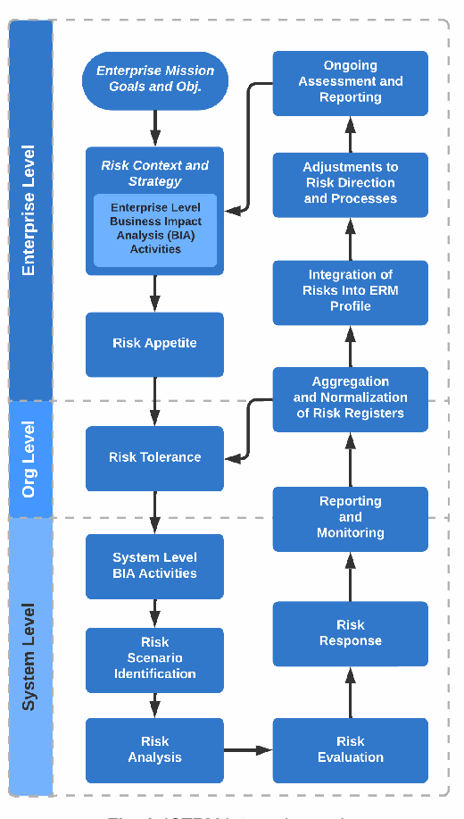
ICTRM統合サイクルの図。エンタープライズレベルでは、エンタープライズのミッション目標からリスク状況・戦略、事業影響分析（BIA）活動、リスク選好度へ進み、継続的な評価・報告、リスク指針・プロセスの調整、リスクのERMプロファイルへの統合、リスク登録簿の集約・正規化、報告・監視、リスク対応、リスク評価を経て循環する。組織レベルではリスク許容度を定め、システムレベルではBIA、リスクシナリオ特定、リスク分析を行う。
This publication explores the high-level ICT risk management (ICTRM) process illustrated by Fig. 1. Many resources — such as well-known frameworks from the Committee of Sponsoring Organizations (COSO), OMB circulars, and the International Organization for Standardization (ISO) — document ERM frameworks and processes. They generally include similar approaches: identify context, identify risk, analyze risk, estimate risk importance, determine and execute the risk response, and identify and respond to changes over time. The process recognizes that no risk response should occur without understanding stakeholder expectations for managing risk to an acceptable level, as informed by leadership’s risk appetite and risk tolerance statements. To ensure that leaders can be provided with a composite understanding of the various threats and consequences each organization and enterprise faces, risk information is recorded and shared through risk registers.2 At higher levels in the enterprise structure, various risk registers (including those related to ICTRM) are aggregated, normalized, and prioritized into risk profiles.
本刊行物は、図1に示す高位のICTリスク管理（ICTRM）プロセスを取り上げます。ERMのフレームワークやプロセスは、COSO、OMB通達、国際標準化機構（ISO）などのよく知られた枠組みを含む多くの資料で説明されています。一般に、状況の特定、リスクの特定、リスク分析、リスクの重要度の推定、リスク対応の決定と実行、時間の経過に伴う変化の特定と対応という類似の手順が含まれます。このプロセスでは、リーダーシップのリスク選好度およびリスク許容度の声明に示された方針を踏まえ、ステークホルダーが許容可能な水準でリスクを管理することへの期待を理解せずに、リスク対応を行ってはならないと認識します。各組織やエンタープライズが直面するさまざまな脅威と結果を、リーダーが総合的に理解できるよう、リスク情報はリスク登録簿に記録・共有されます。2 エンタープライズ構造の上位レベルでは、ICTRM関連を含む複数のリスク登録簿を集約・正規化して優先順位を付け、リスクプロファイルにまとめます。
未レビュー訳Fig. 1. ICTRM integration cycle
図1 ICTRM統合サイクル
未レビュー訳While it is critical for an enterprise to address potential negative impacts on mission and business objectives, it is equally critical (and required for federal agencies) that enterprises plan for success. OMB states that “the [Enterprise Risk] profile must identify sources of uncertainty, both positive (opportunities) and negative (threats)” [OMB-A123]. Enterprise-level decision makers use the risk profile to choose which enterprise risks to address, allocate resources, and delegate responsibilities to appropriate risk owners. ERM strategy includes defining terminology, formats, criteria, and other guidance for risk inputs from lower levels of the enterprise. Integrating risk management information from throughout the enterprise supports a full-scope enterprise risk register (ERR) and a prioritized enterprise risk profile (ERP). These artifacts enhance ERM deliberations, decisions, and actions. Integrating this information enables the inclusion of ICT risks (including various operational technology, supply chain, privacy, and cybersecurity risks) as part of financial, valuation, mission, and reputation exposure. A comprehensive ERR and ERP support communication and disclosure requirements. The integration of technology-specific risk management activities supports an understanding of exposures related to corporate reporting (e.g., income statements, balance sheets, cash flow) and similar requirements (e.g., reporting for appropriation and oversight authorities) for public-sector entities. The iterative ICTRM process enables adjustments to risk management direction. As leaders receive feedback regarding enterprise progress, strategy can be adjusted to take advantage of an opportunity or to better address negative risks as information is collected and shared. Applying a consistent approach to identify, assess, respond to, and communicate risk throughout the enterprise about the entire portfolio of ICT risk disciplines will help ensure that leaders and executives are accurately informed and able to support effective strategic and tactical decisions. While the methods for managing risk among different disciplines will vary widely, an ICT-wide approach to directing risk management, reporting and monitoring the results, and adjusting to optimize the achievement of enterprise objectives will provide valuable benefits.
エンタープライズが使命や事業目標に対する潜在的な悪影響に対処することは極めて重要ですが、成功に向けて計画することも同様に重要です。連邦機関にはこれが求められています。OMBは、「［エンタープライズリスク］プロファイルには、不確実性の源泉として、ポジティブなもの（機会）とネガティブなもの（脅威）の両方を特定しなければならない」と述べています［OMB-A123］。エンタープライズレベルの意思決定者は、リスクプロファイルを用いて、どのエンタープライズリスクに対処するかを選択し、資源を配分し、適切なリスク所有者に責任を委任します。ERM戦略では、エンタープライズの下位レベルからのリスク情報に適用する用語、形式、基準、その他の指針を定めます。エンタープライズ全体からリスク管理情報を統合することで、包括的なエンタープライズリスク登録簿（ERR）と、優先順位付けされたエンタープライズリスクプロファイル（ERP）を作成できます。これらの成果物は、ERMに関する審議、意思決定、措置を強化します。この情報を統合すると、さまざまな運用技術、サプライチェーン、プライバシー、サイバーセキュリティのリスクを含むICTリスクを、財務、企業価値、使命、評判に関するリスクエクスポージャーの一部として扱えます。包括的なERRとERPは、コミュニケーションおよび開示の要件を支援します。技術分野固有のリスク管理活動を統合することで、企業の報告書（損益計算書、貸借対照表、キャッシュフローなど）に関するリスクエクスポージャーや、公的機関における類似の要件（予算配分や監督当局への報告など）を理解しやすくなります。反復的なICTRMプロセスにより、リスク管理の方向性を調整できます。リーダーはエンタープライズの進捗に関するフィードバックを受け取り、情報が収集・共有されるにつれて、機会を活用したりネガティブリスクに適切に対処したりできるよう戦略を見直します。ICTリスク分野のポートフォリオ全体について、エンタープライズ全体で一貫したリスクの特定、評価、対応、伝達の方法を適用すれば、リーダーや幹部が正確な情報を得て、効果的な戦略・戦術上の意思決定を支援できます。分野ごとにリスク管理手法は大きく異なりますが、ICT全体でリスク管理の方向性を定め、結果を報告・監視し、エンタープライズ目標の達成を最適化するよう調整することで、大きな利点が得られます。
未レビュー訳Introduction
序論
未レビュー訳The Office of Management and Budget (OMB) defines risk as “the effect of uncertainty on objectives” [OMB-A11]. The effect of uncertainty on enterprise mission and business objectives may then be considered an enterprise risk that must be similarly managed. The process of managing risks at the enterprise level is known as enterprise risk management (ERM), and it calls for:
行政管理予算局（OMB）は、リスクを「目標に対する不確実性の影響」と定義しています［OMB-A11］。エンタープライズの使命や事業目標に対する不確実性の影響は、同様に管理すべきエンタープライズリスクとみなすことができます。エンタープライズレベルでリスクを管理するプロセスはエンタープライズリスク管理（ERM）と呼ばれ、次の事項が含まれます。
未レビュー訳•Identifying and understanding the core risks facing an enterprise,
•エンタープライズが直面する主要なリスクを特定し、理解すること。
未レビュー訳•Determining how best to address those risks, and
•それらのリスクに最善の方法で対処すること。
未レビュー訳•Ensuring that the necessary actions are taken.
•必要な措置が確実に実施されるようにすること。
未レビュー訳Playbook: Enterprise Risk Management for the U.S. Federal Government [PLAYBOOK] defines numerous types of risk, including compliance, financial, legal, legislative, operational, reputational, and strategic. Enterprises use ERM to holistically manage the combined set of risks. OMB Circular A-123 “establishes an expectation for federal agencies to proactively consider and address risks through an integrated…view of events, conditions, or scenarios that impact mission achievement” [OMB-A123]. OMB considers ERM to be “an effective agency-wide approach to addressing the full spectrum of the organization’s significant risks by understanding the combined impact of risks as an interrelated portfolio, rather than addressing risks only within silos” [OMB-A123]. In the private sector, the Committee of Sponsoring Organizations (COSO) publication, Enterprise Risk Management – Integrating with Strategy and Performance, defines ERM as the “culture, capabilities, and practices that organizations integrate with strategy-setting and apply when they carry out that strategy, with a purpose of managing risk in creating, preserving, and realizing value” [COSOERM]. Many information and communications technology (ICT) risk management (ICTRM) disciplines — including cybersecurity, supply chain, and privacy — have evolved into full-fledged risk programs because of organizations’ reliance on ICT. ICT includes technology that extends beyond traditional information technology considerations. Many enterprises rely on operational technology (OT) and IoT (Internet of Things) devices’ sensors or actuators to bridge the physical and digital worlds. Artificial intelligence (AI) increasingly factors into enterprise risk. The rapid evolution of ICTRM disciplines has sometimes led to miscommunication and inefficiencies between those risk programs and the overarching ERM portfolio of risks. In recent years, NIST has published guidance to codify risk management practices for several ICT risk programs, such as cybersecurity (Cybersecurity Framework [NISTCSF]), privacy (Privacy Framework [NISTPF]), information system and organization cybersecurity and privacy (Risk Management Framework [NISTRMF]), artificial intelligence (Artificial Intelligence Risk Management Framework [AIRMF]), Internet of Things (IoT) cybersecurity [NISTIOT], and cybersecurity supply chain risk management (C-SCRM) [CSCRM].
『米国連邦政府向けエンタープライズリスク管理プレイブック』［PLAYBOOK］は、コンプライアンス、財務、法務、立法、運用、評判、戦略など、多様なリスクの種類を定義しています。エンタープライズはERMを用いて、リスクの複合的な全体を包括的に管理します。OMB通達A-123は、「連邦機関が、使命の達成に影響を及ぼす事象、状況、シナリオを統合的に捉え、リスクを先を見越して検討し対処することを期待する」と定めています［OMB-A123］。OMBはERMを、「リスクを個別の縦割り領域だけで扱うのではなく、相互に関連するポートフォリオとしてリスクの複合的な影響を理解し、組織の重要なリスク全体に対処する効果的な機関横断型のアプローチ」と考えています［OMB-A123］。民間部門では、COSO（トレッドウェイ委員会支援組織委員会）の刊行物『エンタープライズリスク管理―戦略およびパフォーマンスとの統合』がERMを、「組織が戦略策定に統合し、その戦略を遂行する際に適用する文化、能力、実務であり、価値の創出、維持、実現におけるリスク管理を目的とするもの」と定義しています［COSOERM］。組織がICTに依存するようになったため、サイバーセキュリティ、サプライチェーン、プライバシーなど、多くの情報通信技術（ICT）リスク管理（ICTRM）分野が本格的なリスクプログラムへと発展しました。ICTには従来の情報技術の範囲を超える技術が含まれます。多くのエンタープライズは、運用技術（OT）やIoT（モノのインターネット）機器のセンサーまたはアクチュエーターを用いて、物理世界とデジタル世界をつないでいます。人工知能（AI）もエンタープライズリスクにますます関わっています。ICTRM分野の急速な進展により、各リスクプログラムとERMの包括的なリスクポートフォリオとの間で、コミュニケーションの齟齬や非効率が生じることがあります。近年、NISTは、サイバーセキュリティ（サイバーセキュリティフレームワーク［NISTCSF］）、プライバシー（プライバシーフレームワーク［NISTPF］）、情報システムおよび組織のサイバーセキュリティとプライバシー（リスク管理フレームワーク［NISTRMF］）、人工知能（AIリスク管理フレームワーク［AIRMF］）、IoTのサイバーセキュリティ［NISTIOT］、サイバーセキュリティ・サプライチェーンリスク管理（C-SCRM）［CSCRM］など、複数のICTリスクプログラムにおけるリスク管理実務を体系化する指針を公表してきました。
未レビュー訳1.1 Purpose and Scope
1.1 目的および適用範囲
未レビュー訳This publication broadens NIST’s existing ICT risk guidance by recognizing and incorporating ICTRM within the overall sphere of ERM. All ICT risk programs can work together to support ERM and can be integrated into risk portfolios for ERM. Comparing the outputs of ICTRM activities with effective inputs to ERM activities and the outputs of ERM with effective inputs for ICTRM enables stakeholders to identify opportunities to enable stakeholders to successfully manage risk and pursue opportunities. This document is intended to help improve communication (including risk information sharing) between and among ICT professionals and system owners, high-level executives, and corporate officers at multiple levels. The goal is to assist personnel in better identifying, assessing, and managing ICT risks in the context of their broader mission and business objectives. This document will help professionals understand what executives and corporate officers need for them to carry out ERM. This includes what data to collect, what analyses to perform, and how to consolidate and condition this discipline-specific risk information. This document will also help executives and officers understand the challenges that ICT professionals face. This document references some materials that are specifically intended for use by federal agencies, but the concepts and approaches are intended to be useful for all enterprises. Other NIST resources that support this document include:
本刊行物は、ICTRMをERM全体の枠組みの中で認識し、組み込むことで、NISTの既存のICTリスク指針を拡張します。すべてのICTリスクプログラムはERMを支援するために連携し、ERMのリスクポートフォリオに統合できます。ICTRM活動の出力をERM活動への有効な入力と比較し、ERMの出力をICTRMへの有効な入力と比較することで、ステークホルダーはリスクを適切に管理し、機会を追求する方法を特定できます。本書は、複数の階層にいるICT専門家やシステム所有者と、上級幹部や企業役員との間のコミュニケーション（リスク情報の共有を含む）の改善を支援します。要員が、より広範な使命や事業目標の文脈でICTリスクを適切に特定、評価、管理できるようにすることが目的です。本書は専門家がERMを実施する幹部や企業役員のニーズを理解するのに役立ちます。具体的には、収集すべきデータ、実施すべき分析、分野固有のリスク情報を集約・調整する方法を扱います。また、ICT専門家が直面する課題を幹部や役員が理解する助けにもなります。本書では連邦機関向けの資料もいくつか参照しますが、ここで説明する概念とアプローチはすべてのエンタープライズに役立つことを意図しています。本書を支援するその他のNIST資料には、次のものがあります。
未レビュー訳•NIST Special Publication (SP) 800-221A, Information and Communications Technology (ICT) Risk Outcomes: Integrating ICT Risk Management Programs with the Enterprise Risk Portfolio [SP800221A], which provides outcome examples that apply to all types of ICT risk and complements the content of this document. The outcomes defined in NIST SP 800-221A are also available in spreadsheet format from the NIST Cybersecurity and Privacy Reference Tool (CPRT) website.3
•NIST特別刊行物（SP）800-221A『情報通信技術（ICT）リスクの成果：ICTリスク管理プログラムのエンタープライズリスクポートフォリオへの統合』［SP800221A］は、あらゆる種類のICTリスクに適用する成果の例を示し、本書の内容を補完します。NIST SP 800-221Aで定義する成果は、NISTサイバーセキュリティ・プライバシー参照ツール（CPRT）のウェブサイトから表計算形式でも入手できます。3
未レビュー訳•An informative reference that links the contents of NIST SP 800-221A with the NIST Cybersecurity Framework is posted as part of the National Online Informative References (OLIR) Program.4
•NIST SP 800-221Aの内容とNISTサイバーセキュリティフレームワークを関連付ける参考資料は、National Online Informative References（OLIR）プログラムの一環として公開されています。4
未レビュー訳•The NIST Interagency or Internal Report (IR) 8286 [IR8286] series of publications describes an example implementation of the ICTRM process tailored to cybersecurity. They illustrate integrated risk identification, assessment, monitoring, and reporting through cybersecurity examples and describe processes that are analogous to many types of ICT risk.
•NIST省庁間・内部報告書（IR）8286［IR8286］シリーズは、サイバーセキュリティに合わせたICTRMプロセスの実装例を説明します。同シリーズは、サイバーセキュリティの例を通じて、リスクの特定、評価、監視、報告を統合する方法を示し、さまざまな種類のICTリスクにも適用できる類似プロセスを説明します。
未レビュー訳1.2 Document Structure
1.2 文書の構成
未レビュー訳The remainder of this document is organized into the following major sections:
本書の残りの部分は、次の主要な節で構成されています。
未レビュー訳•Section 2 provides a brief introduction to ICTRM and explores common challenges involved in integrating ICTRM with ERM processes.
•第2節ではICTRMの概要を紹介し、ICTRMをERMプロセスに統合する際の一般的な課題を検討します。
未レビュー訳•Section 3 discusses ICT risk considerations throughout the ERM process and highlights the use of the risk register to document ICT risk as ERM input.
•第3節では、ERMプロセス全体におけるICTリスクに関する考慮事項を説明し、ERMへの入力としてICTリスクを記録するリスク登録簿の利用を取り上げます。
未レビュー訳•Section 4 examines how ICT risk registers can be used for adopting a portfolio view of risk at the enterprise level based on normalizing and aggregating ICT risk registers into an enterprise risk register and then applying prioritization to it to generate an enterprise risk profile to support senior executive decision-making during boardroom deliberations.
•第4節では、ICTリスク登録簿を正規化・集約してエンタープライズリスク登録簿を作成し、それに優先順位付けを適用してエンタープライズリスクプロファイルを生成することで、エンタープライズレベルでリスクをポートフォリオとして捉える方法を検討します。このプロファイルは、役員会での審議中に上級幹部が意思決定するための情報となります。
未レビュー訳•Section 5 explores enterprise strategy for ICT risk coordination. While this section is mainly for enterprise leaders, others may also find its contents useful.
•第5節では、ICTリスクを調整するためのエンタープライズ戦略を検討します。この節は主にエンタープライズのリーダーを対象としていますが、他の読者にも役立つ内容です。
未レビュー訳•The References section provides information about the external sources cited in this publication.
•参考文献の節には、本刊行物で引用する外部資料に関する情報を記載しています。
未レビュー訳•Appendix A lists the acronyms used in the document.
•付録Aには、本書で使用する頭字語を記載しています。
未レビュー訳•Appendix B provides a notional example of a risk detail record (RDR).
•付録Bには、リスク詳細記録（RDR）の概念例を示しています。
未レビュー訳Introduction to ICTRM and Challenges with ERM Integration
ICTRMの概要とERM統合における課題
未レビュー訳This section provides a brief introduction to ICTRM and explores common challenges involved in integrating ICTRM with ERM processes.
この節ではICTRMの概要を簡潔に説明し、ICTRMをERMプロセスに統合する際の一般的な課題を検討します。
未レビュー訳Comparing ICTRM and ERM
ICTRMとERMの比較
未レビュー訳Distinguishing ICTRM from ERM and understanding how they relate first requires differentiating the terms organization and enterprise. Although they are often used interchangeably,5 this document considers an organization to be an entity of any size, complexity, or position within a larger organizational structure (e.g., a federal agency or company), and an enterprise is an organization at the top level of the hierarchy. Fig. 2 shows a notional enterprise with subordinate organizations and illustrates that one of those subordinates is itself an enterprise. Both government and industry are represented in this depiction.
ICTRMとERMを区別し、両者の関係を理解するには、まず「組織」と「エンタープライズ」の用語を区別する必要があります。両者はしばしば同じ意味で使われますが、5 本書では、規模、複雑さ、大きな組織構造内での位置を問わないあらゆる主体（連邦機関や企業など）を「組織」とし、階層の最上位にある組織を「エンタープライズ」とします。図2は、下位組織を持つ概念上のエンタープライズを示し、下位組織の一つ自体もエンタープライズであることを表しています。この図は政府と産業界の双方を例示しています。
未レビュー訳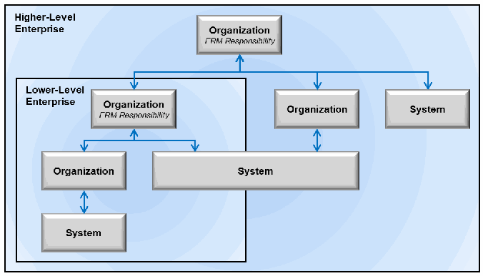
エンタープライズの階層図。上位レベルのエンタープライズに「ERM責任」を持つ組織があり、その下の下位レベルのエンタープライズには、ERM責任を持つ組織、他の組織、システムが配置される。組織やシステム同士も上下の関係を持ち、エンタープライズから複数の下位組織・システムへ関係がつながる。
Fig. 2. Enterprise hierarchy
図2 エンタープライズの階層
未レビュー訳Consider the example of the Department of Commerce as a higher-level enterprise with bureaus (e.g., Census Bureau, National Oceanic and Atmospheric Administration [NOAA], NIST) as lower-level enterprises and their subordinates (e.g., NOAA’s National Weather Service, NIST laboratories) representing organizations. In industry, consider mergers and acquisitions where an enterprise acquires another company, which itself was an enterprise, and then subordinates it within the higher-level enterprise’s conglomeration of organizations and systems. Each enterprise is supported by various systems that are each a discrete set of information resources organized expressly for the collection, processing, maintenance, use, sharing, dissemination, or disposition of information.
上位レベルのエンタープライズとして商務省を考えます。下位レベルのエンタープライズとして、国勢調査局、米国海洋大気庁（NOAA）、NISTなどの局を置き、その下位組織（NOAAの国立気象局、NISTの研究所など）を組織とみなします。産業界では、あるエンタープライズが別の企業を合併・買収する場合を考えてください。買収される企業もそれ自体がエンタープライズでしたが、買収後は、上位エンタープライズが持つ組織やシステムの集合の中に組み込まれます。各エンタープライズは、情報の収集、処理、保守、利用、共有、配布または廃棄を明確な目的として編成された情報資源の個別集合である、さまざまなシステムに支えられています。
未レビュー訳Most ICTRM responsibilities tend to be carried out by the individual organizations within an enterprise. In contrast, the ERM responsibility for tracking key enterprise risks and their impacts on objectives is at the highest-level enterprise, held by top-level corporate officers and board members who have fiduciary and reporting duties not performed elsewhere in the enterprise. ERM requires identifying and understanding the various types of risk, including ICT risks, that an enterprise faces; determining the probability that these risks will occur; and estimating their potential impact. ERM processes provide senior enterprise executives with a portfolio view of key risks across the enterprise, and this portfolio considers the outputs of all ICTRM disciplines.6 Public and private enterprises have a common primary purpose for ERM: safeguard the enterprise’s mission, finances (e.g., net revenue, capital, free cash flow), and reputation (e.g., stakeholder trust) in the face of natural, accidental, and adversarial threats.
ICTRMの責任の多くは、エンタープライズ内の各組織が担います。一方、主要なエンタープライズリスクとその目標への影響を追跡するERMの責任は、エンタープライズの最上位にあります。そこで責任を担う企業幹部や取締役会の構成員は、エンタープライズ内の他の場所では担われない受託者責任および報告責任を負います。ERMでは、ICTリスクを含む、エンタープライズが直面するさまざまな種類のリスクを特定・理解し、それらが発生する可能性を判断し、潜在的な影響を推定する必要があります。ERMプロセスは、エンタープライズ全体の主要リスクをポートフォリオとして捉えた視点を上級幹部に提供します。このポートフォリオでは、すべてのICTRM分野の成果を考慮します。6 官民を問わず、エンタープライズがERMを実施する主な目的は共通しており、自然災害、偶発的事象、敵対的脅威に直面する中で、使命、財務（純収益、資本、フリーキャッシュフローなど）、評判（ステークホルダーの信頼など）を守ることです。
未レビュー訳ICTRM Life Cycle
ICTRMのライフサイクル
未レビュー訳There are many models for risk management processes. Table 1 illustrates similarities among several common risk management models, including establishing context, identifying risks, analyzing risks, estimating risk importance, determining and executing risk response, and monitoring and responding to changes over time. The entries in Table 1 indicate (in parentheses) their identifier or section number from the source material whenever available. Table 1 provides a high-level comparison and is not intended to be a crosswalk for relationships among the models but, rather, show that risk management disciplines that aggregate into the ERM process follow similar steps to manage risk. The resources in Table 1 are from:
リスク管理プロセスには多くのモデルがあります。表1は、一般的な複数のリスク管理モデルの類似点を示します。これらのモデルには、状況の確立、リスクの特定、分析、重要度の推定、リスク対応の決定と実行、時間の経過に伴う変化の監視と対応が含まれます。表1では、可能な場合、出典資料における識別子または節番号を括弧内に記載しています。表1は大局的な比較を示すもので、各モデル間の関係を対応付ける表ではありません。むしろ、ERMプロセスに集約されるリスク管理分野が、リスク管理において類似した手順に従うことを示します。表1の資料は以下のとおりです。
未レビュー訳•U.S. Chief Financial Officers Council (CFOC) and Performance Improvement Council (PIC) Playbook: Enterprise Risk Management for the U.S. Federal Government (or ERM Playbook) [PLAYBOOK];
•米国最高財務責任者評議会（CFOC）および業績改善評議会（PIC）『米国連邦政府向けエンタープライズリスク管理プレイブック』（ERMプレイブック）［PLAYBOOK］；
未レビュー訳•Committee of Sponsoring Organizations of the Treadway Commission (COSO) Enterprise Risk Management – Integrating with Strategy and Performance Framework
•トレッドウェイ委員会支援組織委員会（COSO）『エンタープライズリスク管理―戦略およびパフォーマンスとの統合』フレームワーク
未レビュー訳[COSOERM];
［COSOERM］；
未レビュー訳•International Organization for Standardization (ISO) 31000, Risk Management standard
•国際標準化機構（ISO）31000『リスクマネジメント』規格
未レビュー訳[ISO31000];
［ISO31000］；
未レビュー訳•U.S. Office of Management and Budget (OMB) Circular A-123 – Management’s Responsibility for Internal Control [OMB-A123]; and
•米国行政管理予算局（OMB）通達A-123『内部統制に関する経営陣の責任』［OMB-A123］；および
未レビュー訳•U.S. Government Accountability Office (GAO) Standards for Internal Control in the Federal Government [GREENBOOK].
•米国政府説明責任院（GAO）『連邦政府内部統制基準』［GREENBOOK］。
未レビュー訳Table 1. Similarities among selected ERM and risk management documents
表1 選択したERM文書とリスク管理文書の類似点
未レビュー訳| ERM Playbook | COSO ERM Framework | ISO 31000:2018 | OMB A-123 | GAO Green Book |
| Identify the Context | Governance and Culture Strategy and Objective Setting | Establish External Context (5.3.2), Establish Internal Context (5.3.3) | Establish Context | Define objectives and risk tolerances (6.01) |
| Identify the Risks | Performance Review and Revision Information, Communication, and Reporting | Risk Assessment / Risk Identificati on (5.4.2) | Identify Risks | Identification of Risks (7.02) |
| Analyze the Risks | Risk Analysis (5.4.3) | Analyze and Evaluate | Analysis of Risks (7.05) | |
| Assess Likelihood | Calculate Level of Risk | Management estimates the significance of a risk and considers the magnitude of impact, the likelihood of occurrence, and the nature of the risk | ||
| Assess Impact | ||||
| Prioritize Risks | ||||
| Calculate Exposure | ||||
| Plan and Execute Response Strategies | Risk Evaluation (5.4.4) | Develop Alternatives | Response to Risks (7.08) | |
| Risk Treatment (5.5) | Respond to Risks | |||
| Monitor, Evaluate, and Adjust | Performance Review and Revision Information, Communication, and Reporting | Monitoring and Review (5.6) | Monitor and Review | Identification of Change (9.02) |
| Analysis of and Response to Change (9.04) |
原本の表画像
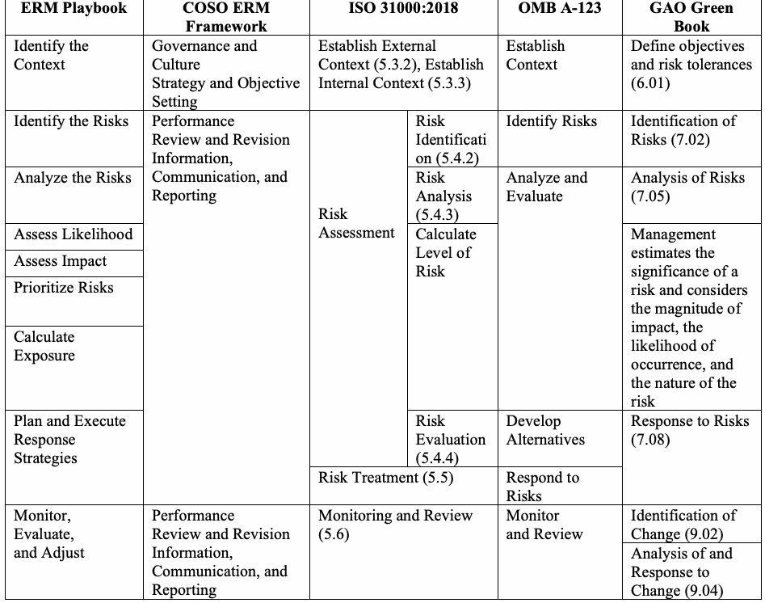
| ERMプレイブック | COSO ERMフレームワーク | ISO 31000:2018 | OMB A-123 | GAOグリーンブック |
| 状況の特定 | ガバナンスと文化、戦略および目標の設定 | 外部状況の確立（5.3.2）、内部状況の確立（5.3.3） | 状況の確立 | 目標とリスク許容度の定義（6.01） |
| リスクの特定 | パフォーマンスのレビューと改訂、情報、コミュニケーション、報告 | リスク評価／リスクの特定（5.4.2） | リスクの特定 | リスクの特定（7.02） |
| リスクの分析 | リスク分析（5.4.3） | 分析と評価 | リスクの分析（7.05） | |
| 発生可能性の評価 | リスク水準の算出 | 管理者はリスクの重大性を推定し、影響の大きさ、発生可能性、およびリスクの性質を考慮する | ||
| 影響の評価 | ||||
| リスクの優先順位付け | ||||
| エクスポージャーの算出 | ||||
| 対応戦略の計画と実行 | リスク評価（5.4.4） | 代替案の策定 | リスクへの対応（7.08） | |
| リスク対応（5.5） | リスクへの対応 | |||
| 監視、評価、調整 | パフォーマンスのレビューと改訂、情報、コミュニケーション、報告 | 監視およびレビュー（5.6） | 監視とレビュー | 変化の特定（9.02） |
| 変化の分析と対応（9.04） |
This document uses the processes of the ERM Playbook (column 1 in Table 1) as a basis for describing the ICTRM life cycle and explaining how ICTRM integrates with ERM at a high level. This is not meant to imply that all enterprises should use these steps; enterprises should determine and apply the appropriate approach to achieve ICTRM/ERM integration, communication, and monitoring.
本書では、ICTRMのライフサイクルを説明し、ICTRMがERMにどのように統合されるかを高位レベルで示すため、ERMプレイブック（表1の第1列）のプロセスを基礎として用います。すべてのエンタープライズがこの手順を採用すべきだという意味ではありません。各エンタープライズは、ICTRMとERMの統合、コミュニケーション、監視を実現する適切なアプローチを決定し、適用してください。
未レビュー訳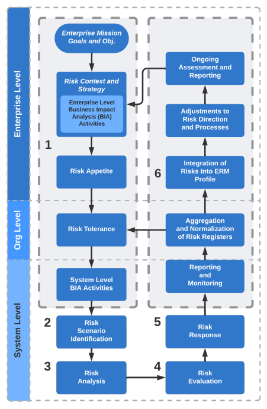
ガバナンスとリスク管理プログラムの統合図。エンタープライズリスクプロファイル（ERP）が優先順位付けされたエンタープライズリスク登録簿（ERR）を受け取り、複数のリスク管理プログラムの登録簿を集約・正規化する。財務、サプライチェーン、サイバーセキュリティ、プライバシー、評判、規制の各ERRへ集約し、組織レベル、下位組織レベル、システムレベルの各リスク登録簿から段階的に情報を集める。図中には「ERMリスク管理プログラムのポートフォリオ」「ICTリスクの例」「管理」も示される。
The six steps in the notional ICTRM life cycle, as shown in Fig. 3, are:
図3に示すICTRMの概念上のライフサイクルは、次の6段階からなります。
未レビュー訳•Step 1. Identify the context. Context refers to the external and internal environment in which the enterprise operates and is influenced by the risks involved. This step includes determining and documenting the enterprise mission, including goals and objectives, and the enterprise risk management strategy. This step also includes enterprise leaders communicating risk management expectations to their component organizations.
•ステップ1 状況を特定する。状況とは、エンタープライズが活動し、関連するリスクの影響を受ける外部および内部環境を指します。この段階では、目標と目的を含むエンタープライズの使命、およびエンタープライズリスク管理戦略を決定して文書化します。また、エンタープライズのリーダーがリスク管理への期待を構成組織に伝達します。
未レビュー訳•Step 2. Identify the risks. This means identifying the comprehensive set of positive and negative risks and determining which events could enhance or impede objectives, including the risk of failing to pursue an opportunity. Fig. 3. Notional life cycle for integrated ICTRM
•ステップ2 リスクを特定する。ポジティブリスクとネガティブリスクを網羅的に特定し、機会を追求しないリスクを含め、どの事象が目標を促進または阻害するかを判断します。図3 統合ICTRMの概念上のライフサイクル
未レビュー訳•Step 3. Analyze the risks. This involves estimating the likelihood that each identified risk event will occur and the potential impact of the consequences described.
•ステップ3 リスクを分析する。特定した各リスク事象が発生する可能性と、記述された結果がもたらす潜在的な影響を推定します。
未レビュー訳•Step 4. Prioritize the risks. The exposure is calculated for each risk based on likelihood and potential impact, and the risks are then prioritized based on their exposure.
•ステップ4 リスクの優先順位を付ける。各リスクの発生可能性と潜在的影響に基づいてエクスポージャーを算出し、そのエクスポージャーに基づいてリスクに優先順位を付けます。
未レビュー訳•Step 5. Plan and execute risk response strategies. The appropriate response is determined for each risk and informed by risk guidance from leadership.
•ステップ5 リスク対応戦略を計画し、実行する。リーダーシップのリスク指針を踏まえ、各リスクに適切な対応を決定します。
未レビュー訳•Step 6. Monitor, evaluate, and adjust risk management. Ongoing review of risk management results ensures that enterprise risk conditions remain within the defined risk appetite levels as risks change.
•ステップ6 リスク管理を監視、評価、調整する。リスクが変化してもエンタープライズのリスク状況が定めたリスク選好度の水準内に収まるよう、リスク管理の結果を継続的に見直します。
未レビュー訳Steps 2 through 6 usually utilize risk registers. OMB Circular A-11 describes a risk register as “a repository of risk information, including the data understood about risks over time.” It also states, “Typically, a risk register contains a description of the risk, the impact if the risk should occur, the probability of its occurrence, mitigation strategies, risk owners, and a ranking to identify higher priority risks” [OMB-A11]. Each register evolves and matures as other risk activities take place.
通常、ステップ2から6ではリスク登録簿を利用します。OMB通達A-11は、リスク登録簿を「リスクに関して時間の経過とともに理解されたデータを含むリスク情報の保管場所」と説明しています。また、「通常、リスク登録簿にはリスクの説明、発生した場合の影響、発生確率、軽減戦略、リスク所有者、および優先度の高いリスクを特定する順位が含まれる」としています［OMB-A11］。他のリスク活動が進むにつれて、各登録簿も更新され成熟していきます。
未レビュー訳Not all risk management methodologies generate an artifact called a risk register or risk log. However, the output of each methodology contains the underpinnings of (or can serve as an input to) a risk register. Because they can be useful information-gathering constructs, organizations not yet familiar with or using risk registers are strongly urged to adopt and integrate them into whatever risk management methodology they are currently using. Risk registers represent an organizing principle for communicating ICT risks to the OMB Circular A-123 ERM process for organizations already familiar with this management construct. Documenting and tracking ICT risks in risk registers provides a common organizing method and fosters communication between ICT risk disciplines and senior decision makers. Section 3 provides more detail about each step and all the elements within Fig. 3.
すべてのリスク管理手法が、リスク登録簿またはリスクログと呼ばれる成果物を作成するわけではありません。しかし、各手法の出力には、リスク登録簿の基礎となる情報が含まれるか、その入力情報として利用できます。リスク登録簿にまだ慣れていない、または利用していない組織には、情報収集の構造として有用なため、現在利用しているリスク管理手法に取り入れ、統合することを強く推奨します。すでにこの管理方法に慣れている組織にとって、リスク登録簿はOMB通達A-123のERMプロセスにICTリスクを伝達するための整理原則となります。ICTリスクをリスク登録簿に記録・追跡することで、共通の整理方法が得られ、ICTリスク分野と上級意思決定者とのコミュニケーションが促進されます。第3節では、図3の各段階とすべての要素を詳しく説明します。
未レビュー訳ICTRM and ERM Integration
ICTRMとERMの統合
未レビュー訳ERM and ICTRM have several points of integration. First, enterprise governance activities for ERM direct the strategy and methods for ICTRM and other risk management disciplines to use. Based on this guidance, each discipline within each organization uses risk registers to document its risks. In the case of ICTRM, risks are derived from system-level assessments. Next, these risk registers are aggregated, normalized, and used to create enterprise-level risk registers for each discipline. These, in turn, become part of a broader enterprise risk register (ERR) that encompasses all disciplines. Fig. 4 demonstrates that ERM and ICTRM are not separate processes. Rather, ICTRM represents an important subset of the broader portfolio of ERM. Documenting and tracking ICT risks in lower-level risk registers supports better management of ICT risks at the enterprise level.7 The ERR is prioritized by those with fiduciary and oversight responsibilities creating an enterprise risk profile (ERP), also known as an ERM risk profile.8 An ERP is created by considering enterprise risks in relation to achieving objectives as typically outlined in an organizational strategic plan. OMB Circular A-123 [OMB-A123] requires ERPs to include four kinds of objectives: strategic, operations (operational effectiveness and efficiency), reporting (reporting reliability), and compliance (compliance with applicable laws and regulations). While there may be some overlap among the categories of objectives, understanding uncertainty as it affects these objectives will help inform effective and timely decision-making. Effective ERM balances achieving objectives with optimizing resources. Section 3 discusses ICTRM and ERM integration in much greater detail.
ERMとICTRMには、複数の統合ポイントがあります。まず、ERMのためのエンタープライズガバナンス活動によって、ICTRMや他のリスク管理分野が利用する戦略や手法が定められます。この指針に基づき、各組織内の各分野は、リスク登録簿を用いてリスクを文書化します。ICTRMの場合、リスクはシステムレベルの評価から導き出されます。次に、これらのリスク登録簿を集約・正規化し、各分野のエンタープライズレベルのリスク登録簿を作成します。これらはさらに、すべての分野を含む包括的なエンタープライズリスク登録簿（ERR）の一部となります。図4は、ERMとICTRMが別個のプロセスではないことを示しています。ICTRMは、より広範なERMポートフォリオの重要な一部です。下位レベルのリスク登録簿にICTリスクを記録して追跡することで、エンタープライズレベルでICTリスクをより適切に管理できます。7 受託者責任および監督責任を負う者がERRに優先順位を付け、エンタープライズリスクプロファイル（ERP）を作成します。これはERMリスクプロファイルとも呼ばれます。8 ERPは、通常、組織の戦略計画で示される目標の達成に関連付けてエンタープライズリスクを検討して作成します。OMB通達A-123［OMB-A123］は、ERPに4種類の目標を含めるよう求めています。戦略、運用（運用の有効性と効率）、報告（報告の信頼性）、コンプライアンス（適用される法律および規則への準拠）です。目標カテゴリ間には一部重複があり得ますが、不確実性がこれらの目標に及ぼす影響を理解することで、効果的かつ適時の意思決定に役立ちます。効果的なERMは、目標達成と資源の最適化のバランスを取ります。第3節ではICTRMとERMの統合についてさらに詳しく説明します。
未レビュー訳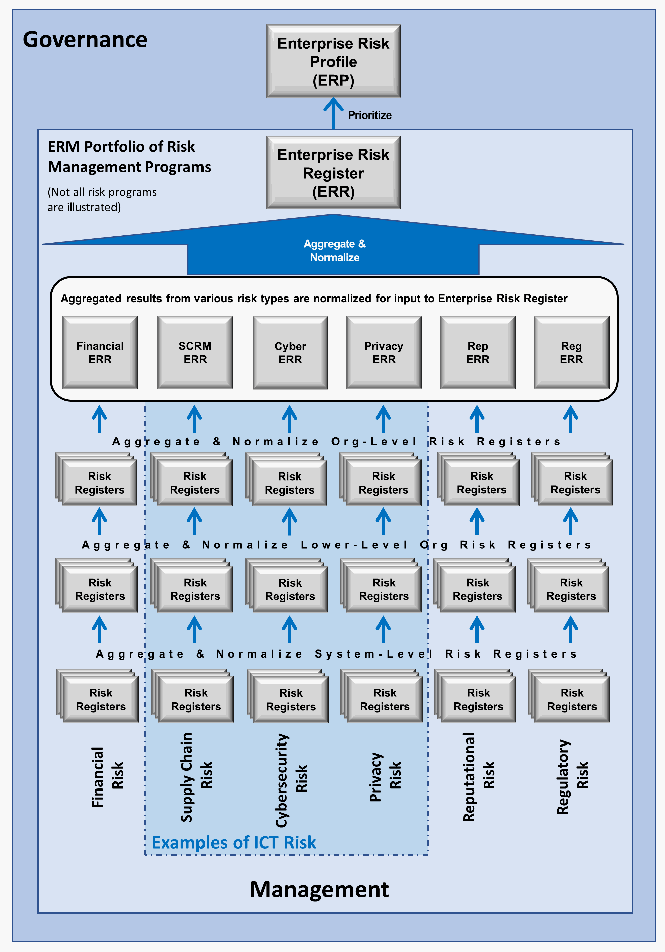
ERMプロセスにおけるICTRMの位置付けを示す図。全般的なエンタープライズリスク管理の流れは、状況の特定、リスクの特定、リスク分析、リスク評価、リスク対応の決定・実施、監視・評価・調整から成る。ICTRMはこのERMの枠組みに組み込まれ、各段階でICTリスク情報を提供する。
Fig. 4. ICTRM as part of ERM
図4 ERMの一部としてのICTRM
未レビュー訳Shortcomings of Typical Approaches to ICTRM
2.4 一般的なICTRMアプローチの課題
未レビュー訳In many enterprises, ICTRM disciplines have not historically been well-integrated with ERM processes. While ICTRM follows many of the same high-level principles as the ERM framework, ICTRM is typically executed quite differently, and its outputs are not always properly conditioned as ERM inputs. Some common contributors to those shortcomings are described below.
多くのエンタープライズでは、従来、ICTRM分野とERMプロセスが十分に統合されていません。ICTRMはERMフレームワークと同じ高位の原則を多く採用していますが、通常、その実施方法は大きく異なり、ICTRMの出力がERMの入力として適切に調整されていない場合があります。こうした課題の一般的な要因を以下に説明します。
未レビュー訳2.4.1. Increasing System and Ecosystem Complexity
2.4.1 システムおよびエコシステムの複雑化
未レビュー訳Many systems today are complex, adaptive “system-of-systems” composed of thousands of interdependent components and myriad channels. In addition to technical complexity, operations are continually influenced by rapidly changing external factors (e.g., societal, political, and environmental). This dynamic landscape introduces threats from individuals and groups with shifting alliances, attitudes, and agendas. The ongoing introduction of new technologies has also changed and complicated the landscape. Wireless connections, big data, cloud computing, and the IoT present new complexities and concomitant vulnerabilities. Operational technology (OT), including building management systems and physical access control/monitoring systems, is increasingly relied upon. Information and technology are no longer as simple as automated filing systems. Rather, they are like the central nervous system — a delicately balanced and intricate part of an organization or enterprise that coordinates and controls the most fundamental assets of most organizations. This ecosystem’s increasing complexity gives rise to systemic risks and exploitable vulnerabilities that — once triggered — can have a runaway effect with multiple severe consequences for enterprises. Enterprises have historically applied traditional IT resilience goals and techniques to ensure the availability of mission-related functions, even if in a degraded state. However, ICT complexity can reach a level where traditional resilience techniques are insufficient, particularly when components are physically separated or have critical timing dependencies. For example, for some electrical grid networks, the timing of events and faults might be measured in milliseconds. In a water treatment context, a failure in the interaction between chemical valves and pumps could have life-threatening consequences. The fault tolerance system itself may become a vulnerability. For these reasons, risk practitioners need to consider increasing ecosystem complexity when identifying and responding to risk scenarios. Managing ICT risk for these ecosystems is incredibly challenging because of their dynamic complexity. This complexity increases the risk to specific systems, and that risk can cascade to create additional risks at the system, organization, and enterprise levels. Emerging risk conditions created by the interdependence of systems and counterparty risk must also be identified, tracked, and managed.
今日の多くのシステムは、数千の相互依存する構成要素と無数の経路から成る複雑な適応型の「システム・オブ・システムズ」です。技術的な複雑さに加え、運用は社会、政治、環境などの急速に変化する外部要因の影響を絶えず受けます。この動的な状況により、同盟関係、姿勢、目的が変化する個人や集団からの脅威が生じます。新技術が継続的に導入されることも状況を変化させ、複雑化させてきました。無線接続、ビッグデータ、クラウドコンピューティング、IoTは、新たな複雑さとそれに伴う脆弱性をもたらします。建物管理システムや物理的な入退室管理・監視システムなどの運用技術（OT）への依存も高まっています。情報と技術は、もはや単純な自動ファイリングシステムのようなものではありません。むしろ、中枢神経系のように、組織やエンタープライズの精緻で均衡の取れた一部として、その最も基本的な資産を調整し制御します。このエコシステムの複雑化は、システミックリスクや悪用可能な脆弱性を生み、引き金が引かれると連鎖的に拡大してエンタープライズに複数の深刻な結果をもたらすことがあります。エンタープライズは従来、使命に関連する機能の可用性を確保するため、機能が低下した状態であっても稼働を維持できるよう、従来型ITのレジリエンス目標と手法を適用してきました。しかし、ICTの複雑さが高まると、特に構成要素が物理的に離れている場合や、厳しい時間依存関係がある場合に、従来のレジリエンス手法では不十分になる可能性があります。たとえば、一部の電力網では、事象や障害の発生タイミングがミリ秒単位で測定されます。水処理施設では、化学薬品バルブとポンプの連携障害が生命を脅かす結果につながる可能性があります。フォールトトレランスシステム自体が脆弱性となることもあります。こうした理由から、リスク実務者はリスクシナリオの特定と対応にあたり、エコシステムの複雑化を考慮する必要があります。動的な複雑さを持つエコシステムのICTリスク管理は非常に困難です。この複雑さは個々のシステムへのリスクを高め、そのリスクが波及してシステム、組織、エンタープライズの各レベルで追加のリスクを生む場合があります。システム間の相互依存関係や取引相手リスクにより生じる新たなリスク状況も、特定、追跡、管理する必要があります。
未レビュー訳2.4.2. Lack of Standardized Measures
2.4.2 標準化された測定方法の欠如
未レビュー訳ICT risk measurement has been extensively researched for decades. As measurement techniques have evolved, the complexity of digital assets has also greatly increased, making the measurement problem more difficult to solve. Some low-level measures9 have been standardized, like the estimated likelihood and impact of a particular vulnerability being exploited. However, for many aspects of ICT risk, there are no standard measures. Without consistent measures, there is little basis for analyzing risk or expressing risk in comparable ways across digital assets and the systems composed of those assets.
ICTリスクの測定は何十年にもわたり広く研究されてきました。測定手法が進歩する一方で、デジタル資産の複雑さも大幅に増し、測定上の課題は解決しにくくなっています。特定の脆弱性が悪用される可能性と影響の推定など、一部の低位の測定方法9は標準化されています。しかし、ICTリスクの多くの側面には標準的な測定方法がありません。一貫した測定方法がなければ、リスクを分析したり、デジタル資産やそれらで構成されるシステム間で比較可能な形で表現したりするための基盤がほとんどありません。
未レビュー訳2.4.3. Informal Analysis Methods
2.4.3 非公式な分析手法
未レビュー訳Risk analysis for ICT tends to be inconsistent compared to many other forms of risk. Even where guidance is provided, such as in NIST publications, the resulting risk assessment reports from agencies differ significantly. Moreover, foundational inputs for likelihood and impact calculations generally lack a standardized methodology or are at the discretion of vendors who provide a scoring system. Decisions are often made based on an individual’s instinct, experience, and knowledge of conventional wisdom and typical practices. In addition, there is usually little analysis performed after controls are deployed to determine whether risks have been reduced to a level deemed acceptable (i.e., within the established risk tolerance parameters).
ICTリスクの分析は、他の多くの種類のリスク分析と比べて一貫性に欠ける傾向があります。NIST刊行物などで指針が提供されている場合でも、各機関が作成するリスク評価報告書には大きな差があります。また、発生可能性や影響の計算に使う基礎的な入力情報には、一般に標準化された方法がなく、スコアリングシステムを提供するベンダーの判断に委ねられることがあります。意思決定は、個人の直感、経験、一般的な知見や慣行に関する知識に基づいて行われることが少なくありません。さらに、管理策を導入した後、リスクが許容可能な水準（すなわち、定められたリスク許容度の範囲内）まで低減されたかを判断する分析も、通常ほとんど行われていません。
未レビュー訳2.4.4. Overly Focused on the System Level
2.4.4 システムレベルへの過度な集中
未レビュー訳The management of ICT risk is conducted in different ways at various levels, including at the system, organization, and enterprise levels. A common practice is for individual system-level teams to be responsible for tracking relevant risks. While system reporting to the organizational level may occur, there is typically no mechanism in place to consolidate the risk data for systems to the organization level, much less to the enterprise level. When organization or enterprise managers receive system risk data, it is often a vague risk map or at such a volume as to be impractical. Therefore, it is not surprising that higher levels of an organization or enterprise tend to struggle with understanding ICT risk. This struggle may be less pronounced in organizations with an enterprise architecture that maps systems onto the business processes they support. Many enterprise risks are interdependent. A common industry example is that while cybersecurity, privacy, and credit risks are different elements of the ERM portfolio, all three risks could be associated with unauthorized access to an organization’s store of individuals’ financial or other credit-related data. Such a data breach could create problems to individuals such as economic loss as well as organizational impacts like a loss of public confidence. These interdependencies make it important for enterprise managers to collaborate, communicate, and recognize that information, technology, and business risks are not isolated issues. The increased integration of OT further heightens that need.
ICTリスク管理は、システム、組織、エンタープライズなど、さまざまなレベルで異なる方法により実施されます。個々のシステムレベルのチームが関連リスクの追跡を担うことは一般的です。システムから組織レベルへの報告は行われる場合がありますが、システムのリスクデータを組織レベルに集約する仕組みは通常なく、ましてエンタープライズレベルに集約する仕組みはほとんどありません。組織またはエンタープライズの管理者がシステムリスクデータを受け取っても、漠然としたリスクマップであったり、実務に使えないほど大量であったりします。そのため、組織やエンタープライズの上位レベルがICTリスクの理解に苦労するのは当然です。システムと、それが支援する事業プロセスとの対応関係を示すエンタープライズアーキテクチャを持つ組織では、こうした課題が小さい可能性があります。多くのエンタープライズリスクは相互に依存しています。業界でよく挙げられる例として、サイバーセキュリティ、プライバシー、信用リスクはERMポートフォリオ内の別個の要素ですが、いずれも組織が保有する個人の財務情報やその他の信用関連データへの不正アクセスに関係する可能性があります。このようなデータ侵害は、個人に経済的損失をもたらすだけでなく、組織に対する社会的信頼を損なうなどの影響も与えます。こうした相互依存関係があるため、エンタープライズの管理者は協力・連絡し、情報、技術、事業上のリスクが孤立した問題ではないと認識することが重要です。OTの統合が進むにつれて、その必要性は一層高まります。
未レビュー訳2.4.5. The Gap Between ICTRM Output and ERM Input
2.4.5 ICTRMの出力とERMへの入力の隔たり
未レビュー訳Even where ICT risk is managed well throughout the enterprise, the results of that ICTRM are not provided as input to ERM in some cases. There is value in bringing this information together, as illustrated by Fig. 4. An enterprise that seeks to avoid all ICT risks might stifle innovation or efficiencies to the point where little value would be produced. At the other end of the spectrum, an enterprise that applies technology without regard to actual risk increases the chances that it might fall victim to undesirable consequences. Effectively balancing the benefits of technology with the potential risks and consequences of a threat event is more likely to result in effective ICTRM that supports a comprehensive ERM approach. Enterprises, organizations, and practitioners should consider the influence of risks on achieving enterprise strategies, operations, reporting, and compliance objectives. Enterprise risk officers should communicate these enterprise objectives so that practitioners can take action and provide relevant risk inputs to ERM programs. They also need to consider relevant policy decisions and regulatory impacts.
エンタープライズ全体でICTリスクを適切に管理していても、そのICTRMの結果がERMへの入力として提供されない場合があります。図4に示すように、これらの情報を統合することには価値があります。すべてのICTリスクを避けようとするエンタープライズは、革新や効率化を過度に抑制し、ほとんど価値を生み出せなくなる可能性があります。一方、実際のリスクを考慮せずに技術を導入するエンタープライズは、望ましくない結果に遭遇する可能性が高まります。技術の利点と脅威事象の潜在的なリスクおよび結果のバランスを効果的に取ることで、包括的なERMを支える効果的なICTRMを実現しやすくなります。エンタープライズ、組織、実務者は、エンタープライズの戦略、運用、報告、コンプライアンス目標の達成に各リスクが及ぼす影響を考慮する必要があります。エンタープライズのリスク担当者は、実務者が行動し、ERMプログラムに関連するリスク情報を提供できるよう、これらの目標を伝達する必要があります。また、関連する方針決定と規制上の影響も考慮する必要があります。
未レビュー訳For ERM purposes, there should be a process for integrating the risk registers of various ICTRM disciplines. This allows for the easy exchange of risk knowledge between ICTRM and ERM participants. Many organizations do not conduct these activities in consistent, repeatable ways. Analyzing and aggregating ICT risks are often done in an ad hoc fashion and are not performed with the rigor used for other types of risk. This lowers the quality of ICT risk information provided to ERM.
ERMのため、さまざまなICTRM分野のリスク登録簿を統合するプロセスを設ける必要があります。これにより、ICTRMとERMの関係者間でリスクに関する知識を容易に交換できます。多くの組織は、これらの活動を一貫性と再現性のある方法で実施していません。ICTリスクの分析と集約は場当たり的に行われることが多く、他の種類のリスク管理で用いる厳密さを欠いています。その結果、ERMに提供されるICTリスク情報の質が低下します。
未レビュー訳2.4.6. Losing the Context of the Positive Risk
2.4.6 ポジティブリスクの文脈の喪失
未レビュー訳As aggravated by the multi-level nature of risk management, risks identified and managed at the system and organizational levels sometimes lose the context of associated positive risks. (The topic of positive risk, essentially the management of beneficial uncertainty’s effects on objectives, is described in Sec. 3.7.) The basic rationalization for addressing negative risks with resources, time, and funding is that positive risks warrant those investments. Only by evaluating the value of positive risks alongside the expense of negative risks can we understand whether the continued pursuit of positive risks and investment in negative risks is “worth it.” Losing track of positive risks can result in over-investing in the corresponding negative risks.
リスク管理が複数のレベルにまたがることも影響し、システムレベルや組織レベルで特定・管理されるリスクは、関連するポジティブリスクの文脈を失うことがあります。（ポジティブリスク、すなわち目標に対する有益な不確実性の影響の管理については、3.7節で説明します。）ネガティブリスクに資源、時間、資金を投入する基本的な理由は、それによってポジティブリスクの追求が可能になることです。ポジティブリスクの価値とネガティブリスクの費用を併せて評価して初めて、ポジティブリスクの追求とネガティブリスクへの投資を続ける価値があるか判断できます。ポジティブリスクを把握しなくなると、それに対応するネガティブリスクへ過剰投資する可能性があります。
未レビュー訳ICT Risk Considerations
ICTリスクに関する考慮事項
未レビュー訳This section discusses ICT risk considerations and is structured according to the six steps in the notional ICTRM life cycle described in Fig. 3:
この節ではICTリスクに関する考慮事項を説明し、図3で示したICTRMの概念上のライフサイクルの6段階に沿って構成しています。
未レビュー訳1.Identify the context.
1.状況の特定。
未レビュー訳2.Identify the risks.
2.リスクの特定。
未レビュー訳3.Analyze (qualify) the risks.
3.リスクを分析（定量化）する。
未レビュー訳4.Prioritize the risks.
4.リスクの優先順位を付ける。
未レビュー訳5.Plan and execute risk response strategies.
5.リスク対応戦略を計画し、実行する。
未レビュー訳6.Monitor, evaluate, and adjust risk management.
6.リスク管理を監視、評価、調整する。
未レビュー訳Following those, Sec. 3.7 briefly discusses considerations for positive risks.
これらに続き、3.7節ではポジティブリスクに関する考慮事項を簡潔に説明します。
未レビュー訳Identify the Context
状況の特定
未レビュー訳In the risk management life cycle, the first step in managing ICT risks is understanding context — the environment in which the organization operates and is influenced by the risks involved. The context provides important input into the other risk management life cycle steps by documenting the expectations and drivers to be considered. The risk context includes two factors:
リスク管理ライフサイクルにおいて、ICTリスクを管理する最初の段階は状況を理解することです。状況とは、組織が活動し、関係するリスクの影響を受ける環境を指します。状況を記録することで、考慮すべき期待事項や要因が明確になり、他のリスク管理ライフサイクルの各段階に重要な入力情報を提供します。リスク状況には、次の2つの要素があります。
未レビュー訳•External context involves the expectations of outside stakeholders who affect and are affected by the organization, such as customers, regulators, legislators, and business partners. These stakeholders have objectives, perceptions, and expectations about how risk will be communicated, managed, and monitored.
•外部状況には、組織に影響を与える、または組織から影響を受ける顧客、規制当局、立法者、ビジネスパートナーなど、外部ステークホルダーの期待が含まれます。これらのステークホルダーは、リスクの伝達、管理、監視の方法について、目標、認識、期待を持っています。
未レビュー訳•Internal context relates to many of the factors within the organization and relevant considerations across the enterprise. This includes any internal factors that influence risk management, such as the organization and enterprise’s objectives, governance, culture, risk appetite, risk tolerance, policies, and practices.
•内部状況は、組織内の多くの要因とエンタープライズ全体に関わる考慮事項に関連します。リスク管理に影響する内部要因には、組織およびエンタープライズの目標、ガバナンス、文化、リスク選好度、リスク許容度、方針、実務などがあります。
未レビュー訳Several NIST frameworks begin with determining these context factors. NIST Cybersecurity Framework Step 1: Prioritize and Scope states that organizations make strategic decisions regarding ICT implementations and determine the scope of the systems and assets that support the selected business line or process. These context exercises identify the organization’s mission drivers and priorities used for subsequent assessment and planning.
複数のNISTフレームワークは、これらの状況要因の特定から始まります。NISTサイバーセキュリティフレームワークのステップ1「優先順位付けと適用範囲の設定」では、ICTの導入に関する戦略的決定を行い、選択した事業部門またはプロセスを支援するシステムと資産の適用範囲を定めます。こうした状況の検討により、後続の評価と計画に用いる組織の使命を動かす要因と優先事項を特定します。
未レビュー訳3.1.1. Risk Governance
3.1.1 リスクガバナンス
未レビュー訳As an important component of ERM, ICTRM helps ensure that ICT risks do not hinder the accomplishment of established enterprise mission objectives. ICTRM also helps ensure that exposure to ICT risk remains within the limits assigned by enterprise leadership. The method for connecting enterprise operations and communications to strategy is governance. Governance represents the methods for evaluating strategic options and directing activities to achieve that strategy. Through a governance model, enterprise objectives are determined, providing direction for prioritization and decision-making. Governance is often described as distinct from management in the same way that a directive from a ship’s captain is distinct from the many activities performed to fulfill the directive. Similarly, risk governance is the process by which risk management evaluation, decisions, and actions are connected to enterprise strategy and objectives. Risk governance provides the transparency, responsibility, and accountability that enables managers to acceptably manage risk. In this regard, there can be multiple participants in the governance process, depending on context and enterprise type. Larger entities might implement risk governance mechanisms across the enterprise with more specific governance mechanisms at the organization (e.g., division, portfolio, or bureau) and apply that strategy to systems or programs. Table 2 illustrates some notional roles and responsibilities at each level.
ERMの重要な構成要素として、ICTRMはICTリスクが定められたエンタープライズの使命目標の達成を妨げないようにします。また、ICTリスクへのエクスポージャーがエンタープライズのリーダーシップが設定した限度内に収まるようにします。エンタープライズの運用やコミュニケーションを戦略に結び付ける方法がガバナンスです。ガバナンスとは、戦略的選択肢を評価し、その戦略を達成するための活動を指示する方法を指します。ガバナンスモデルを通じてエンタープライズの目標を定め、優先順位付けや意思決定の方向性を示します。ガバナンスは、船長の指示と、その指示を実行するために行われる多様な活動が異なるのと同じように、管理とは別のものとして説明されることがよくあります。同様に、リスクガバナンスとは、リスク管理に関する評価、決定、措置をエンタープライズの戦略および目標に結び付けるプロセスです。リスクガバナンスは、管理者が適切にリスクを管理するための透明性、責任、説明責任をもたらします。このため、状況やエンタープライズの種類に応じて、ガバナンスプロセスには複数の参加者が関与する場合があります。大規模な組織は、エンタープライズ全体にリスクガバナンスの仕組みを導入するとともに、組織（事業部門、ポートフォリオ、局など）レベルではより具体的な仕組みを設け、その戦略をシステムやプログラムに適用することがあります。表2は、各レベルにおける役割と責任の概念例を示しています。
未レビュー訳Table 2. Examples of risk oversight roles and responsibilities
表2 リスク監督に関する役割と責任の例
未レビュー訳| Risk Functions | Notional Private-Sector Roles | Notional Federal Government Roles | Notional Responsibilities |
| Enterprise- Level Oversight | Board of Directors, Regulators, Chief Executive Officer, Chief Operating Officer | OMB, U.S. Congressional Oversight Committees, Head of Agency | Ensures alignment with strategic priorities. Monitors and corrects misalignments. Holds management accountable for performance. Receives periodic progress reports. |
| Enterprise- Level Risk Governance | Chief Risk Officer (or Enterprise Risk Officer), Vice President – Risk Management, ERM Council | Senior Accountable Official for Risk Management, Chief Risk Officer, Senior Agency Information Security Officer, Senior Agency Official for Privacy, Risk Executive (Function) (e.g., ERM Council) | Provides oversight, direction, and priorities for the ERM function. Identifies risks that may require external reporting or disclosure to the public, stakeholders, or regulators. |
| Enterprise- Level Risk Management | Chief Operating Officer, Chief Financial Officer or Controller,10 Chief Risk Officer | Chief Operating Officer, Chief Financial Officer, Chief Risk Officer, Enterprise Risk Management Officer | Leads and implements the ERM program. Ensures frequent visibility for high-priority risks that affect the enterprise (e.g., reports quarterly to senior executives on top risks and the status of integrating risk management principles in various functions/lines of business). Aggregates and normalizes risks for comparison at the enterprise level in consultation with risk owners. Determines enterprise risk threshold (risk appetite and tolerance) for high-priority risks in consultation with business leads and ensures that it |
原本の表画像
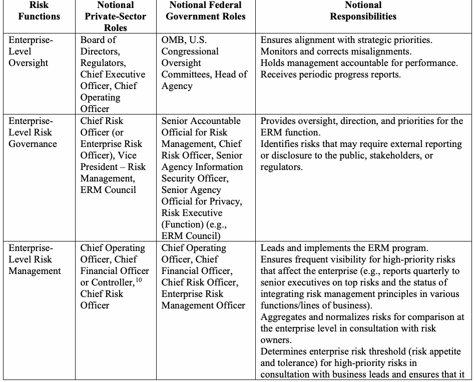
| リスク機能 | 民間部門の役割の例 | 連邦政府の役割の例 | 責任の例 |
| エンタープライズレベルの監督 | 取締役会、規制当局、最高経営責任者、最高執行責任者 | OMB、米国議会の監督委員会、機関の長 | 戦略的優先事項との整合を確保する。ずれを監視し是正する。業績について管理者に説明責任を負わせる。定期的な進捗報告を受ける。 |
| エンタープライズレベルのリスクガバナンス | 最高リスク責任者（またはエンタープライズリスク責任者）、リスク管理担当副社長、ERM評議会 | リスク管理担当上級責任者、最高リスク責任者、機関上級情報セキュリティ責任者、機関上級プライバシー責任者、リスク担当役員（機能別）（例：ERM評議会） | ERM機能に対する監督、方針、優先事項を提供する。外部への報告や公衆、ステークホルダー、規制当局への開示が必要となる可能性のあるリスクを特定する。 |
| エンタープライズレベルのリスク管理 | 最高執行責任者、最高財務責任者またはコントローラー、10 最高リスク責任者 | 最高執行責任者、最高財務責任者、最高リスク責任者、エンタープライズリスク管理責任者 | ERMプログラムを主導し、実施する。エンタープライズに影響する優先度の高いリスクを常に可視化する（例：主要リスクや、さまざまな機能／事業部門におけるリスク管理原則の統合状況を上級幹部に四半期ごとに報告する）。リスク所有者と協議し、エンタープライズレベルで比較できるようリスクを集約・正規化する。事業責任者と協議して優先度の高いリスクに対するエンタープライズリスク基準値（リスク選好度および許容度）を定め、これが |
| Risk Functions | Notional Private-Sector Roles | Notional Federal Government Roles | Notional Responsibilities |
| is communicated and known by the appropriate staff. | |||
| Organization- Level Risk Governance (Subsidiary, Bureau, Operative, or Division) | Division President, Director of Security, Chief Information Officer, Chief Information Security Officer, Division/Unit Risk Officer | Division/Unit Risk Officer, Senior Agency/Chief Information Security Officer, Chief Information Officer, Chief Data Officer, Senior Agency Official for Privacy, Risk Executive (Function) | Establishes and communicates risk management policies, priorities, and expectations across and through the organization in specific risk domains. Partners with enterprise-level risk functions to ensure continued visibility of organization-level risk. Ensures sub-organization staff are aware of policies, procedures, and risk parameters (e.g., risk appetite and tolerance) to effectively balance risk with mission performance. |
| System-Level Risk Management | Business System Owner, Risk Owner, Information Owner, Information System Security Manager | Authorizing Official, System Owner, Risk Owner, Information Owner, Information System Security Manager, Information System Security Officer | Coordinates with organization-level risk managers (e.g., the CISO) to document and track identified risks and provide input on alignment with established risk parameters. Ensures that risks are being monitored, that the status is periodically reported to the CISO, and that risk response decisions are communicated back to the risk owner. |
原本の表画像
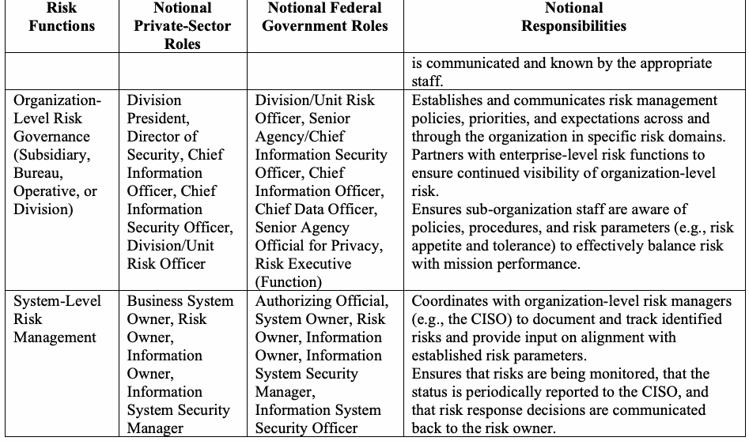
| リスク機能 | 民間部門の役割の例 | 連邦政府の役割の例 | 責任の例 |
| 適切な職員に確実に伝達され、認識されるようにする。 | |||
| 組織レベルのリスクガバナンス（子会社、局、運用部門または事業部門） | 事業部門長、セキュリティ責任者、最高情報責任者、最高情報セキュリティ責任者、事業部門／ユニットのリスク責任者 | 事業部門／ユニットのリスク責任者、機関上級／最高情報セキュリティ責任者、最高情報責任者、最高データ責任者、機関上級プライバシー責任者、リスク担当役員（機能別） | 特定のリスク領域について、組織内および組織を通じたリスク管理方針、優先事項、期待を確立し、伝達する。組織レベルのリスクが継続的に可視化されるよう、エンタープライズレベルのリスク機能と連携する。組織下位の職員が方針、手順、リスク基準（リスク選好度や許容度など）を理解し、リスクと使命遂行のバランスを効果的に取れるようにする。 |
| システムレベルのリスク管理 | 業務システム所有者、リスク所有者、情報所有者、情報システムセキュリティ管理者 | 認可責任者、システム所有者、リスク所有者、情報所有者、情報システムセキュリティ管理者、情報システムセキュリティ担当者 | 組織レベルのリスク管理者（最高情報セキュリティ責任者［CISO］など）と連携し、特定したリスクを文書化・追跡するとともに、定められたリスク基準との整合性に関する情報を提供する。リスクが監視され、その状況が定期的にCISOへ報告され、リスク対応の決定がリスク所有者に伝達されるようにする。 |
As shown in the table, certain enterprise and organization risk governance functions may be delegated to other senior leaders. Individual risk programs — including cybersecurity, privacy, and C-SCRM — might then further translate enterprise risk direction (e.g., risk appetite statements) into program-specific risk direction, enabling holistic risk processes while supporting system owners’ decision authority. The division of responsibility is typical in larger organizations where an officer is specifically assigned to be responsible for program governance (e.g., chief information security officer, chief privacy officer).
表に示すとおり、特定のエンタープライズおよび組織のリスクガバナンス機能は、他の上級リーダーに委任される場合があります。その後、サイバーセキュリティ、プライバシー、C-SCRMなどの個別リスクプログラムが、エンタープライズのリスク方針（リスク選好度の声明など）をプログラム固有のリスク方針へさらに具体化することで、包括的なリスクプロセスを可能にしながら、システム所有者の意思決定権を支えます。責任の分担は、プログラムガバナンスの責任者（最高情報セキュリティ責任者、最高プライバシー責任者など）を個別に任命する大規模組織で一般的です。
未レビュー訳3.1.2. Risk Appetite and Risk Tolerance
3.1.2 リスク選好度およびリスク許容度
未レビュー訳This document draws on ERM principles regarding integration with culture, strategy, and performance. One such principle is that an “organization must manage risk to strategy and business objectives in relation to its risk appetite — that is, the types and amount of risk, on a broad level, it is willing to accept in its pursuit of value” [COSOERM]. OMB adapted this language for government use in Circular A-123 by similarly stating that risk appetite “is the broad-based amount of risk an organization is willing to accept in pursuit of its mission/vision” [OMB-A123]. Risk appetite is defined by the enterprise’s senior-level leadership as part of risk governance. Risk appetite serves as the guidepost for the types and amount of risk that senior leaders are willing to accept on a broad level in pursuit of mission objectives and enterprise value. Risk appetite may be qualitative or quantitative. Another important ERM concept is risk tolerance — the readiness of an organization or stakeholders to bear the remaining risk after responding to or considering the risk to achieve its objectives (while recognizing that such tolerance can be influenced by legal or regulatory requirements). In Circular A-123, OMB again adapted the COSO language [COSOERM] by stating that risk tolerance “is the acceptable level of variance in performance relative to the achievement of objectives.” Risk tolerance can be defined at the enterprise level, but OMB Circular A-123 offers a bit of discretion to organizations, stating that risk tolerance is “generally established at the program, objective, or component level,” which this publication references as the “organization level” [OMB-A123]. While risk appetite is defined at the enterprise level and risk tolerance at the enterprise or organization level, risk appetite is interpreted at the organizational and system levels to develop specific ICT risk tolerance. Risk tolerance represents the specific level of risk deemed acceptable within the risk appetite set by senior leadership (while recognizing that such tolerance can be influenced by legal or regulatory requirements).11 Risk tolerance is interpreted and applied by the receiving custodians of the risk management discipline (e.g., cybersecurity, financial, legal, privacy) at the organization or system level. Risk appetite and risk tolerance are related but distinct in a similar manner to the relationship between governance and management activities. Risk appetite statements define the overarching risk guidance, and risk tolerance statements define the specific application of that direction. This means that risk tolerance statements are always more specific than the corresponding risk appetite statements. Together, risk appetite and risk tolerance statements represent risk limits, help communicate risk expectations, and improve the focus of risk management efforts. They also help to address other factors, such as findings from internal audits or external reports. The definition of these risk parameters places the enterprise in a better position to identify, prioritize, treat, and monitor risks that may lead to unacceptable loss. Risk tolerance should always stay within the boundaries established by senior leadership and within the parameters of and informed by legal and regulatory requirements. An example of a statement of risk appetite is: “Email service shall be available during the large majority of a 24-hour period.” An associated risk tolerance statement for this appetite would be narrower: “Email services shall not be interrupted for more than five minutes during core hours.” Table 3 provides additional examples of actionable, measurable risk tolerance and illustrates the application of risk appetite to specific contexts within the organization-level structure. Several NIST documents, including the NIST IR 8286 series and NIST SP 800-161, Revision 1, Cybersecurity Supply Chain Risk Management Practices for Systems and Organizations, also provide detailed examples of risk appetite and risk tolerance statements and how they are interpreted and applied with the associated risk defined, managed, and communicated back to executive management via the risk register [SP800161]. Table 3. Examples of risk appetite and risk tolerance
本書は、文化、戦略、パフォーマンスへの統合に関するERMの原則に基づいています。その原則の一つは、「組織は価値を追求するにあたり、広い観点で受け入れる意思のあるリスクの種類と量、すなわちリスク選好度に照らして、戦略および事業目標に対するリスクを管理しなければならない」というものです［COSOERM］。OMBはこの表現を政府向けに調整し、通達A-123で、リスク選好度は「組織が使命／ビジョンを追求するにあたり受け入れる意思のある、広範なリスクの量」であると述べています［OMB-A123］。リスク選好度は、リスクガバナンスの一環としてエンタープライズの上級リーダーシップが定めます。リスク選好度は、使命目標とエンタープライズ価値を追求する中で、上級リーダーが広い観点から受け入れる意思のあるリスクの種類と量の指針となります。リスク選好度は定性的にも定量的にも表現できます。ERMのもう一つの重要な概念はリスク許容度です。これは、目標達成のためのリスク対応後、またはリスクを考慮した後に残るリスクを、組織やステークホルダーが受け入れる用意がある度合いを指します（この許容度は法的要件や規制要件の影響を受ける場合があります）。OMBは通達A-123でCOSOの表現［COSOERM］を再度調整し、リスク許容度を「目標の達成に関するパフォーマンスの許容可能な変動水準」としています。リスク許容度はエンタープライズレベルで定義できますが、OMB通達A-123は一定の裁量を組織に認め、「通常、プログラム、目標、または構成要素のレベルで設定される」としています。本書ではこの水準を「組織レベル」と呼びます［OMB-A123］。リスク選好度はエンタープライズレベルで定義され、リスク許容度はエンタープライズまたは組織レベルで定義されますが、組織やシステムのレベルではリスク選好度を解釈し、ICTリスクに関する具体的な許容度を設定します。リスク許容度は、上級リーダーシップが定めるリスク選好度の範囲内で許容可能とみなされる具体的なリスク水準を表します（ただし、法的要件や規制要件が許容度に影響する場合があります）。11 リスク許容度は、組織またはシステムレベルで、リスク管理分野（サイバーセキュリティ、財務、法務、プライバシーなど）の担当者が解釈し適用します。リスク選好度とリスク許容度は関連していますが、ガバナンス活動と管理活動の関係と同様に、別の概念です。リスク選好度の声明は全体的なリスク方針を定め、リスク許容度の声明はその方針を具体的に適用する条件を定めます。したがって、リスク許容度の声明は、対応するリスク選好度の声明より常に具体的です。両方の声明を併用することでリスク限度を定め、リスクに関する期待を伝達し、リスク管理活動の焦点を改善できます。また、内部監査や外部報告書の所見など、他の要因にも対処できます。これらのリスク基準を定義することで、許容できない損失につながる可能性のあるリスクを特定、優先順位付け、処置、監視する態勢が整います。リスク許容度は、常に上級リーダーシップが定める境界の内側にとどまり、法的・規制上の要件の範囲内で、それらを考慮したものである必要があります。リスク選好度の声明の例：「電子メールサービスは、24時間の大半の時間帯で利用可能でなければならない。」これに対応する、より限定的なリスク許容度の声明は、「主要業務時間中、電子メールサービスは5分を超えて中断してはならない。」となります。表3では、実行可能で測定可能なリスク許容度の追加例を示し、組織レベルの構造内にある具体的な状況へリスク選好度を適用する方法を説明します。NIST IR 8286シリーズやNIST SP 800-161改訂第1版『システムおよび組織のためのサイバーセキュリティ・サプライチェーンリスク管理の実務』など、複数のNIST文書も、リスク選好度とリスク許容度の声明、および定義した関連リスクをリスク登録簿を通じて上級管理者に伝達しながら解釈・適用する方法について詳しい例を示しています［SP800161］。表3 リスク選好度およびリスク許容度の例
未レビュー訳| Example Enterprise Type | Example Risk Appetite Statement | Example Risk Tolerance Statement |
| Global Retail Firm | Our customers associate reliability with our company’s performance, so service disruptions must be minimized for any customer-facing websites. | Regional managers may permit website outages lasting up to four hours for no more than 5 % of their customers. |
| Government Agency | Mission-critical systems must be protected from known ICT vulnerabilities. | Critical software vulnerabilities (severity score of 10) must be patched on systems designated as mission-critical within 14 days of discovery. |
原本の表画像
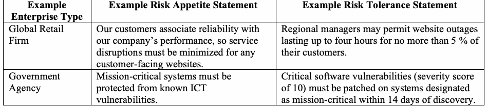
| エンタープライズの種類の例 | リスク選好度の声明の例 | リスク許容度の声明の例 |
| グローバル小売企業 | 顧客は当社の業績を信頼性と結び付けています。そのため、顧客向けウェブサイトでのサービス中断は最小限に抑えなければなりません。 | 地域担当者は、顧客の5%を超えない範囲で、最大4時間のウェブサイト停止を許容できます。 |
| 政府機関 | 使命に不可欠なシステムは、既知のICT脆弱性から保護されなければなりません。 | 重大度スコアが10の重大なソフトウェア脆弱性は、使命に不可欠と指定されたシステム上で、発見後14日以内に修正しなければなりません。 |
| Example Enterprise Type | Example Risk Appetite Statement | Example Risk Tolerance Statement |
| Internet Service Provider | The company has a low risk appetite with regard to the failure to meet customer service-level agreements, including network availability and communication speeds. | Patches must be applied to avoid attack-related outages but must also be well-tested and deployed in a manner that does not reduce availability below agreed-upon service levels. |
| Academic Institution | The institution understands that mobile computers are a necessary part of the daily life of students, and some loss is expected. The leadership, however, has no appetite for the loss of any sensitive data (as defined by the Data Classification Policy). | Because the cost of loss prevention for students’ laptops is likely to exceed the cost of the devices, it is acceptable for up to 10 % to be misplaced or stolen if and only if sensitive institution information is prohibited from being stored on students’ devices. |
| Healthcare Provider | The Board of Directors has decided that the enterprise has a low risk appetite for any exposures caused by inadequate access control or authentication processes. | There will always be some devices that do not yet support advanced authentication, but 100 % of critical healthcare business applications must use multi-factor authentication. |
原本の表画像
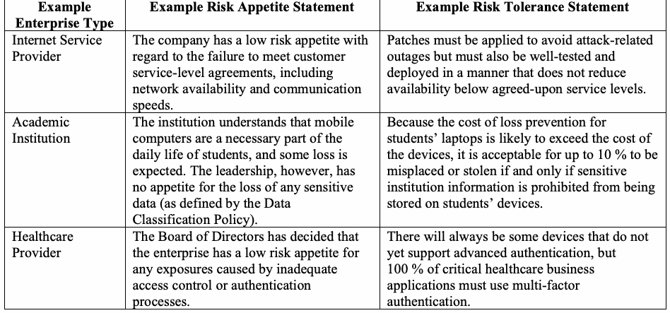
| エンタープライズの種類の例 | リスク選好度の声明の例 | リスク許容度の声明の例 |
| インターネットサービスプロバイダー | 顧客サービス水準合意を満たせないこと、ネットワークの可用性や通信速度などに関して、当社のリスク選好度は低い。 | 攻撃に起因する停止を防ぐためパッチを適用する必要があります。ただし、合意したサービス水準を下回る可用性とならないよう、十分にテストして展開しなければなりません。 |
| 学術機関 | 学生にとってモバイルコンピュータは日常生活に欠かせず、一定の損失は想定されると理解しています。ただし、データ分類方針で定義する機微データの損失は許容しません。 | 学生用ノートパソコンの紛失防止費用は端末の価格を上回る可能性が高いため、機関の機微情報を学生の端末に保存することを禁止する場合に限り、最大10%の端末が紛失または盗難に遭うことを許容します。 |
| 医療提供者 | 取締役会は、不十分なアクセス制御または認証プロセスに起因するエクスポージャーについて、エンタープライズのリスク選好度は低いと決定しています。 | 高度な認証に未対応の機器が一部残ることは避けられませんが、医療に不可欠な業務アプリケーションはすべて多要素認証を使用しなければなりません。 |
3.1.3. Risk Management Strategy
3.1.3 リスク管理戦略
未レビュー訳As part of their governance responsibilities, senior enterprise executives should establish clear and actionable risk management guidance for organizations within their purview based on enterprise mission and business objectives. This should include an enterprise strategy regarding mission priority, risk appetite and tolerance (typically in the form of risk appetite and risk tolerance statements), and capital and operating budgets to manage risks at acceptable levels. Organizations then manage and monitor processes that properly balance risks and resource allocation with the value created by ICT. Measurements (e.g., from key risk indicators, or KRIs) demonstrate where risk tolerances have been exceeded or validate that the enterprise is operating within the defined appetite. As the risk landscape evolves (e.g., due to technological or environmental changes), enterprise leaders should continually review and adjust the risk strategy. For example, an enterprise subject to external regulation is likely to receive specific guidance regarding updated federal statutes and directives that must be considered when evaluating acceptable risk. Differing assumptions may occur at all levels of the organization, so it is important to determine internal and external stakeholders’ expectations regarding risk communications and to use readily understandable and agreed-upon terms and categories, such as strategic objectives, organizational priorities, decision-making processes, and risk reporting or tracking methodologies (e.g., regular risk management committee discussions and meetings). It is also critical that enterprise leaders provide guidance regarding risk calculations. Establishing a common scale for assessing levels of risk will support consistent risk estimation, measurement, and reporting. The strategy may also include guidance regarding the mechanisms and frequency of risk reporting. As risks are recorded, tracked, and reassessed throughout the cycle, this foundation ensures that all agree on how various types of risk will be communicated and managed to ensure adherence to risk guidance and expectations. Risk management strategy is similar for both public- and private-sector enterprises. For example, public officials and corporate boards typically measure and weigh the impact and likelihood of each type of significant risk (e.g., market, operational, labor, geopolitical, technology, data) to determine their individual and total impacts on the enterprise’s mission, finances, and reputation. The public officials or board members then determine their risk appetite and resource allocations for each type of risk commensurate with likelihood and impact and balanced among all calculated enterprise risk exposures (the product of likelihood and impact). Public officials and board members also provide guidance to their corporate officers at the enterprise level and high-level executives at the organization level. This includes guidance on ceilings for capital expenditures (CapEx) and operating expenses (OpEx) and objectives for free cash flow. For the Federal Government, similar requirements are expressed through OMB guidance and strategic direction from senior agency officials, chief executives, and other designees (e.g., an ERM Council). For both private- and public-sector entities, leaders issue guidance to continue, accelerate, reduce, delay, or cancel significant enterprise initiatives while considering their risk appetite and tolerance levels. They also do this while making decisions about what constitutes prudent risk disclosures, balancing the competing objectives of a) properly informing stakeholders and overseers (including regulators) through required filings and statements at hearings and b) protecting sensitive information from competitors and adversaries.
上級エンタープライズ幹部は、ガバナンス責任の一環として、エンタープライズの使命と事業目標に基づき、自らの管轄下にある組織に対して、明確で実行可能なリスク管理指針を定めるべきです。これには、使命の優先順位、リスク選好度およびリスク許容度（通常はそれぞれの声明で示す）、ならびに許容可能な水準でリスクを管理するための資本予算と運用予算に関するエンタープライズ戦略を含めます。組織はその後、ICTが生み出す価値とリスクおよび資源配分の適切なバランスを取るプロセスを管理・監視します。主要リスク指標（KRI）などの測定値は、リスク許容度を超えた領域を示したり、エンタープライズが定められたリスク選好度の範囲内で運営されていることを裏付けたりします。技術または環境の変化などによりリスク環境が変化する中で、エンタープライズのリーダーはリスク戦略を継続的に見直し、調整するべきです。たとえば、外部規制を受けるエンタープライズは、許容可能なリスクを評価する際に考慮すべき、更新された連邦法令や指令に関する具体的な指針を受ける可能性が高くなります。組織のすべてのレベルで前提が異なる場合があるため、リスク伝達に関する内外のステークホルダーの期待を把握し、戦略目標、組織の優先事項、意思決定プロセス、リスクの報告・追跡方法（定期的なリスク管理委員会の議論や会議など）といった、理解しやすく合意された用語やカテゴリを使うことが重要です。また、エンタープライズのリーダーがリスク計算に関する指針を示すことも不可欠です。共通のリスク水準尺度を設定すれば、リスクの推定、測定、報告の一貫性を支えられます。戦略には、リスク報告の仕組みと頻度に関する指針を含めることもできます。リスク管理サイクル全体を通じてリスクを記録、追跡、再評価する際、この基盤があれば、リスクに関する指針と期待に従うため、さまざまな種類のリスクをどのように伝達・管理するかについて関係者間の共通理解が得られます。リスク管理戦略は、公共部門と民間部門のエンタープライズで共通しています。たとえば、公務員や企業の取締役会は、市場、運用、労働、地政学、技術、データなどの重大なリスクについて、各リスクの影響と可能性を測定・比較し、使命、財務、評判への個別および総合的な影響を判断します。その後、公務員や取締役会は、可能性と影響に応じて各リスクの選好度と資源配分を決定し、算出したすべてのエンタープライズリスクエクスポージャー（発生可能性と影響の積）の間でバランスを取ります。また、エンタープライズレベルの企業役員や組織レベルの上級幹部に指針を示します。これには、資本的支出（CapEx）と運用費用（OpEx）の上限、およびフリーキャッシュフローの目標が含まれます。連邦政府では、OMBの指針や機関上級職員、最高幹部、その他の指名者（ERM評議会など）による戦略的方向性を通じて、同様の要件が示されます。官民いずれの組織でも、リーダーはリスク選好度および許容度を考慮しながら、重要なエンタープライズ施策を継続、加速、縮小、延期、中止するよう指示します。また、適切なリスク開示について意思決定する際、a）必要な届出や公聴会での陳述を通じ、ステークホルダーや監督者（規制当局を含む）に適切な情報を提供することと、b）競合相手や敵対者から機微情報を保護することの相反する目的のバランスを取ります。
未レビュー訳Identify the Risks
リスクの特定
未レビュー訳The second step in the risk management life cycle involves identifying a comprehensive set of risks and recording them in the risk register. This involves identifying events that could enhance or impede objectives, including the risks involved in failing to pursue opportunities. ICT risk identification is composed of four inputs:
リスク管理ライフサイクルの第2段階では、リスクを網羅的に特定し、リスク登録簿に記録します。これには、機会を追求しないリスクを含め、目標を促進または阻害する事象の特定が含まれます。ICTリスクの特定には、次の4つの入力情報があります。
未レビュー訳1.Identification of the organization’s mission-supporting assets and their valuation,
1.組織の使命を支える資産を特定し、その価値を評価すること。
未レビュー訳2.Determination of potential threats that might jeopardize the security or performance of those assets and potential ICT opportunities that might benefit the organization,
2.資産のセキュリティまたは性能を脅かす可能性のある脅威と、組織に利益をもたらす可能性のあるICTの機会を特定すること。
未レビュー訳3.Consideration of the vulnerabilities of those assets, and
3.資産の脆弱性を考慮すること。
未レビュー訳4.Evaluation of the potential consequences of risk scenarios.
4.リスクシナリオがもたらす潜在的な結果を評価すること。
未レビュー訳Sections 3.2.1 through 3.2.4 discuss each of these four inputs in more detail. Risk practitioners often perform risk identification as both top-down and bottom-up exercises. For example, after the organization has considered critical or mission-essential functions, it may consider various types of issues that could jeopardize those functions as an input to risk scenario development. Subsequently, as a detailed threat and vulnerability assessment occurs, assessors consider how those threats might affect various assets by conducting a bottom-up assessment. This bidirectional approach helps support holistic and comprehensive risk identification.
3.2.1節から3.2.4節では、これら4つの入力情報をそれぞれ詳しく説明します。リスク実務者は、トップダウンとボトムアップの両方向からリスクを特定することがよくあります。たとえば、組織が重要機能または使命に不可欠な機能を検討した後、それらの機能を危うくする問題の種類をリスクシナリオ作成の入力として検討します。その後、詳細な脅威・脆弱性評価を行う際に、評価者がボトムアップで脅威がさまざまな資産にどのような影響を与えるかを検討します。この双方向のアプローチにより、包括的で全体的なリスク特定を支援できます。
未レビュー訳3.2.1. Inventory and Valuation of Assets
3.2.1 資産の目録作成と評価
未レビュー訳Since ICT risk reflects — at least in part — the effect of uncertainty on information and communication technology that support enterprise objectives, practitioners identify the necessary assets for achieving those objectives. The value of an asset extends beyond its replacement cost. For example, an organization could calculate the direct cost of research and development for a new product offering, but the long-term losses associated with the theft of that intellectual property could impact future revenue, share prices, enterprise reputation, and competitive advantage. A core concept in ERM is prioritizing attention and resources on assets that have the greatest impact on an enterprise’s ability to achieve its mission (and, in the case of federal agencies, impact that affects the public). Risk managers should leverage a business impact analysis (BIA) template to consistently evaluate, record, and monitor the criticality and sensitivity of enterprise assets.12 It is vitally important to gain senior stakeholders’ guidance regarding the determination of which assets are critical or sensitive. Federal agencies are required to identify and record high value assets, or HVAs. The relative importance of each enterprise asset is a necessary input for considering the impact portion of risk analysis. Note that many of the assets on which an organization depends are not within its direct control. External technical assets may include cloud-based software or platform services, telecommunications circuits, and video monitoring. Personnel may include the internal workforce, external service providers, and third-party partners.
ICTリスクは、少なくとも一部は、エンタープライズ目標を支える情報通信技術に対する不確実性の影響を表すため、実務者はその目標を達成するために必要な資産を特定します。資産の価値は、交換費用だけではありません。たとえば、新製品を開発するための研究開発費用を算出できても、その知的財産が盗まれた場合の長期的損失は、将来の収益、株価、エンタープライズの評判、競争優位性に影響する可能性があります。ERMの基本概念の一つは、エンタープライズが使命を達成する能力（連邦機関の場合は国民に及ぼす影響を含む）に最も大きな影響を与える資産に、注意と資源の優先順位を置くことです。リスク管理者は、事業影響分析（BIA）テンプレートを活用し、エンタープライズ資産の重要性と機微性を一貫して評価、記録、監視するべきです。12 どの資産が重要または機微であるかを判断するにあたり、上級ステークホルダーから指針を得ることが極めて重要です。連邦機関には、高価値資産（HVA）を特定して記録することが求められています。各エンタープライズ資産の相対的重要度は、リスク分析の影響部分を検討するために必要な入力情報です。組織が依存する資産の多くは、直接管理下にないことにも留意してください。外部の技術資産には、クラウドベースのソフトウェアやプラットフォームサービス、通信回線、ビデオ監視システムなどがあります。人員には、内部の労働力、外部のサービス提供者、サードパーティのパートナーが含まれる場合があります。
未レビュー訳3.2.2. Determination of Potential Threats
3.2.2 潜在的脅威の特定
未レビュー訳ICT risk is not inherently good or bad. Rather, it represents the effects of uncertain circumstances, so risk managers should consider a broad array of potential positive and negative risks. The following sections primarily deal with negative risks. A threat represents any circumstance or event with the potential to adversely impact organizational operations (a negative risk).13 The threat could arise from a malicious person with harmful intent or an unintended or unavoidable situation (e.g., a natural disaster, technical failure, or human errors) that may trigger a vulnerability. Numerous threat modeling techniques are available for analyzing specific threats. It may be helpful to consider both a top-down approach (i.e., reviewing critical or sensitive assets for what could potentially go wrong, regardless of threat source) and a bottom-up approach (i.e., considering the potential impact of a given set of threats or vulnerability scenarios). One source of threat analysis needed is a high-level assessment based on various frameworks (e.g., NIST Cybersecurity Framework, Privacy Framework, Secure Software Development Framework). These frameworks often provide a way to determine the enterprise’s currently implemented practices (i.e., current state) and ways to review the risk implications of that state to identify potential risk scenarios. One commonly used method that may help organizations identify potential risk outcomes is a SWOT (strengths, weaknesses, opportunities, threats) analysis. Applying SWOT analysis helps users identify opportunities that arise from organizational strengths (e.g., a well-respected software development team) and threats that reflect an organizational weakness (e.g., supply chain issues). The use of SWOT analysis helps describe and consider the context described in Sec. 3.1, including internal factors (i.e., strengths and weaknesses internal to the organization), external factors (i.e., the opportunities and threats presented by the external environment), and ways in which these factors relate to each other. While enterprises must address potential negative impacts on mission and business objectives, it is equally critical (and required for federal agencies) that enterprises plan for success. OMB states in Circular A-123 that “the profile must identify sources of uncertainty, both positive (opportunities) and negative (threats).” However, the notion of “planning for success” by identifying and realizing positive risks (opportunities) is a relatively new concept in ICTRM that is influencing other risk management disciplines. Both positive and negative risks follow the same processes, from identification to analysis to inclusion in the ERP. Whatever means are used to determine potential threats, it is important to consider them in terms of both the threat actors (i.e., the sources of risks that can result in harmful impact) and the threat events caused by their actions. Combinations of multiple risks should also be considered. For example, if one risk in the register refers to a website outage and another risk refers to an outage of the customer help desk, there may need to be a third risk in the register that considers the likelihood and impact of an outage that affects both services at once. It is also important to identify cascading risks where one primary risk event may trigger a secondary and even a tertiary event. Analysis of the likelihood and impact of these first-, second-, and third-order risks is described in Sec. 3.3. During the threat modeling process, the practitioner needs to look out for and mitigate instances of cognitive bias. Some common issues of bias include:
ICTリスク自体に善悪があるわけではありません。不確実な状況がもたらす影響を表すため、リスク管理者はポジティブリスクとネガティブリスクの双方を幅広く検討するべきです。以下の節では主にネガティブリスクを扱います。脅威とは、組織の運用に悪影響を及ぼす可能性のある状況または事象（ネガティブリスク）です。13 脅威は、害を及ぼす意図を持つ悪意ある者から発生することも、脆弱性を引き起こす自然災害、技術的障害、人為的ミスなど意図しない、または避けられない状況から発生することもあります。特定の脅威を分析するための脅威モデリング手法は数多くあります。脅威の発生源を問わず、何が問題となり得るか重要または機微な資産を検討するトップダウン方式と、特定の脅威や脆弱性シナリオがもたらす潜在的影響を検討するボトムアップ方式の両方が役立つ場合があります。必要な脅威分析の一つは、NISTサイバーセキュリティフレームワーク、プライバシーフレームワーク、セキュアソフトウェア開発フレームワークなど、複数のフレームワークに基づく高位の評価です。これらのフレームワークは、エンタープライズが現在実施している実務（現状）を把握し、その状態がリスクに与える影響を検討して、潜在的なリスクシナリオを特定する方法を提供することがよくあります。組織が潜在的なリスクの結果を特定する際に役立つ一般的な手法の一つは、SWOT（強み、弱み、機会、脅威）分析です。SWOT分析を適用すると、組織の強み（評価の高いソフトウェア開発チームなど）から生じる機会や、組織の弱み（サプライチェーンの問題など）を反映する脅威を特定できます。SWOT分析により、3.1節で説明した状況を整理し検討できます。そこには、内部要因（組織内部の強みと弱み）、外部要因（外部環境がもたらす機会と脅威）、およびそれらの相互関係が含まれます。エンタープライズが使命や事業目標に対する潜在的な悪影響に対処することは重要ですが、成功に向けた計画も同様に重要であり、連邦機関にはこれが求められています。OMBは通達A-123で、「プロファイルには、不確実性の源泉として、ポジティブなもの（機会）とネガティブなもの（脅威）の両方を特定しなければならない」と述べています。ただし、ポジティブリスク（機会）を特定し実現する「成功に向けた計画」はICTRMでは比較的新しい概念であり、他のリスク管理分野にも影響を与えています。ポジティブリスクとネガティブリスクは、特定、分析、ERPへの取り込みまで、同じプロセスに従います。潜在的脅威の特定方法にかかわらず、脅威アクター（有害な影響につながるリスクの発生源）と、その行動によって生じる脅威事象の両方の観点から脅威を検討することが重要です。複数のリスクの組み合わせも考慮する必要があります。たとえば、一つのリスク登録簿の項目がウェブサイト停止を、別の項目が顧客ヘルプデスクの停止を扱う場合、両サービスが同時に停止する可能性と影響を検討する第3の項目が必要になることがあります。主要なリスク事象が二次、さらには三次の事象を引き起こす連鎖リスクも特定することが重要です。こうした一次、二次、三次のリスクの発生可能性と影響の分析については3.3節で説明します。脅威モデリングの際、実務者は認知バイアスの発生を見つけて軽減する必要があります。よくあるバイアスの問題には、次のものがあります。
未レビュー訳•Overconfidence – The tendency for stakeholders to be overly optimistic about risk scenarios (e.g., unreasonably low likelihood of a threat event, overstated benefits of an opportunity, exaggerated estimation of the ability to handle a threat)
•過信―ステークホルダーがリスクシナリオを過度に楽観視する傾向（例：脅威事象の発生可能性を不合理に低く見積もる、機会の利点を誇張する、脅威に対処する能力を過大評価する）。
未レビュー訳•Groupthink – Rendering decisions as a group about potential threat sources and threat events in a way that discourages creativity or individual responsibility
•集団思考―創造性や個人の責任を損なう形で、脅威の発生源や脅威事象について集団で意思決定すること。
未レビュー訳•Following trends – Blindly following the latest hype or craze without a detailed analysis of the specific threats facing the organization
•流行への追従―組織が直面する具体的な脅威を詳しく分析せず、最新の流行やブームに盲目的に従うこと。
未レビュー訳•Availability bias – The tendency to focus on issues (such as threats) that come readily to mind because one has heard or read about them, perhaps in ways that are not representative of the actual likelihood of a threat event occurring and resulting in adverse impact
•利用可能性バイアス―脅威事象が実際に発生し悪影響をもたらす可能性を代表しているとは限らないにもかかわらず、聞いたり読んだりして思い浮かびやすい問題（脅威など）に注目する傾向。
未レビュー訳3.2.3. Determination of Exploitable and Susceptible Conditions
3.2.3 悪用可能な状態および影響を受けやすい状態の特定
未レビュー訳The next key input to risk identification is understanding the potential conditions that enable a threat event to occur. It is important to consider all types of vulnerabilities in all assets, including people, facilities, and information. For this document, vulnerability is simply a condition that enables a threat event to occur. It could be an unpatched software flaw, a raw material limitation, a process that leads to human error, or a physical environmental condition (like a wooden structure being flammable). The presence of a vulnerability does not cause harm in and of itself, as there needs to be a threat present to exploit it. Moreover, a threat that does not have a corresponding vulnerability may not result in a negative risk. Identifying negative risks includes understanding the potential threats and vulnerabilities to organizational assets, which can then be used to develop scenarios that describe potential risks. Some weaknesses, such as software flaws or misconfigurations, can be identified using automated scanners. These automated techniques may help to quickly identify some common vulnerabilities, but ICT weaknesses are not limited to enterprise hardware and software. For the ICT risk disciplines of privacy, supply chain, and cybersecurity, reviewing the controls described in NIST SP 800-53, Security and Privacy Controls for Information Systems and Organizations, may help highlight many potential weaknesses [SP80053]. There are advanced exploitable conditions that cannot be anticipated solely with automated tools. These can be determined using system engineering analysis tools such as Failure Mode, Effects & Criticality Analysis (FMECA), described in ISO/International Electrotechnical Commission (IEC) 31010 [IEC31010]. Whether caused by system failures or adversarial attack, such weaknesses — including critical timing race conditions and interactive system instabilities — can trigger emergent or systemic risks and should be considered part of a comprehensive threat analysis.
リスク特定における次の主要な入力情報は、脅威事象の発生を可能にする潜在的な状態を理解することです。人員、施設、情報を含むすべての資産のあらゆる種類の脆弱性を考慮することが重要です。本書では、脆弱性を脅威事象の発生を可能にする状態と定義します。たとえば、パッチが適用されていないソフトウェアの欠陥、原材料の制約、人為的ミスにつながるプロセス、木造建築物が可燃性であるといった物理的環境条件などです。脆弱性が存在するだけでは、それ自体で被害は生じません。悪用する脅威が存在する必要があります。また、対応する脆弱性がない脅威は、ネガティブリスクにならない場合があります。ネガティブリスクを特定するには、組織資産に対する潜在的脅威と脆弱性を理解し、それらを用いて潜在的リスクを説明するシナリオを作成します。ソフトウェアの欠陥や設定ミスなどの弱点は、自動スキャナーで特定できる場合があります。こうした自動化手法は、一般的な脆弱性を迅速に特定する助けになりますが、ICTの弱点はエンタープライズのハードウェアやソフトウェアに限られません。プライバシー、サプライチェーン、サイバーセキュリティの分野では、NIST SP 800-53『情報システムおよび組織のためのセキュリティ・プライバシー管理策』に記載された管理策を確認すると、多くの潜在的な弱点を明らかにできる場合があります［SP80053］。自動ツールだけでは予測できない、高度で悪用可能な状態もあります。そのような状態は、ISO／国際電気標準会議（IEC）31010［IEC31010］で説明されている故障モード・影響・致命度解析（FMECA）などのシステム工学分析ツールで特定できます。システム障害または敵対的攻撃のいずれが原因でも、クリティカルなタイミングに関する競合状態や相互作用によるシステム不安定性などの弱点は、新たに顕在化するリスクやシステミックリスクを引き起こす可能性があり、包括的な脅威分析の一部として考慮する必要があります。
未レビュー訳3.2.4. Evaluation of Potential Consequences
3.2.4 潜在的な結果の評価
未レビュー訳The final component of risk identification is documenting the potential consequences of each risk listed in the register. Many organizations incorrectly express risks outside of their context. For example, a stakeholder might say, “I’m worried about floods,” or “I’m concerned about a denial-of-service attack.” These examples cannot be analyzed or considered without knowing the full picture. Considering the above factors, an effective example of an identified risk might be (as expressed in cause-and-effect terminology), “If a hurricane causes a storm surge, it could flood the data center and damage multiple critical file servers.” Notably, ICT risks that cause unexpected or unreliable behavior in a system do not always result in the complete failure of that system to fulfill its duty in support of business objectives. Many elements of a risk management plan are implemented to support redundancy and resilience so that a highly likely threat event might result in manageable consequences. Resilient enterprise systems may be able to continue operating in the face of adverse circumstances.
リスク特定の最終要素は、リスク登録簿に記載された各リスクがもたらす潜在的な結果を文書化することです。多くの組織は、リスクを状況から切り離して誤って表現します。たとえば、ステークホルダーが「洪水が心配だ」「サービス拒否攻撃が気になる」と述べる場合があります。全体像が分からなければ、これらの例を分析または検討できません。前述の要素を踏まえた効果的なリスクの記述例は、原因と結果の形式で次のようになります。「ハリケーンによる高潮でデータセンターが浸水し、複数の重要なファイルサーバーが損傷する可能性がある。」システムの予期しない動作や信頼性の低い動作を引き起こすICTリスクが、必ずしも事業目標を支えるシステム機能の完全な喪失につながるとは限りません。リスク管理計画の多くの要素は冗長性とレジリエンスを支えるために実施され、高い発生可能性を持つ脅威事象でも、結果を管理可能な範囲に抑えられる場合があります。レジリエントなエンタープライズシステムは、逆境下でも運用を継続できることがあります。
未レビュー訳3.2.5. Risk Register Use
3.2.5 リスク登録簿の利用
未レビュー訳Risk registers are used within organizations to communicate and track ICT risks over time. By combining the results of Sections 3.2.1 through 3.2.4, the practitioner can create a set of risk scenarios in the Risk Description column of the risk register. Risk scenarios provide a means for presenting detailed risk information in context. A complete risk scenario describes the risk source, predisposing conditions, resources affected, and anticipated results. For ICT risks, a scenario might include a threat source, a threat event, a vulnerability that the threat source might exploit, enterprise assets impacted by the threat, and the resulting harmful impact. For example, “Construction activity severs a critical fiber optic cable that was not protected in conduit, interrupting communications to the data center and resulting in the loss of availability of enterprise financial systems.” Scenarios may also help to describe positive risk (i.e., opportunity). An example of this might be, “Construction of a new alternate data center improves the resilience of financial infrastructure and reduces the likelihood of an interruption.”
組織では、ICTリスクを時間の経過とともに伝達し追跡するためにリスク登録簿を利用します。3.2.1節から3.2.4節の結果をまとめることで、実務者はリスク登録簿の「リスクの説明」欄に一連のリスクシナリオを作成できます。リスクシナリオは、詳細なリスク情報を状況に即して示す手段です。完全なリスクシナリオでは、リスクの発生源、前提条件、影響を受ける資源、予測される結果を説明します。ICTリスクのシナリオには、脅威の発生源、脅威事象、発生源が悪用する可能性のある脆弱性、脅威の影響を受けるエンタープライズ資産、および結果として生じる有害な影響を含めることがあります。たとえば、「工事で、管路による保護がない重要な光ファイバーケーブルが切断され、データセンターとの通信が中断し、エンタープライズの財務システムが利用できなくなる」といった内容です。シナリオはポジティブリスク（機会）の説明にも役立ちます。たとえば、「代替データセンターを新設することで、財務インフラのレジリエンスが向上し、中断の可能性が低下する」と記述できます。
未レビュー訳Fig. 5 shows a notional risk register template.14 The notional template includes many of the elements suggested by OMB Circular A-11. It illustrates only the current risk assessment (i.e., likelihood, impact, and resulting exposure value). Organizations will need to determine which assessments should be reflected in the risk register. Because this document describes the risk register as an input into ERM processes, only the current risk assessment results are depicted. Some organizations may wish to include both the current risk assessment (before risk response is applied) and the anticipated changes to risk that are expected to result based on the risk response.
図5は、リスク登録簿テンプレートの概念例を示します。14 このテンプレートにはOMB通達A-11が提案する要素の多くが含まれます。ここでは現行のリスク評価、すなわち発生可能性、影響、そこから算出されるエクスポージャー値のみを示します。どの評価結果をリスク登録簿に反映するかは、組織が決める必要があります。本書ではリスク登録簿をERMプロセスへの入力情報として説明するため、現行のリスク評価結果のみを示しています。リスク対応を実施する前の現行評価と、リスク対応によって生じると予想されるリスクの変化の両方を含めたい組織もあるでしょう。
未レビュー訳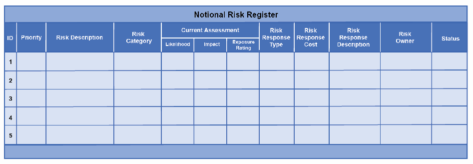
想定リスク登録簿の空欄テンプレート。列見出しは、ID、優先度、リスクの説明、リスク分類、現在の評価（発生可能性、影響度、エクスポージャー評価）、リスク対応の種類、リスク対応コスト、リスク対応の説明、リスク所有者、状態。行は1から5まで。
Fig. 5. Notional risk register template
図5 リスク登録簿テンプレートの概念例
未レビュー訳Table 4 describes each of the elements in the notional risk register template. The actual composition of the register will vary among enterprises and may contain more or fewer data points than those described in Table 4. For example:
表4では、概念上のリスク登録簿テンプレートの各要素を説明します。実際の登録簿の構成はエンタープライズによって異なり、表4に示すより多い、または少ないデータ項目を含む場合があります。たとえば、
未レビュー訳•If the register is to be updated after the risk response, the results of a post-response assessment could be reflected in the register as the residual risk.
•リスク対応後に登録簿を更新する場合、対応後の評価結果を残余リスクとして記録できます。
未レビュー訳•Organizations might document a desired risk state based on risk appetite/tolerance — the target residual risk.
•組織は、リスク選好度／許容度に基づく望ましいリスク状態、すなわち目標残余リスクを記録する場合があります。
未レビュー訳Table 4. Descriptions of notional risk register template elements
表4 リスク登録簿テンプレートの概念要素の説明
未レビュー訳| Register Element | Description |
| ID (Risk Identifier) | A sequential numeric identifier for referring to a risk in the risk register. |
| Priority | A relative indicator of the criticality of the risk expressed in ordinal value (e.g., 1, 2, 3) or in reference to a given scale (e.g., high, moderate, low). |
| Risk Description | A brief explanation of the risk scenario (potentially) impacting the organization and enterprise. Risk descriptions are often written in a cause-and-effect format, such as “if X occurs, then Y happens.” (More information is available from Section 3.2) |
| Risk Category | An organizing construct that enables multiple risk register entries to be consolidated. Consistent risk categorization is helpful for comparing risk registers during the risk aggregation step of ERM. |
| Current Assessment – Likelihood | An estimation of the probability that this scenario will occur before any risk response. On the first iteration of the risk cycle, this may also be considered the initial assessment. |
| Current Assessment – Impact | Analysis of the potential benefits or consequences that might result from this scenario if no additional response is provided. On the first iteration of the risk cycle, this may also be considered the initial assessment. (More information is available from Section 3.3) |
原本の表画像
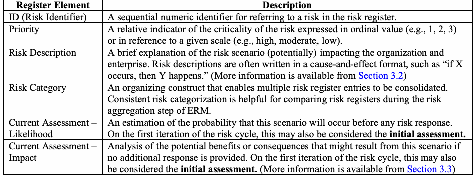
| 登録簿の要素 | 説明 |
| ID（リスク識別子） | リスク登録簿内でリスクを参照するための連続した数値識別子。 |
| 優先順位 | リスクの重大性を示す相対的な指標。序数（例：1、2、3）または定められた尺度（例：高、中、低）で表す。 |
| リスクの説明 | 組織およびエンタープライズに影響する可能性のあるリスクシナリオの簡潔な説明。リスクの説明は「Xが発生した場合、Yが起こる」のように、原因と結果の形式で記述することが多い。（詳細は3.2節を参照） |
| リスクカテゴリ | 複数のリスク登録簿の項目を統合できるようにする整理単位。リスクカテゴリを一貫して設定すると、ERMでリスクを集約する際に各登録簿を比較しやすくなる。 |
| 現行評価―発生可能性 | リスク対応前にこのシナリオが発生する確率の推定値。リスクサイクルの最初の反復では、初期評価とみなすこともできる。 |
| 現行評価―影響 | 追加の対応がない場合に、このシナリオから生じる可能性のある利益または結果の分析。リスクサイクルの最初の反復では、初期評価とみなすこともできる。（詳細は3.3節を参照） |
| Register Element | Description |
| Current Assessment – Exposure Rating | A calculation of the probability of risk exposure based on the likelihood estimate and the determined benefits or consequences of the risk. Throughout this report, the combination of impact and likelihood is referred to as exposure. Other common frameworks use different terms for this combination, such as level of risk (e.g., ISO 31000). On the first iteration of the risk cycle, this may also be considered the initial assessment. (More information is available from Section 3.3) |
| Risk Response Type | The risk response (sometimes referred to as the risk treatment) for handling the identified risk. Values for risk response types are listed in Table 5 of this document. |
| Risk Response Cost | The estimated cost of applying the risk response. |
| Risk Response Description | A brief description of the risk response. For example, “Implement software management application XYZ to ensure that software platforms and applications are inventoried,” or “Develop and implement a process to ensure the timely receipt of threat intelligence from [name of specific information sharing forums and sources].” |
| Risk Owner | The designated party responsible and accountable for ensuring that the risk is maintained in accordance with enterprise requirements. The risk owner may work with a designated risk manager who is responsible for managing and monitoring the selected risk response. |
| Status | A field for tracking the current condition of the risk and any next activities. |
原本の表画像
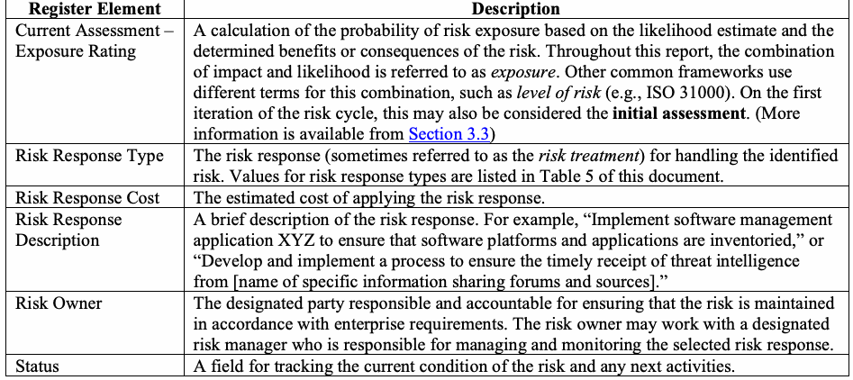
| 登録簿の要素 | 説明 |
| 現行評価―エクスポージャー評価 | 発生可能性の推定値と、リスクによる利益または結果の評価に基づくリスクエクスポージャーの算出。本報告書では、影響と発生可能性の組み合わせを「エクスポージャー」と呼びます。他の一般的なフレームワークでは、この組み合わせに異なる用語（ISO 31000の「リスク水準」など）を使います。リスクサイクルの最初の反復では、初期評価とみなすこともできます。（詳細は3.3節を参照） |
| リスク対応の種類 | 特定したリスクに対処するためのリスク対応（「リスク処置」と呼ばれることもあります）。リスク対応の種類は本書の表5に記載しています。 |
| リスク対応費用 | リスク対応の適用にかかる推定費用。 |
| リスク対応の説明 | リスク対応の簡潔な説明。例：「ソフトウェア管理アプリケーションXYZを導入し、ソフトウェアプラットフォームとアプリケーションの目録を作成する」または「［特定の情報共有フォーラムおよび情報源の名称］から脅威インテリジェンスを適時に受け取るプロセスを策定し、実施する」。 |
| リスク所有者 | エンタープライズ要件に従ってリスクが維持されるようにする責任と説明責任を負う指定された当事者。リスク所有者は、選択したリスク対応の管理と監視を担う指定リスク管理者と協力する場合があります。 |
| 状態 | リスクの現状と次の活動を追跡するための欄。 |
Regardless of which model is selected for use as a risk register, it is important for the enterprise to ensure that the model is used in a consistent and iterative way. As the risk professional progresses through the steps in this section, the risk register will be populated with relevant information. Once decisions have been made as part of a subsequent review of the risks, the agreed-upon risk response becomes the current state after mitigations are put in place, and the cycle begins anew. Using risk registers for ICT uncertainty provides consistency in capturing, organizing, and communicating risk-related information throughout the ICTRM and ERM processes. The risk registers used at each level convey information about risk assessments, evaluation decisions, responses, and monitoring activities. The remainder of this section provides guidance and useful information for completing and using registers and integrating them with ERM. While the risk register itself can be used to document and communicate information about current risks and responses, it may be necessary to supplement the register with a risk detail record (RDR). A notional example of an RDR is provided in Appendix B. The use of RDRs enables the documentation of details regarding the considerations, assumptions, and results of risk management activity. It also enables the enterprise to record personnel involved in those considerations, any actions to be taken, and schedules. The contents of an RDR may include:
リスク登録簿としてどのモデルを選択する場合でも、一貫性と反復性のある方法で使用することが重要です。この節の各段階を進むにつれて、リスク登録簿には関連情報が記入されます。その後、リスクの再検討を経て決定がなされ、合意されたリスク対応が軽減策の実施後の現状となって、サイクルが再び始まります。ICTの不確実性を扱う際にリスク登録簿を使うことで、ICTRMおよびERMのプロセス全体を通じて、リスク関連情報の取得、整理、伝達に一貫性が得られます。各レベルで用いるリスク登録簿は、リスク評価、評価結果に基づく決定、対応、監視活動に関する情報を伝えます。この節の残りでは、登録簿の記入・利用とERMへの統合に役立つ指針や情報を示します。リスク登録簿自体を使って現行のリスクと対応に関する情報を記録・伝達できますが、リスク詳細記録（RDR）で補足する必要がある場合もあります。付録BにはRDRの概念例を示します。RDRを使うことで、リスク管理活動における検討事項、前提、結果の詳細を文書化できます。また、その検討に関与した要員、実施すべき措置、日程も記録できます。RDRには次の内容を含めることがあります。
未レビュー訳•Information regarding the risk itself, such as a detailed risk scenario description and underlying threats, vulnerabilities, assets threatened, risk category, and risk assessment results
•リスク自体に関する情報。詳細なリスクシナリオの説明、根底にある脅威、脆弱性、脅威にさらされる資産、リスクカテゴリ、リスク評価結果など。
未レビュー訳•Roles involved in risk decisions and management (e.g., risk owner, risk manager, action owner for specific activities, stakeholders involved in risk response decisions, contractual agreements for supply chain/external partners)
•リスクの決定および管理に関与する役割（リスク所有者、リスク管理者、個別活動の実施責任者、リスク対応の決定に参加するステークホルダー、サプライチェーン／外部パートナーとの契約合意など）。
未レビュー訳•Schedule considerations, such as the date the risk was first documented, the date of the last risk assessment, completion dates for mitigations, and the date of the next expected assessment
•日程に関する考慮事項（リスクを最初に文書化した日、直近のリスク評価日、軽減策の完了日、次回の評価予定日など）。
未レビュー訳•Risk response decisions and follow-up, including detailed plans, status, and risk indicators
•リスク対応に関する決定とフォローアップ（詳細な計画、状態、リスク指標を含む）。
未レビュー訳An RDR may be stored and maintained in a written record, as part of an organizational knowledge management system, or as a database entry in risk-specific software, such as a Governance, Risk, and Compliance (GRC) application.
RDRは、書面記録、組織のナレッジマネジメントシステムの一部、またはガバナンス・リスク・コンプライアンス（GRC）アプリケーションなど、リスク管理専用ソフトウェアのデータベース項目として保管・維持できます。
未レビュー訳Analyze (Quantify) the Risks
リスクを分析（定量化）する
未レビュー訳In Step 3 of the risk management life cycle, each ICT risk is analyzed to estimate the likelihood that the risk event will occur and describe the potential impact of the consequences.
リスク管理ライフサイクルのステップ3では、各ICTリスクを分析し、リスク事象の発生可能性を推定するとともに、その結果がもたらす潜在的影響を記述します。
未レビュー訳3.3.1. Risk Analysis Types
3.3.1 リスク分析の種類
未レビュー訳Relying solely on an informal risk analysis may impair effective ICTRM decision support. A broad array of risk analysis methodologies is available to aid in making a more accurate estimation, such as IEC 31010:2019 [IEC31010] and the Open Group’s Open Factor Analysis of Information Risk (FAIR) standards [OPENFAIR]. Risk analysis methods include:
非公式なリスク分析のみに依存すると、ICTRMの意思決定支援が損なわれる可能性があります。IEC 31010:2019［IEC31010］やOpen Groupの情報リスク要因分析（FAIR）規格［OPENFAIR］など、より正確な推定を支援する幅広いリスク分析手法があります。リスク分析の方法には次のものがあります。
未レビュー訳•Qualitative analysis based on the assignment of a descriptor, such as low, medium, or high. The scale can be formed or adjusted to suit the circumstances, and different descriptions may be used for different risks. Qualitative analysis is helpful as an initial assessment or when intangible aspects of risk are to be considered. To improve the accuracy of qualitative analysis, values and data can be leveraged from external sources, such as industry benchmarks or standards, metrics from similar previous risk scenarios, or findings from inspections and assessments.
•定性的分析は、「低」「中」「高」などの記述語を割り当てて行います。状況に合わせて尺度を作成または調整でき、リスクごとに異なる記述を使う場合があります。定性的分析は、初期評価を行う場合や、リスクの無形の側面を考慮する場合に有用です。定性的分析の精度を高めるには、業界のベンチマークや標準、類似する過去のリスクシナリオの指標、検査や評価の結果など、外部情報源の値やデータを活用できます。
未レビュー訳•Quantitative analysis involves numerical values that are assigned to both impact and likelihood. These values are based on statistical probabilities and a monetized valuation of loss or gain. The quality of the analysis depends on the accuracy of the assigned values and the validity of the statistical models used. Consequences may be expressed in terms of financial, technical, or human impacts.
•定量的分析では、影響と発生可能性の両方に数値を割り当てます。これらの値は、統計的確率と、損失または利益の金銭的評価に基づきます。分析の質は、割り当てた値の正確さと、使用する統計モデルの妥当性に左右されます。結果は、財務、技術、人への影響として表現できます。
未レビュー訳Some practitioners apply a semi-quantitative assessment that uses a numerical scale to represent some range of values or meanings in the enterprise context. The application of this model helps translate risk analysis into qualitative terms that support risk communications for decision makers while also supporting relative comparisons (such as within a particular scale or range). Each of these analysis types has advantages and disadvantages, so the type performed should be consistent with the context associated with the risk. The methods to be selected and under what circumstances depend on many organizational factors and might be included in the risk management discussions described in Sec. 3.1. While qualitative methods are commonplace, the practitioner may benefit from considering a quantitative methodology with a more scientific approach to estimating the likelihood and impact of consequences where the data are available for this type of analysis. This may help to better prioritize risks or prepare more accurate risk exposure forecasts. The benefits of such an approach may be offset by the fact that changing the risk assessment methodology may require time and resources for development and training. Common ERM practices include both qualitative and quantitative types of risk analysis. When selecting the most appropriate type of risk analysis at the system or organization level, practitioners should consider both consistency with ERM at the enterprise level and the accuracy of measuring ICT risks.
エンタープライズの状況における一部の値や意味の範囲を数値尺度で表す半定量的評価を用いる実務者もいます。このモデルを使うと、意思決定者のリスクコミュニケーションを支える定性的な表現へ分析結果を変換できると同時に、特定の尺度や範囲内で相対比較ができます。各分析方法には長所と短所があるため、リスクの状況に合った種類を一貫して用いるべきです。どの手法をどの状況で選択するかは多くの組織的要因に左右され、3.1節で説明したリスク管理に関する協議で決める場合があります。定性的手法は一般的ですが、適切なデータがある場合、発生可能性と結果の影響をより科学的に推定する定量的方法を検討すると、実務者にとって有益です。これにより、リスクの優先順位をより適切に付けたり、リスクエクスポージャーをより正確に予測したりできます。一方、リスク評価方法を変更すると、開発や訓練に時間と資源が必要となり、こうした利点が相殺される場合があります。一般的なERM実務では、定性的および定量的なリスク分析の両方を用います。システムまたは組織レベルで最適な分析方法を選択する際は、エンタープライズレベルのERMとの一貫性と、ICTリスク測定の精度の両方を考慮するべきです。
未レビュー訳3.3.2. Techniques for Estimating Likelihood and Impact
3.3.2 発生可能性および影響の推定手法
未レビュー訳Since one of the primary goals of ICTRM is to identify potential risks that are most likely to have a significant impact, an accurate reflection of risk details is critical. Fortunately, risk management has been practiced for many years, and there are many effective techniques for analyzing risk in comparison with enterprise risk appetite and system or organizational risk tolerance. IEC 31010 [IEC31010] is an international standard that describes and provides guidance on 17 risk assessment techniques that can be used for analyzing controls, dependencies, and interactions; understanding consequence and likelihood; and measuring overall risk. In addition to analysis techniques like those described below, understanding the likelihood of threat events and their potential impacts will also draw on experimentation, investigations into previous risk events, and research into the risk experiences of similar organizations. The likelihood and impact elements of a risk can be broken into sub-factors. For example, consider a risk scenario in which a critical business server becomes unavailable to an organization’s financial department. The age of the server, the network on which it resides, and the reliability of its software all influence the likelihood of a failure. The impact of this scenario can also be considered through various factors. If another server is highly available through a fault-tolerant connection, the loss of the initial server may have little consequence. Other factors also impact risk analysis, such as timing. If the financial server supports an important payroll function, the impact of a loss occurring shortly before payday may be significantly higher than if it were to occur after paychecks are distributed. The impact may vary greatly depending on whether the server is used for archiving legacy records or performing urgent stock trades. There are many considerations that go into estimating exposures and the events that can trigger them. Whichever sub-factors an organization chooses to consider, they should be clearly delineated and defined to ensure consistency in their use for likelihood and frequency estimation as well as overall risk register assessment and aggregation. The calculation of multiple or cascading impacts is an important consideration, and each permutation should be individually included in the risk register. Secondary loss events should be captured with primary loss events to represent the total impact and cost of a risk scenario. The omission of secondary losses in the assessment of a risk scenario would underestimate the total impact, thereby misinforming risk response selection and prioritization. For example, while the organization might consider a risk that a telecommunications outage would result in the loss of availability of a critical web server, there may also be secondary loss events, including the loss of customers from frustration with unavailable services or penalties that result from the failure to meet contractual service levels. An analysis of cascading risks should include the consideration of factors that would lead to a secondary risk, such as the outage described above. Examples of techniques for estimating the probability that a risk event will occur include:
ICTRMの主な目標の一つは、重大な影響をもたらす可能性が最も高いリスクを特定することです。そのため、リスクの詳細を正確に表すことが重要です。幸い、リスク管理は長年実施されており、エンタープライズのリスク選好度やシステム・組織のリスク許容度と照らしてリスクを分析する有効な手法が数多くあります。国際規格IEC 31010［IEC31010］は、管理策、依存関係、相互作用を分析し、結果と発生可能性を理解し、全体的なリスクを測定するために利用できる17種類のリスク評価手法を説明し、指針を提供しています。以下に示す分析手法に加え、脅威事象の発生可能性と潜在的影響の理解には、実験、過去のリスク事象の調査、類似組織におけるリスク経験の研究も用いられます。リスクの発生可能性と影響の要素は、さらに細分化した要因に分けられます。たとえば、重要な業務サーバーが組織の財務部門で利用できなくなるリスクシナリオを考えます。サーバーの使用年数、接続先のネットワーク、ソフトウェアの信頼性は、いずれも障害の発生可能性に影響します。このシナリオの影響も複数の要因から検討できます。別のサーバーが耐障害性のある接続を通じて高い可用性を保っていれば、最初のサーバーが失われても影響は小さいかもしれません。タイミングなど、他の要因もリスク分析に影響します。財務サーバーが重要な給与処理を支えている場合、給与支給日の直前に障害が起きると、支給後に起きる場合より影響が大幅に大きくなる可能性があります。サーバーが古い記録の保管に使われるか、緊急の株式取引に使われるかによって、影響は大きく異なります。エクスポージャーや、それを引き起こす事象を推定する際には、多くの事項を考慮します。組織がどの細分要因を用いる場合でも、発生可能性や頻度の推定、リスク登録簿全体の評価と集約で一貫して利用できるよう、それらを明確に区別し定義するべきです。複数の影響や連鎖的な影響の算出も重要であり、それぞれの組み合わせを個別にリスク登録簿へ記載する必要があります。リスクシナリオの総合的な影響と費用を示すため、二次的な損失事象も一次的な損失事象とともに記録する必要があります。リスクシナリオの評価で二次的損失を省くと、総影響を過小評価し、リスク対応の選択と優先順位付けを誤らせます。たとえば、組織は通信障害により重要なウェブサーバーが利用不能になるリスクを考えるかもしれませんが、利用できないサービスに対する顧客の不満による顧客離れや、契約上のサービス水準を満たせなかったことによる違約金など、二次的な損失事象もあり得ます。連鎖リスクの分析では、上記の停止の例のように、二次リスクにつながる要因を考慮する必要があります。リスク事象の発生確率を推定する手法の例を次に示します。
未レビュー訳•Bayesian analysis – A model that helps inform a statistical understanding of probability as more evidence or information becomes available
•ベイズ分析―証拠や情報が増えるにつれて、確率に関する統計的理解を深めるのに役立つモデル。
未レビュー訳•Monte-Carlo – A simulation model that draws upon random sample values from a given set of inputs, performs calculations to determine results, and iteratively repeats the process to build up a distribution of the results
•モンテカルロ法―指定された入力値群から無作為に標本値を抽出し、結果を求める計算を行い、結果の分布を構築するためにこの処理を反復するシミュレーションモデル。
未レビュー訳•Event tree analysis – A modeling technique that represents a set of potential events that could arise following an initiating event from which quantifiable probabilities could be considered graphically
•イベントツリー分析―起点となる事象の後に生じ得る一連の事象を図示し、定量化可能な確率を検討するためのモデリング手法。
未レビュー訳Both tangible (e.g., direct financial losses) and less tangible impacts (e.g., reputational damage and impairment of mission) should be considered when evaluating the potential consequences of risk events. These are connected since direct losses will affect reputation, and reputational risk events will nearly always result in risk response expenses. OMB Circular A-123 states that “reputational risk damages the reputation of an agency or component of an agency to the point of having a detrimental effect capable of affecting the agency’s ability to carry out mission objectives” [OMB-A123]. There is a broad range of stakeholders to be considered when estimating reputational risk, including the workforce, partners, suppliers, regulators, legislators, public constituents, and clients/customers. Practitioners document and track the potential consequences of each ICT risk that could significantly impact enterprise objectives, such as causing material damage to reputation or significant financial losses. Documenting and tracking these consequences at the organization or system level streamlines the step of providing ICT risk inputs to the ERM program. The estimation of the likelihood and impact of a risk event should account for existing and planned controls. The ERM Playbook provides the following guidance:
リスク事象がもたらす潜在的な結果を評価する際は、有形の影響（直接的な財務損失など）と、評判の毀損や使命の遂行阻害など無形性の高い影響の両方を考慮するべきです。直接的な損失は評判に影響し、評判リスク事象はほぼ必ずリスク対応費用を生じさせるため、これらは関連しています。OMB通達A-123は、「評判リスクとは、機関またはその構成要素の評判を損ない、機関が使命目標を遂行する能力に影響し得る有害な結果をもたらすもの」としています［OMB-A123］。評判リスクの推定では、職員、パートナー、供給者、規制当局、立法者、一般市民、顧客など幅広いステークホルダーを考慮します。実務者は、エンタープライズ目標に重大な影響（評判への重大な損害や大きな財務損失など）を及ぼす可能性のある各ICTリスクの結果を文書化し、追跡します。組織またはシステムレベルで結果を文書化し追跡すると、ICTリスク情報をERMプログラムに提供する段階が効率化されます。リスク事象の発生可能性と影響を推定する際は、既存および計画中の管理策を考慮します。ERMプレイブックは次の指針を示しています。
未レビュー訳原本の表画像
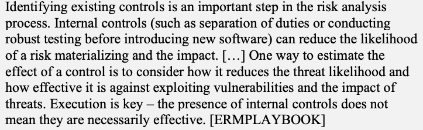
The estimated likelihood and impact of each risk are recorded in the appropriate columns within the risk register. After risk responses are determined, the analysis should be revised to reflect the mitigation (of likelihood and impact) from each risk response. The residual risk (i.e., the remaining risk after applying risk responses) should then be recorded in the risk register’s Residual Risk column. To simplify the process of normalizing risk registers when developing an ERR, a consistent timeframe should be used for estimating the likelihood of each risk. Likewise, the level of impact helps to normalize the risk during the aggregation and prioritization process.
各リスクの推定発生可能性と影響を、リスク登録簿の該当欄に記録します。リスク対応を決定した後は、各対応による発生可能性と影響の軽減を反映して分析を改訂するべきです。残余リスク（リスク対応の適用後に残るリスク）をリスク登録簿の「残余リスク」欄に記録します。ERRの作成時にリスク登録簿を正規化しやすくするため、各リスクの発生可能性を推定する期間を一貫させるべきです。同様に、影響の水準も集約と優先順位付けの際のリスク正規化に役立ちます。
未レビュー訳Prioritize Risks
リスクの優先順位付け
未レビュー訳After identifying and analyzing applicable risks and recording them in risk registers, the priorities of those risks should be determined and indicated. This is accomplished by determining the exposure presented by each risk (i.e., based on the likelihood that a threat event will occur and result in an adverse impact). An ICT risk can have adverse effects on achieving organizational objectives. Based on the analysis conducted using the processes described in Sec. 3.3, such effects could range from negligible to severe, so exposure determination is important. Additionally, since organizations have limited resources, it is helpful to sort the risks within the register in order of importance to prioritize risk response. As shown in the template in Fig. 5, this result helps complete the Priority column.15 When completing the Priority column of the risk register, consider the following:
該当するリスクを特定・分析し、リスク登録簿に記録した後、それらの優先順位を決定して示す必要があります。そのため、各リスクがもたらすエクスポージャー（脅威事象が発生して悪影響をもたらす可能性に基づく）を判断します。ICTリスクは組織目標の達成に悪影響を及ぼす場合があります。3.3節で説明したプロセスによる分析結果は、無視できるものから深刻なものまで幅があります。そのため、エクスポージャーの判定は重要です。また、組織の資源には限りがあるため、リスク対応の優先順位付けに役立つよう、リスク登録簿内で重要度順に並べることが有益です。図5のテンプレートに示すとおり、この結果を「優先順位」欄に記入します。15 リスク登録簿の「優先順位」欄を記入する際は、次の点を考慮します。
未レビュー訳•How to combine the calculations of likelihood and impact to determine exposure16
•発生可能性と影響の計算をどのように組み合わせてエクスポージャーを判断するか。16
未レビュー訳•How to determine and measure the potential benefits of pursuing a particular risk response
•特定のリスク対応を追求することによる潜在的利益を、どのように判断し測定するか。
未レビュー訳•When to seek additional guidance on how to evaluate risk exposure levels, such as while evaluating exposures germane to risk tolerance statements
•リスク許容度の声明に関連するエクスポージャーを評価する場合など、リスクエクスポージャー水準の評価に関する追加の指針をいつ求めるか。
未レビュー訳Practitioners use multiple assessment approaches—qualitative, quantitative, and semi-qualitative —for calculating potential consequences and recording those in risk registers. For example, the NIST Privacy Risk Assessment Methodology employs a semi-qualitative approach to its risk model, which calculates risk based on the likelihood of a problematic data action, multiplied by its impact.17 Fig. 6 demonstrates the use of qualitative descriptors for likelihood and level of impact for risk determination.18 Other risk disciplines have similar but varying models for calculating and communicating risk determination, so risk programs, following their enterprise risk strategy, are encouraged to use the risk adjudication and communication process as an opportunity to discuss and standardize any program-specific risk calculation. In this example, each risk is evaluated considering the risk’s likelihood and impact as determined during risk analysis. The thresholds for ranges of exposure can be established and published as part of the enterprise governance model and used by stakeholders to prioritize each risk in the register.
実務者は、潜在的な結果を計算してリスク登録簿に記録するため、定性的、定量的、半定量的な複数の評価手法を用います。たとえば、NISTプライバシーリスク評価方法論は、問題のあるデータ処理行為の発生可能性にその影響を乗じてリスクを算出する半定量的モデルを採用しています。17 図6は、リスクを判定する際に、発生可能性と影響の水準を定性的な記述語で表す例を示しています。18 他のリスク分野でも類似しながら異なる判定モデルを用います。そのため、各リスクプログラムはエンタープライズのリスク戦略に従い、プログラム固有のリスク計算について協議し、標準化する機会として、リスク判定とコミュニケーションのプロセスを活用することが推奨されます。この例では、リスク分析で判定した発生可能性と影響を考慮して各リスクを評価します。エクスポージャーの範囲に対するしきい値を定め、公表し、エンタープライズガバナンスモデルの一部として各リスクの優先順位付けに利用できます。
未レビュー訳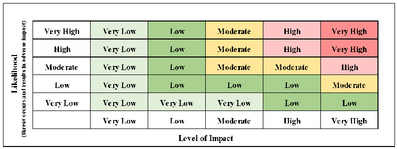
定性的リスクマトリクス。縦軸は発生可能性（非常に高い、高い、中程度、低い、非常に低い）、横軸は影響度（非常に低い、低い、中程度、高い、非常に高い）。各セルのリスク水準は、非常に低い、低い、中程度、高い、非常に高いで示され、色は緑系から黄、赤へとリスクの高まりを表す。行ごとの影響度別評価は、発生可能性が非常に高い場合「非常に低い／低い／中程度／高い／非常に高い」、高い場合も同じ、中程度の場合「非常に低い／低い／中程度／中程度／高い」、低い場合「非常に低い／低い／低い／低い／中程度」、非常に低い場合「非常に低い／非常に低い／非常に低い／低い／低い」。
Fig. 6. Example of a qualitative risk matrix
図6 定性的リスクマトリクスの例
未レビュー訳15While risks in the register are assigned a priority to help rank their relative importance, this prioritization is distinct from (but may help inform) the enterprise-level prioritization performed by senior leaders to create the enterprise risk profile. 16The formula for calculating risk exposure is the total loss if the risk occurs multiplied by the probability that the risk will happen. Loss is calculated through a traditional BIA used in conjunction with the risk register model to inform the senior-level decision-making process.
15 登録簿内のリスクには相対的重要度を示す優先順位が割り当てられますが、これは上級リーダーがERPを作成するために行うエンタープライズレベルの優先順位付けとは異なります（ただし、その判断材料となる場合があります）。16 リスクエクスポージャーは、リスク発生時の総損失に発生確率を乗じて算出します。損失は、リスク登録簿モデルと併用する従来型の事業影響分析（BIA）を通じて算定し、上級レベルの意思決定を支援します。
未レビュー訳Fig. 7 depicts a semi-quantitative example. In this illustration, the enterprise has provided guidance that any risk above 0.20 (based on likelihood times impact) represents a high risk, and risks rated between 0.06 and 0.20 are designated as moderate.
図7は半定量的な例を示します。この例では、エンタープライズが、発生可能性と影響の積が0.20を超えるリスクを高リスク、0.06から0.20までのリスクを中リスクとする指針を定めています。
未レビュー訳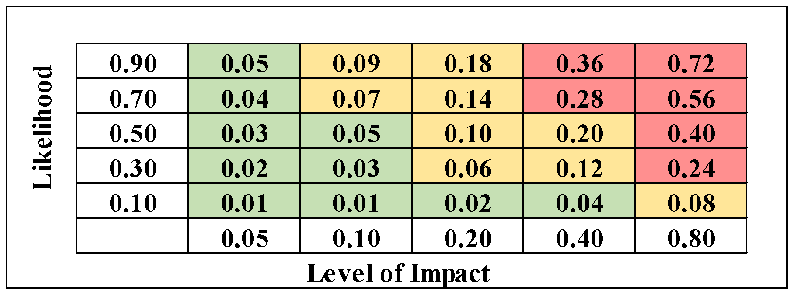
半定量的リスクマトリクス。縦軸は発生可能性（0.90、0.70、0.50、0.30、0.10）、横軸は影響度（0.05、0.10、0.20、0.40、0.80）。各セルは発生可能性と影響度の積を示す。行ごとの値は、0.90の場合0.05、0.09、0.18、0.36、0.72、0.70の場合0.04、0.07、0.14、0.28、0.56、0.50の場合0.03、0.05、0.10、0.20、0.40、0.30の場合0.02、0.03、0.06、0.12、0.24、0.10の場合0.01、0.01、0.02、0.04、0.08。
Fig. 7. Example of a semi-quantitative risk matrix
図7 半定量的リスクマトリクスの例
未レビュー訳While prioritization will be strongly influenced by the risk exposure determination, other factors may also influence those decisions, such as enterprise context or stakeholder priorities. Stakeholders may also define a minimum level of exposure to include on the risk register through the risk management strategy or other directives. While ICT risks should not arbitrarily be omitted from the register, there are likely to be many that represent such a low exposure that they need not be included. Guidance for this threshold should be applied consistently throughout the enterprise. For those ICT risks that are included and prioritized in the risk register, an evaluation should be performed to identify an appropriate risk response, as described in the next topic.
優先順位は主にリスクエクスポージャーの判定に左右されますが、エンタープライズの状況やステークホルダーの優先事項など、他の要因も判断に影響する場合があります。ステークホルダーは、リスク管理戦略やその他の指令を通じ、リスク登録簿に記載するエクスポージャーの最低水準を定める場合もあります。ICTリスクを恣意的に登録簿から省くべきではありませんが、エクスポージャーが非常に低く、記載する必要がないリスクも多いでしょう。このしきい値に関する指針は、エンタープライズ全体で一貫して適用する必要があります。リスク登録簿に記録され優先順位付けされたICTリスクについて、次のトピックで説明するように、適切な対応を特定する評価を行います。
未レビュー訳Plan and Execute Risk Response Strategies
リスク対応戦略の計画と実行
未レビュー訳The fifth step of the risk management life cycle is to determine the appropriate response to each risk. The goal of effective risk management, including ICT risks, is to identify ways to keep risk aligned with the risk appetite or tolerance in as cost-effective a way as possible. In this stage, the practitioner will determine whether the exposure associated with each risk in the register is within acceptable levels based on the potential consequences. If not, that practitioner can identify and select cost-effective risk response options to achieve ICT objectives. Planning and executing risk responses are iterative activities and should be based on the risk strategy guidance described in Sec. 3.1.3. As the risk oversight authorities monitor the success of those responses, they will provide operational leaders with financial and mission guidance to inform future risk management activities. In some cases, risk evaluation may lead to a decision to undertake further analysis to confirm estimates or more closely monitor results (as described in Sec. 5.1.2). Note that risk responses themselves may introduce new risks. For example, adding multi-factor authentication to a business system to reduce an access control risk may introduce a new risk of decreased productivity when users have difficulty authenticating. While there is some variance among the terms used by risk management frameworks, there are four types of actions available (as described in Table 5) for responding to negative ICT risks: accept, transfer, mitigate, and avoid.
リスク管理ライフサイクルの第5段階では、各リスクに適切な対応を決定します。ICTリスクを含む効果的なリスク管理の目標は、できる限り費用対効果の高い方法で、リスクをリスク選好度またはリスク許容度に沿った状態に保つ方法を特定することです。この段階では、実務者が各リスク登録簿項目のエクスポージャーを潜在的な結果に照らし、許容可能な水準内か判断します。許容水準を超える場合、ICT目標を達成するために費用対効果の高いリスク対応策を特定・選択できます。リスク対応の計画と実行は反復的な活動であり、3.1.3節で説明したリスク戦略の指針に基づく必要があります。リスク監督当局は対応の有効性を監視し、将来のリスク管理活動に役立つよう、運用責任者に財務面と使命面の指針を示します。場合によっては、リスク評価の結果、推定を確認したり結果をより詳細に監視したりするため、追加分析を行う判断に至ることもあります（5.1.2節を参照）。リスク対応自体が新たなリスクを生む場合もあります。たとえば、アクセス制御リスクを低減するため業務システムに多要素認証を導入すると、利用者が認証に手間取り、生産性が低下する新たなリスクが生じる可能性があります。リスク管理フレームワークによって用語に多少の違いはありますが、ネガティブなICTリスクに対応する方法は、表5に示す受容、移転、軽減、回避の4種類です。
未レビュー訳Table 5. Response types for negative ICT risks
表5 ネガティブなICTリスクへの対応の種類
未レビュー訳| Type | Description |
| Accept | Accept ICT risk within risk tolerance levels. No additional risk response action is needed except for monitoring. |
| Transfer | For ICT risks that fall outside of tolerance levels, reduce them to an acceptable level by sharing a portion of the consequences with another party (e.g., ICT insurance). While some of the financial consequences may be transferable, there are often consequences that cannot be transferred, like a loss of customer trust. |
| Mitigate | Apply actions (e.g., risk management controls) that reduce a given risk to an acceptable level. Responses could include those that help prevent a loss (i.e., reducing the probability of occurrence or the likelihood that a threat event materializes or succeeds) or that help limit such a loss by decreasing the amount of damage and liability. |
| Avoid | Apply responses to ensure that the risk (specifically the threat) does not occur. Avoiding a risk may be the best option if there is not a cost-effective method for reducing it to an acceptable level. The cost of the lost opportunity associated with such a decision should be considered as well. |
原本の表画像
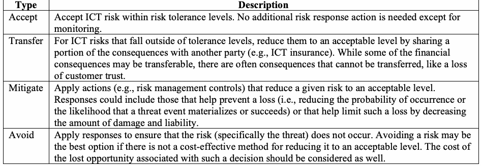
| 種類 | 説明 |
| 受容 | リスク許容度の範囲内のICTリスクを受け入れる。監視以外に追加のリスク対応措置は不要。 |
| 移転 | 許容度の範囲を超えるICTリスクを、結果の一部を他者と分担する（ICT保険など）ことで許容可能な水準に低減する。財務的な結果の一部は移転できても、顧客の信頼喪失など、移転できない結果もよくある。 |
| 軽減 | リスクを許容可能な水準に低減する措置（リスク管理策など）を適用する。発生確率や脅威事象の発生・成功可能性を下げて損失を防ぐ対応、または損害や責任を減らして損失を限定する対応などがある。 |
| 回避 | リスク（特に脅威）が発生しないように対応する。許容可能な水準まで費用対効果よく低減する方法がない場合、リスク回避が最善の選択肢となることがあります。その判断に伴う機会損失も考慮する必要があります。 |
In many cases, mitigation to bring exposure to negative ICT risks within risk tolerance levels is accomplished using risk management controls. For example, if the risk executive function declares that the organization must avoid risks with likelihood and impact values of high/high for all costs over $500,000, the Risk Response Type column of the risk register (see Fig. 5) can be updated with a response type from Table 5. While including a particular informative reference (e.g., security or privacy controls, or Cybersecurity Framework and/or Privacy Framework categories and subcategories) may be helpful in guiding and describing risk response, additional information is likely to be required. In general, people, processes, and technology combine to provide risk management controls that can be applied to achieve an acceptable level of risk. Examples of controls include:
多くの場合、ネガティブなICTリスクのエクスポージャーをリスク許容度の範囲内に収める軽減策には、リスク管理策を用います。たとえば、リスク担当役員の機能が、50万ドルを超えるすべての費用について発生可能性と影響がともに「高」のリスクを回避すべきと宣言した場合、リスク登録簿の「リスク対応の種類」欄（図5参照）を表5の対応種別で更新できます。セキュリティ・プライバシー管理策、サイバーセキュリティフレームワークやプライバシーフレームワークのカテゴリ・サブカテゴリなど、特定の参考資料を含めると対応の指針や説明に役立つ場合がありますが、通常は追加情報も必要です。一般に、人、プロセス、技術を組み合わせてリスク管理策を構成し、許容可能な水準のリスクを達成します。管理策の例を以下に示します。
未レビュー訳•Preventative: Reduce or eliminate specific instances of a weakness
•予防的：特定の弱点を低減または排除する。
未レビュー訳•Deterrent: Reduce the likelihood of a threat event by dissuading a threat actor
•抑止的：脅威アクターを思いとどまらせ、脅威事象の発生可能性を低減する。
未レビュー訳•Detective: Provide warning of a successful or attempted threat event
•検知的：脅威事象の成功または試行を警告する。
未レビュー訳•Corrective: Reduce exposure by offsetting the impact of consequences after a risk event
•是正的：リスク事象の発生後に結果の影響を相殺し、エクスポージャーを低減する。
未レビュー訳•Compensating: Apply one or more controls to adjust for a weakness in another control
•補完的：別の管理策の弱点を補うため、1つ以上の管理策を適用する。
未レビュー訳Consider an organization that identifies several high-exposure negative risks, including that poor authentication practices (e.g., weak or reused passwords) could lead to the disclosure of sensitive customer financial information and that employees of the software provider might gain unauthorized access to and tamper with the financial data. The organization can apply several deterrent controls (documenting the applied control identifiers and any applicable notes in the Risk Register Comments column), including warning banners and the threat of prosecution for any threat actors who intentionally attempt to gain unauthorized access. Preventative controls include applying strong identity management policies and using multi-factor authentication tokens that help reduce authentication vulnerabilities. The software provider has installed detective controls that monitor access logs and alert the organization’s security operations center if internal staff connect to the customer database without a need for access. Furthermore, the financial database is encrypted so that it protects its data if the file system is exfiltrated. Risk response will often involve creating a risk reserve to avoid or mitigate an identified negative risk or to realize or enhance an identified positive risk. A risk reserve is similar to other types of management reserves in that funding or labor hours are set aside and employed if a risk is triggered to ensure that the opportunity is realized or the threat is avoided. For example, the technical skills needed to recover after an ICT attack may not be available with current staffing resources. A risk reserve can also be used with the accept response type to address this (e.g., by setting aside funds during project planning to employ a qualified third-party to augment the internal incident response and recovery effort).
顧客の機微な財務情報が、脆弱なパスワードや再利用されたパスワードなど不適切な認証慣行によって漏えいするリスクや、ソフトウェア提供者の従業員が財務データに不正アクセスして改ざんするリスクを含む、複数の高エクスポージャーのネガティブリスクを特定した組織を考えます。適用した管理策の識別子や関連する注記をリスク登録簿のコメント欄に記録しながら、警告バナーを表示したり、不正アクセスを意図的に試みる脅威アクターを訴追する可能性を示したりする抑止策を適用できます。予防策には、強固なID管理方針の適用や、多要素認証トークンの利用による認証脆弱性の低減が含まれます。ソフトウェア提供者は、アクセスログを監視し、アクセスの必要がない内部職員が顧客データベースに接続した場合に組織のセキュリティ運用センターへ警告する検知策を導入しています。さらに、ファイルシステムが持ち出された場合にもデータを保護できるよう、財務データベースを暗号化しています。リスク対応では、特定したネガティブリスクを回避または軽減するため、あるいは特定したポジティブリスクを実現または拡大するために、リスク予備枠を設けることがよくあります。リスク予備枠は他の管理予備費と同様、リスクが発生した際に機会を実現したり脅威を回避したりできるよう、資金または労働時間をあらかじめ確保して活用します。たとえば、ICT攻撃からの復旧に必要な技術的スキルを現在の人員では確保できない場合があります。受容型の対応においてもリスク予備枠を用いて対処できます（例：プロジェクト計画時に資金を確保し、インシデント対応と復旧の取り組みを補強する有資格の第三者を雇用する）。
未レビュー訳Monitor, Evaluate, and Adjust Risk Management
リスク管理の監視、評価、調整
未レビュー訳Risk management should not simply involve
リスク管理は単にリスク一覧を管理するだけではありません。
未レビュー訳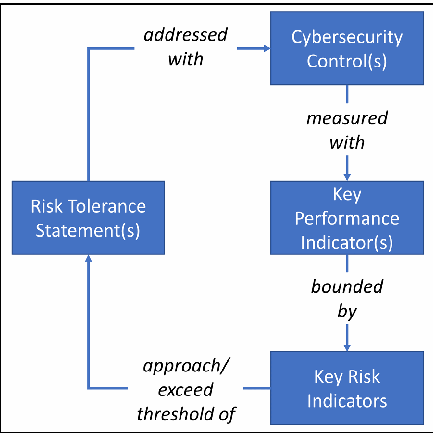
監視・評価・調整（MEA）サイクル図。エンタープライズレベル、組織レベル、システムレベルの3階層を通じ、ミッション目標・リスク選好度からリスク許容度、システムBIA、リスクシナリオ特定、分析、評価、対応、報告・監視、登録簿の集約・正規化、ERMプロファイルへの統合、リスク方針・プロセスの調整、継続的評価・報告へと循環する。図では目標・優先事項を定める上位から、システムレベルの分析・対応結果を再び上位へ集約する流れを示す。
managing lists of risks. For the activities to be meaningful, risk managers throughout the enterprise must be informed about objectives, results, priorities, and opportunities. A key purpose of the various risk registers is to enable ongoing monitoring of enterprise risk activities. Based on those activities, senior leaders evaluate available options and adjust guidance and operations to help realize opportunities and minimize harmful impacts. This Monitor-Evaluate-Adjust (MEA) Cycle is depicted in Fig. 8. This iterative approach begins with an understanding of what risk limits are acceptable, given enterprise context and strategic objectives. The purpose of ICTRM integration is to enable senior leaders to remain aware of ongoing risk management activities and apply corrective
活動を意味のあるものにするには、エンタープライズ全体のリスク管理者が目標、結果、優先事項、機会について情報を得ている必要があります。さまざまなリスク登録簿の主な目的は、エンタープライズのリスク活動を継続的に監視できるようにすることです。これらの活動に基づき、上級リーダーは選択肢を評価し、機会を実現し有害な影響を最小化するために指針と運用を調整します。この監視・評価・調整（MEA）サイクルを図8に示します。この反復的なアプローチは、エンタープライズの状況と戦略目標を踏まえて、どのリスク限度が許容されるかを理解することから始まります。ICTRM統合の目的は、上級リーダーが継続中のリスク管理活動を把握し、戦略目標を達成するための是正措置を講じられるようにすることです。
未レビュー訳Fig. 8. Monitor-Evaluate-Adjust Cycle
図8 監視・評価・調整サイクル
未レビュー訳measures in order to achieve strategic objectives. As risk response activities occur, they are recorded in ICT risk registers. The results are monitored, and performance measurements are collected through key performance indicators (KPIs) and key risk indicators (KRIs) and compared with risk strategy and risk direction (based on risk appetite and risk tolerance statements). Leaders provide direction regarding an overall appetite for risk, which is then interpreted at a more granular level as risk tolerance statements. Those risk directives are achieved through the application of various controls that modify the risk conditions. The metrics are reported to managers and leaders, enabling oversight and management of the achievement of the risk tolerance. Previous discussions highlighted risk direction based on risk appetite statements and their interpretation as risk tolerance statements. There is a third component of risk direction that must be observed — that of risk capacity, defined as the maximum amount of risk that an organization is able to endure. While the enterprise should always take steps not to exceed risk appetite, the consequences of doing so are rarely catastrophic. Exceeding risk capacity, on the other hand, could have dire consequences and may even jeopardize the continuation of the enterprise. Catastrophic results are not limited to the private sector. Many government entities have experienced severe consequences because their risk management processes permitted those enterprises to approach or exceed risk capacity.
リスク対応活動は、実施の都度ICTリスク登録簿に記録されます。その結果を監視し、主要業績評価指標（KPI）と主要リスク指標（KRI）でパフォーマンスを測定して、リスク選好度とリスク許容度の声明に基づくリスク戦略および方針と比較します。リーダーは全体的なリスク選好度に関する方針を示し、これをより詳細な水準でリスク許容度の声明として解釈します。さまざまな管理策を適用してリスク状況を変更し、これらのリスク指示を実現します。指標を管理者やリーダーに報告することで、リスク許容度の達成に関する監督と管理が可能になります。これまでの議論では、リスク選好度の声明に基づくリスク方針と、それをリスク許容度の声明として解釈する方法を説明しました。さらに、遵守すべき第三の要素としてリスク容量があります。リスク容量とは、組織が耐えられるリスクの最大量です。エンタープライズはリスク選好度を超えないよう常に措置を講じるべきですが、これを超えても破局的な結果になることはまれです。一方、リスク容量を超えると深刻な結果を招き、エンタープライズの存続さえ危うくする可能性があります。破局的な結果は民間部門に限られません。多くの政府機関が、リスク管理プロセスによってリスク容量に近づく、または超えることを許したため、深刻な結果を経験しています。
未レビュー訳Like risk appetite and tolerance, risk capacity can extend throughout the hierarchical enterprise layers. For example, if a business unit or government bureau exceeded its risk capacity, that portion of the enterprise could be severely impeded or closed. ISACA states that exceeding risk capacity could result in the enterprise’s continued existence being questioned [ISACA]. ISO 31010:2019 describes a similar example: “For a commercial firm, capacity might be specified in terms of maximum retention capacity covered by assets, or the largest financial loss the company could bear without having to declare bankruptcy” [IEC31010]. While exceeding risk capacity might not immediately result in enterprise extinction, it is clearly a criterion that must be monitored closely. Because capacity reflects the aggregate risk, it is an important consideration for those aggregating ICTRM and evaluating the overall risk posture.
リスク選好度や許容度と同様に、リスク容量も階層化されたエンタープライズの各層に及ぶ場合があります。たとえば、事業部門や政府機関の局がリスク容量を超えると、エンタープライズのその部分が大きく阻害されたり、閉鎖されたりする可能性があります。ISACAによれば、リスク容量を超えると、エンタープライズの存続そのものが疑問視される可能性があります［ISACA］。ISO 31010:2019にも類似の例があり、「商業企業の場合、容量は資産でカバーできる最大保有損失、または破産を宣言せずに企業が負担できる最大の財務損失として定められる場合がある」としています［IEC31010］。リスク容量を超えても直ちにエンタープライズが消滅するとは限りませんが、厳密に監視すべき基準であることは明らかです。容量はリスクの集約値を反映するため、ICTRMを集約し全体的なリスク態勢を評価する際の重要な考慮事項です。
未レビュー訳3.6.1. Adjusting Risk Response Based on Additional Information
3.6.1 追加情報に基づくリスク対応の調整
未レビュー訳Risk responses will often be adjusted as opportunities and threats evolve. The concept is similar to the topic sometimes called the “Cone of Uncertainty” within project management practices, which states that additional understanding about an identified risk will come to light over time. For changes in identified risk, one mitigation technique is the use of risk reserves, as introduced in Sec. 3.5. For this risk response, it is important that the risk owners collaborate with the acquisition or procurement teams and budget owners. With appropriate budget planning, risk reserves can be released for other predetermined funding requirements after the risk has been reduced to an acceptable level or the time has passed for the risk to occur. While many industry-based enterprises can return unused funds to shareholders or pay down corporate debt, unused reserves are more difficult for government agencies to use without pre-planning. Most government procurement cycles are rigidly based on the government fiscal year. Identified opportunities can be “planned for” in government procurement cycles as “optional” tasking or purchases. For example, unused funds could be used to expand a vendor assessment program to ensure that all supply chain providers (including both immediate service providers and their downstream providers) fulfill data processing and privacy risk management requirements. If the current fiscal year only allows for the purchase of half of the required materials, an option can be included at the time of the base contract award for the other half of the materials (but not funded at the time of the base contract award). When the practitioner liberates the risk reserve after the chance of the negative risk occurring has passed, the funding can be used to exercise the already awarded option that lacked the initial funding when the base contract was awarded. Exercising an option in government contracting is trivial (often 30 days or less) when compared to the long lead time for initial contract procurements.
機会や脅威が変化するにつれて、リスク対応も頻繁に調整されます。この考え方は、プロジェクト管理で「不確実性の円錐」と呼ばれることのある概念に似ています。特定したリスクへの理解は時間とともに深まるというものです。特定したリスクの変化に対応する軽減策の一つは、3.5節で紹介したリスク予備枠の活用です。この対応には、リスク所有者が取得・調達チームや予算担当者と協力することが重要です。適切に予算を計画しておけば、リスクが許容可能な水準まで低減した後、またはリスクが発生する可能性のある期間を過ぎた後に、あらかじめ定めた他の資金需要へリスク予備枠を解放できます。民間企業の多くは未使用資金を株主に還元したり企業債務の返済に充てたりできますが、政府機関では事前計画がなければ未使用の予備費を活用するのが困難です。政府の調達サイクルの多くは政府会計年度に厳密に基づいています。特定した機会を「計画に含める」には、政府調達で「任意」の作業項目または購入として組み込めます。たとえば未使用資金を使い、直近のサービス提供者とその下流の提供者を含むすべてのサプライチェーン提供者が、データ処理およびプライバシーリスク管理の要件を満たすよう、ベンダー評価プログラムを拡充できます。現会計年度に必要資材の半分しか購入できない場合は、基本契約の締結時に、残り半分の資材の購入オプションを契約に含めることができます（ただし基本契約の締結時点では資金を付けません）。ネガティブリスクが発生する可能性がなくなった後、実務者がリスク予備枠を解放すれば、その資金を、基本契約の締結時に初期資金が付かなかったものの、すでに契約上認められているオプションの実行に使えます。政府調達でオプションを実行する手続きは、初回契約調達に要する長いリードタイムと比べて簡単であり、多くの場合30日以内です。
未レビュー訳Considerations of Positive Risks as an Input to ERM
ERMへの入力情報としてのポジティブリスクの考慮事項
未レビュー訳Planning for success is equally as important as avoiding disasters. As mentioned in Sec. 3.2.2, OMB states in Circular A-123 that the ERM profile “must identify sources of uncertainty, both positive (opportunities) and negative (threats).” In ICT disciplines, a significant portion of risk information is collected and reported with regard to weaknesses and threats that could result in negative consequences. However, positive risks (opportunities) also inform decisions by senior leaders for setting the risk appetite and tolerance of the enterprise.
成功に向けた計画は、災害を避けることと同じくらい重要です。3.2.2節で触れたとおり、OMBは通達A-123で、ERMプロファイルには「不確実性の源泉として、ポジティブなもの（機会）とネガティブなもの（脅威）の両方を特定しなければならない」と述べています。ICT分野では、弱点や、ネガティブな結果につながる可能性のある脅威に関するリスク情報が大部分を占め、収集・報告されます。しかし、ポジティブリスク（機会）も、エンタープライズのリスク選好度やリスク許容度を定める上級リーダーの意思決定に役立ちます。
未レビュー訳From an opportunity standpoint, risk appetite statements can identify areas where the organization needs to stretch further to reach goals and are expressed as those targeted areas where some loss is acceptable without crossing important lines of demarcation (e.g., innovative solutions should be pursued but not at the cost of life, safety, compliance with laws/regulations, or reputation). Understanding that private-sector organizations pursue risk as part of their growth strategies and competitive advantage, this aspect should not be forgotten. Similarly, public-sector agencies typically have stretch goals to keep up with industry needs, customer expectations, market demands, or other influences. An example of identifying positive risks is conducting a SWOT analysis that considers strengths and weaknesses as well as opportunities and threats. Consider, for example, an organization that is evaluating moving a major financial system from an in-house data center to a commercial hosting provider. If the organization maintains vast amounts of land and warehouses, the move could be considered a strength of the organization, and they might increase revenue by offering space to a commercial vendor to host both their own and other organizations’ data centers. The Federal Government has realized many opportunities of this nature, including consolidating payroll functions under the National Finance Center (NFC) and consolidating reporting requirements in the Department of Justice Cyber Security Assessment and Management (CSAM) application. Section 3.2.2 describes the need to treat threat actors and threat sources as inputs into an estimation of risk. If the enterprise chooses to include positive risk scenarios in the register, then the process should similarly consider sources of opportunity that might provide benefits. A consideration of both threats and opportunities may enable discussions regarding the benefits and risks of a particular endeavor. Alternatively, the organization could manage an opportunity risk register separately from the traditional threat-based risk register since positive risks (i.e., opportunities) often have to be assessed on a slightly different scale. In addition to the threat modeling examples above, methods for identifying ICT-related opportunities are also available and could be as simple as an employee suggestion box. Industry publications, such as those from commercial industry associations and agencies like NIST, regularly provide information and ideas regarding potential innovations or advances for areas such as supply chain, privacy, and cybersecurity improvements. Numerous formal methods are available for identifying opportunities, including:
機会の観点から、リスク選好度の声明は、目標達成に向けて組織がさらに挑戦すべき領域を特定できます。これらは、重要な一線（生命、安全、法令遵守、評判など）を越えない範囲で、ある程度の損失を許容する対象領域として表します。たとえば、革新的な解決策を追求しても、生命、安全、法令・規則の遵守、評判を犠牲にしてはなりません。民間組織は成長戦略や競争優位性の一環としてリスクを取るため、この側面を忘れてはなりません。同様に、公的機関も、産業界のニーズ、顧客の期待、市場の要求、その他の要因に追いつくため、通常は高い目標を設定します。ポジティブリスクを特定する例として、強みと弱みに加え、機会と脅威を考慮するSWOT分析があります。たとえば、ある組織が主要な財務システムを自社データセンターから商用ホスティング事業者へ移行することを検討しているとします。その組織が広大な土地や倉庫を保有しているなら、それを強みとみなし、商用事業者に施設を提供して自社と他組織のデータセンターをホストすることで収益を増やせる可能性があります。連邦政府でも、国立財務センター（NFC）への給与計算機能の集約や、司法省のサイバーセキュリティ評価・管理（CSAM）アプリケーションへの報告要件の統合など、この種の機会を数多く実現しています。3.2.2節では、リスク推定への入力として脅威アクターと脅威の発生源を扱う必要性を説明しました。エンタープライズがポジティブリスクシナリオを登録簿に含める場合、利益をもたらす可能性のある機会の発生源も同様に検討するべきです。脅威と機会の両方を考慮することで、特定の取り組みの利点とリスクについて議論できます。別の方法として、ポジティブリスク（機会）は評価尺度が若干異なる場合が多いため、組織は機会リスク登録簿を従来の脅威ベースの登録簿と分けて管理できます。前述の脅威モデリング例に加え、ICT関連の機会を特定する方法もあります。従業員提案箱のように簡単な方法でもかまいません。民間の業界団体やNISTなどの機関による業界刊行物には、サプライチェーン、プライバシー、サイバーセキュリティの改善など、潜在的な革新や進歩に関する情報やアイデアが定期的に掲載されます。機会を特定するための正式な手法も数多くあり、以下に示します。
未レビュー訳•Brainstorming – A group innovation technique, often led by a facilitator, that elicits views from participants to identify and describe opportunities
•ブレーンストーミング―促進役が進行することの多い集団的な発想法。参加者の意見を引き出し、追求すべき機会を特定して説明します。
未レビュー訳•Delphi – A procedure to gain consensus from a group of subject-matter experts using one or more individual questionnaires that are collected and collated to identify opportunities to pursue
•デルファイ法―1回以上の個別アンケートを用いて分野の専門家集団から合意を得る手順。回答を回収・集約し、追求すべき機会を特定します。
未レビュー訳•Ideation – A consistent process of observing an environment, discerning opportunities for improvement, experimenting with possible resolutions, and developing innovative solutions
•発想法―環境を継続的に観察し、改善の機会を見いだし、解決策を試し、革新的な解決策を開発する一貫したプロセス。
未レビュー訳The same formal methods can be used for determining other inputs, such as those described in Sections 3.2.3 and 3.2.4.
同じ正式な手法を、3.2.3節および3.2.4節で説明するものなど、他の入力情報の特定にも利用できます。
未レビュー訳With regard to positive risk response, consider the previous example of an organization that has identified the positive risk of increasing revenue by providing physical space for a commercial vendor to offer an outsourcing service. Analysis of the risk has determined that the opportunity would be highly beneficial to the enterprise. The consolidation described in the example also provides a moderate opportunity to improve availability as an element of supply chain risk management. The Risk Response Type column of the risk register should also be updated using a response type from Table 6, the comment field updated to contain information pertinent to the opportunity, and the residual risk uncertainty of not realizing the opportunity calculated. With these controls and methods in place and assessed as effective, the remaining risks can be analyzed to determine the residual impact, likelihood, and exposure, as described in Sec. 3.3. If the residual exposure falls within risk tolerance levels, then stakeholders can proceed in gaining the benefits of the opportunity. Each of these values is added to the risk register for enterprise reporting and monitoring. Where positive risks are to be considered and included in risk registers, there are four generally used response types, as described in Table 6.
ポジティブリスクへの対応について、商用事業者に物理的なスペースを提供してアウトソーシングサービスを運営させ、収益を増やすポジティブリスクを特定した組織の例を考えます。リスク分析では、その機会がエンタープライズに大きな利益をもたらすと判断されています。この例の集約は、サプライチェーンリスク管理の一要素として、可用性を改善する中程度の機会にもなります。リスク登録簿の「リスク対応の種類」欄を表6から選んだ対応種別で更新し、コメント欄に機会に関する情報を記入するとともに、機会を実現できない残余リスクの不確実性を算定します。これらの管理策と手法が有効と評価された上で、残るリスクを分析し、3.3節で説明した残余影響、発生可能性、エクスポージャーを求めます。残余エクスポージャーがリスク許容度内であれば、ステークホルダーは機会の利益獲得に進めます。各値をリスク登録簿に加え、エンタープライズの報告と監視に利用します。ポジティブリスクを検討してリスク登録簿に含める場合、一般に用いられる対応種別は表6に示す4種類です。
未レビュー訳Table 6. Response types for positive ICT risks
表6 ポジティブなICTリスクへの対応の種類
未レビュー訳| Type | Description |
| Realize | Eliminate uncertainty to make sure the opportunity is actualized (sometimes referenced as exploit). |
| Share | Allocate ownership to another party that is better able to capture the opportunity. |
| Enhance | Increase the probability and positive impact of an opportunity (e.g., hire risk management staff to better focus on an organization’s privacy risk and data processing protections). |
| Accept | Take advantage of an opportunity if it happens to present itself (e.g., identify and prioritize those supply chain risk gaps that should be addressed at the first opportunity). |
原本の表画像
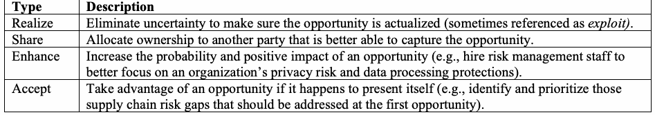
| 種類 | 説明 |
| 実現 | 機会の不確実性をなくし、機会を実現する（「活用」と呼ばれることもあります）。 |
| 共有 | 機会を獲得する能力がより高い他者に所有権を割り当てる。 |
| 強化 | 機会の発生可能性とポジティブな影響を高める（組織のプライバシーリスクやデータ処理の保護により注力するためリスク管理要員を採用するなど）。 |
| 受容 | 機会が訪れた場合に活用する（サプライチェーンリスクのギャップのうち、最初の機会に対処すべきものを特定し優先順位を付けるなど）。 |
As with negative risks, positive entries in the ICT risk registers should be normalized and aggregated into the enterprise-level risk register. As shown in Fig. 9, this publication focuses on the integration of ICT risk from various disciplines in support of an ERM integration cycle. The document acknowledges the need for ongoing bidirectional communication between ERM and risk programs and recognizes that the risk disciplines both inform and receive direction from ERM. It shows that the communication of risk appetite statements from the ERM portfolio is a way for risk programs to better identify and monitor risks using a variety of related methods, such as risk tolerance statements, key performance indicators, key risk indicators, and controls. Similarly, this publication formalizes the use of risk registers to communicate risks and risk responses among program and portfolio levels. It highlights industry practices for coordination through the elevation of risks for oversight and escalating risks for higher-level ownership.
ネガティブリスクと同様、ICTリスク登録簿のポジティブリスク項目も正規化し、エンタープライズレベルのリスク登録簿に集約する必要があります。図9に示すとおり、本刊行物はERM統合サイクルを支えるため、さまざまなICT分野のリスクを統合することに焦点を当てています。本書はERMとリスクプログラム間で継続的な双方向コミュニケーションが必要であると認識し、各リスク分野がERMに情報を提供すると同時に、ERMから方針を受け取ることを示します。ERMポートフォリオからリスク選好度の声明を伝達することで、各リスクプログラムはリスク許容度の声明、主要業績評価指標、主要リスク指標、管理策など、関連するさまざまな方法を使ってリスクをより適切に特定・監視できます。同様に、本刊行物はプログラムレベルとポートフォリオレベル間でリスクと対応を伝達する手段としてリスク登録簿を正式に位置付けます。監督のためにリスクを上位へ引き上げたり、より上位の所有責任へエスカレーションしたりする業界慣行を取り上げます。
未レビュー訳Building ERRs and ERPs from ICTRM-Specific Risk Registers
ICTRM固有のリスク登録簿からERRおよびERPを作成する
未レビュー訳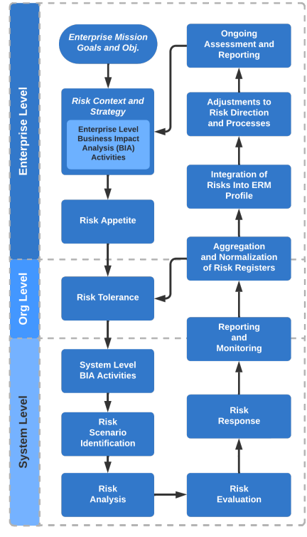
ICTRMのリスク登録簿からERRおよびERPを作成する図。ガバナンス層でエンタープライズリスクプロファイル（ERP）を整備し、エンタープライズリスク登録簿（ERR）に優先順位を付ける。ERMポートフォリオに含まれる財務、サプライチェーン、サイバーセキュリティ、プライバシー、評判、規制などのリスク管理プログラムから、システム、下位組織、組織レベルの各リスク登録簿を順次集約・正規化する。下部は各リスク領域とICTリスクの例、上部は管理およびガバナンスを示す。
The achievement of defined expectations is conveyed through risk registers that document and communicate risk decisions. Risk assessment results and risk response actions at the system level are reflected in the ICT risk registers. The registers from multiple systems are collated, aggregated, normalized, and provided to business managers at the organization level to provide a composite risk understanding. Those managers can evaluate results and refine risk tolerance criteria to optimize value delivery, resource utilization, and risk. The enterprise-level aggregation of all of the various risk registers into an enterprise risk register (ERR) and a prioritized enterprise risk profile (ERP) enables senior leaders to monitor risk responses while considering the expectations set. This section takes a closer look at how ICT risk registers are used as the inputs for building an ERR and ultimately an ERP, as depicted in Fig. 9.
定めた期待の達成状況は、リスク登録簿を通じてリスクに関する決定を記録・伝達します。システムレベルのリスク評価結果とリスク対応措置は、ICTリスク登録簿に反映されます。複数システムの登録簿を取りまとめ、集約・正規化して組織レベルの業務管理者に提供し、リスクを総合的に理解できるようにします。管理者は結果を評価し、価値提供、資源利用、リスクを最適化するためにリスク許容度の基準を改訂できます。エンタープライズレベルでさまざまなリスク登録簿を集約してエンタープライズリスク登録簿（ERR）を作成し、優先順位付けされたエンタープライズリスクプロファイル（ERP）を作成することで、上級リーダーは定めた期待を考慮しながらリスク対応を監視できます。この節では、図9に示すとおり、ICTリスク登録簿をERR、最終的にはERPの作成に用いる入力情報としてどのように利用するかを詳しく検討します。
未レビュー訳Fig. 9. ICTRM integration cycle
図9 ICTRM統合サイクル
未レビュー訳Creating and Maintaining Enterprise-Level ICT Risk Registers
エンタープライズレベルのICTリスク登録簿の作成と維持
未レビュー訳A key outcome of the risk identification and communications elements is the ability to create enterprise-level ICT risk registers as input to the broader ERR (Sec. 4.2). As described throughout Sec. 3, the application of a consistent risk register with agreed-upon criteria and categories enables various data points to be normalized, aggregated, and sorted into an enterprise view. Risk registers are composed and maintained at all levels: enterprise (including higher-level and lower-level enterprises), organization (including suborganizations and business units), and system.19 The vertical columns in Fig. 5 should not be interpreted as guidance to address such risks as isolated silos, instead, that information for various types of ICT risks should be shared with those in higher organizational levels for the benefit of the whole enterprise. Similarly,
リスクの特定とコミュニケーションの重要な成果の一つは、エンタープライズレベルのICTリスク登録簿を作成し、より包括的なERR（4.2節）への入力情報として利用できることです。第3節全体で説明したとおり、合意済みの基準やカテゴリを持つ一貫したリスク登録簿を適用すると、さまざまなデータ項目を正規化、集約、並べ替えしてエンタープライズの視点にまとめられます。リスク登録簿は、エンタープライズ（上位および下位のエンタープライズを含む）、組織（下位組織や事業部門を含む）、システムのすべてのレベルで作成・維持します。19 図5の縦列は、リスクを孤立した縦割り領域として扱う指針と解釈すべきではありません。むしろ、エンタープライズ全体の利益のため、さまざまなICTリスクの情報を組織の上位レベルと共有する必要があります。同様に、
未レビュー訳ICTRM should not be isolated to only one organizational level nor within a single ICT risk discipline. Instead, those in an organizational level should collaborate and communicate about issues, problems, and opportunities identified. As lessons learned about successes and challenges are shared among peers, that information can be conveyed to other organizations and to enterprise management, including by using risk registers and RDRs. For each risk discipline, as the risk registers from each system and organization are completed, they are provided to the designated risk officers at the relevant level (i.e., system or organization) and shared with senior management to conduct the following actions: 1) normalize (e.g., ensure definitions and values as recorded by various enterprise entities are consistent and remove duplicate risk reporting) and 2) aggregate risks in similar categories into a concise view. To support the subsequent aggregation of various risk registers, enterprise risk guidance should identify the enterprise objectives to which various types of ICT risk should be aligned. The ERP reflects risks that may have impacts in each of four discrete enterprise objectives: strategic, operations, reporting, and compliance. These same four objectives were key factors in the original COSO ERM framework and are often used as guideposts for enterprise risk reporting. Clear direction from senior leaders about how to align various types of ICT risk with enterprise objectives will help enable subsequent aggregation, normalization, and prioritization. Objective alignments include:
ICTRMを単一の組織レベル内または一つのICTリスク分野内に限定してはなりません。各組織レベルの関係者は、特定した課題、問題、機会について協力し、コミュニケーションを取る必要があります。成功と課題から得た教訓を同僚間で共有すれば、その情報をリスク登録簿やRDRを活用するなどして、他の組織やエンタープライズ管理者へ伝達できます。各リスク分野では、各システムおよび組織のリスク登録簿が完成した段階で、該当するレベル（システムまたは組織）の指定リスク担当者に提出し、上級管理者とも共有して次の措置を実施します。1）正規化する（さまざまなエンタープライズ主体が記録した定義や値の一貫性を確保し、重複するリスク報告を除去するなど）。2）類似カテゴリのリスクを集約し、簡潔に把握できる形にまとめる。複数のリスク登録簿を後続の段階で集約するため、エンタープライズのリスク指針では、各種ICTリスクを整合させるエンタープライズ目標を特定する必要があります。ERPには、戦略、運用、報告、コンプライアンスの4つの個別目標に影響する可能性のあるリスクが反映されます。この同じ4目標は、初期のCOSO ERMフレームワークの主要要素であり、エンタープライズのリスク報告の指針としてよく用いられます。さまざまなICTリスクをエンタープライズ目標に整合させる方法について上級リーダーが明確な指針を示すと、後続の集約、正規化、優先順位付けが容易になります。目標の整合には次のものがあります。
未レビュー訳•Strategic risks related to the implementation of a new service offering, opportunities for innovation within an ICT area, and change management improvements and challenges
•ICT分野での新サービス提供、革新の機会、変更管理の改善や課題の実施に関連する戦略リスク。
未レビュー訳•Operations issues regarding product or service quality and resilience (e.g., supply chain interruption that disables a manufacturing process), processes and procedures for privacy risk posture, OT considerations, and business continuity/disaster recovery issues
•製品やサービスの品質とレジリエンス（サプライチェーンの中断により製造プロセスが停止するなど）、プライバシーリスク態勢のためのプロセスと手順、OTに関する考慮事項、事業継続／災害復旧の課題に関する運用上の問題。
未レビュー訳•Reporting regarding ICT risk issues, including insurance considerations and material risk factors that affect disclosures or statutory reporting
•ICTリスクに関する問題の報告。保険に関する考慮事項や、開示または法定報告に影響する重大なリスク要因を含む。
未レビュー訳•Compliance risks where a negative event might result in a failure to meet a contractual service agreement or in a regulatory penalty or fine
•ネガティブな事象が、契約上のサービス合意を満たせないこと、または規制上の罰則・罰金につながる可能性があるコンプライアンスリスク。
未レビュー訳Direction may be needed regarding how to account for those risks that cross multiple boundaries and how each organizational level should perform an aggregation of subordinate risk registers.
複数の境界をまたぐリスクをどのように扱うか、また各組織レベルが下位のリスク登録簿をどのように集約するかについて指針が必要になる場合があります。
未レビュー訳Creating the Enterprise Risk Register (ERR)
エンタープライズリスク登録簿（ERR）の作成
未レビュー訳Enterprise risk officers collect all risk inputs, including the ICT risk registers, and analyze potential risk events, consequences, and impacts at the enterprise level to create the ERR. The ERR is subsequently prioritized to create the enterprise risk profile (ERP) discussed in Sec. 4.3, which enables key executive stakeholders to stay aware of critical risks, including those that are ICT-related. As part of their risk guidance, enterprise leaders designate ERM process participants and the responsibilities of each role. That guidance should declare which role is responsible for creating and maintaining the ERR, how frequently it will be updated, and how the risks within it will be communicated to various stakeholders. This document will assume that role to be assigned to the enterprise risk officer, although the responsibility could fall upon any designated party, including other roles as described in Sec. 3.1.1.
エンタープライズのリスク担当者は、ICTリスク登録簿を含むすべてのリスク情報を収集し、エンタープライズレベルで潜在的なリスク事象、結果、影響を分析してERRを作成します。その後、ERRに優先順位を付け、4.3節で説明するエンタープライズリスクプロファイル（ERP）を作成します。これにより、上級幹部を含む主要なステークホルダーは、ICT関連を含む重大なリスクを把握できます。エンタープライズのリーダーはリスク指針の一環として、ERMプロセスの参加者と各役割の責任を指定します。その指針では、ERRの作成・維持の責任者、更新頻度、含まれるリスクをさまざまなステークホルダーに伝える方法を定める必要があります。本書ではこの役割をエンタープライズのリスク担当者に割り当てる想定ですが、3.1.1節で説明した他の役割を含む、指定された任意の担当者が責任を負う場合があります。
未レビュー訳The creation and maintenance of the ERR also supports a periodic review of enterprise risk guidance, including risk definitions, context, and risk appetite criteria. It provides an opportunity to review and validate enterprise definitions for risks, risk categories, and risk assessment scales. If any changes or updates to the risk context or guidance need to occur, the enterprise risk officer (or equivalent) is likely to have sufficient seniority to ensure appropriate updates to those enterprise processes. Practitioners should consider any positive risks present in the rolled-up report and add other opportunities as inputs to the ERR. Fig. 10 provides a notional ERR that combines both federal agency and critical infrastructure risks and that illustrates the integration of various ICT risks alongside other key enterprise risks.
ERRの作成と維持は、リスクの定義、状況、リスク選好度の基準など、エンタープライズのリスク指針を定期的に見直す機会にもなります。リスク、リスクカテゴリ、リスク評価尺度に関するエンタープライズの定義を確認し、妥当性を検証できます。リスク状況や指針を変更・更新する必要が生じた場合、エンタープライズのリスク担当者（または同等の役職者）は、エンタープライズの各プロセスを適切に更新できる十分な上級職にあるでしょう。実務者は、集約された報告に含まれるポジティブリスクを検討し、他の機会もERRへの入力として追加する必要があります。図10は、連邦機関と重要インフラのリスクを組み合わせ、さまざまなICTリスクを他の主要なエンタープライズリスクと統合する概念上のERRを示します。
未レビュー訳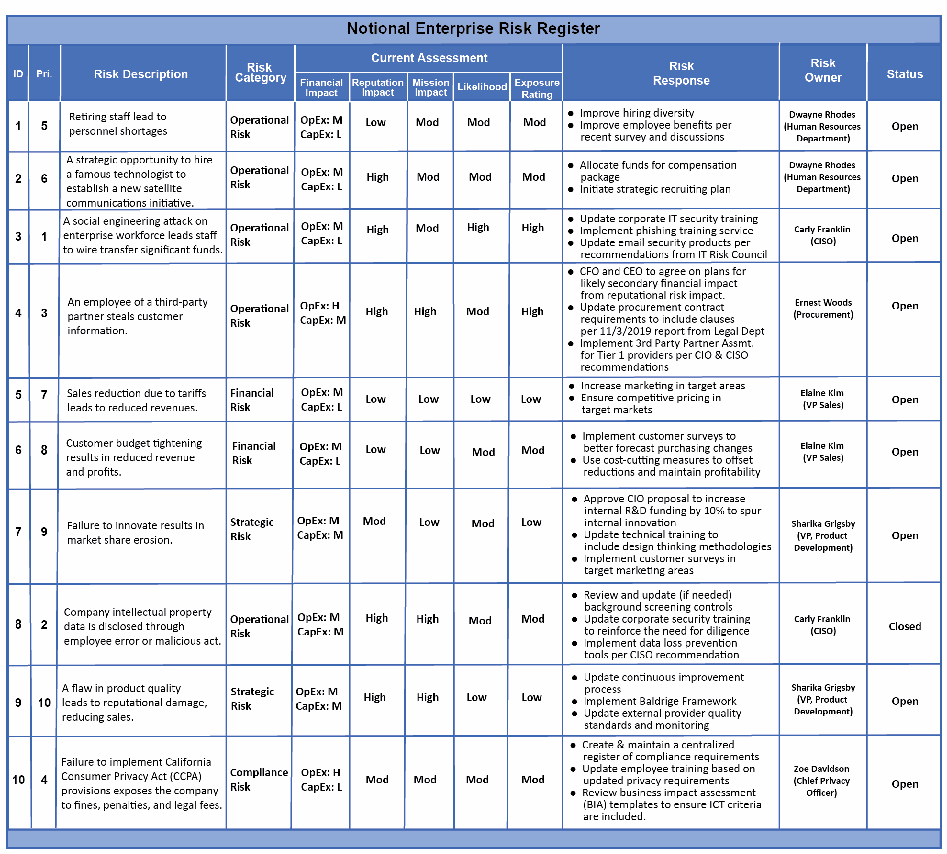
ICT関連を含む想定エンタープライズリスク登録簿の記入例。列はID、優先度、リスクの説明、分類、現行評価（財務影響、評判影響、ミッション影響、発生可能性、エクスポージャー）、対応、所有者、状態。10件の例を示す。1）退職者増加による人員不足（運用、優先度5、採用多様化・福利厚生改善、人的資源部門）。2）著名技術者の採用による新たな衛星通信事業の機会（運用、優先度6、報酬予算・採用計画、人的資源部門）。3）ソーシャルエンジニアリングによる不正送金（運用、優先度1、セキュリティ・フィッシング研修とメール保護の強化、CISO）。4）第三者パートナー従業員による顧客情報窃取（運用、優先度3、契約要件・第三者評価の強化、調達部門）。5）関税による売上減少（財務、優先度7、マーケティング・価格競争力の強化、営業担当）。6）顧客予算の縮小による収益減（財務、優先度8、購買動向調査とコスト削減、営業担当）。7）革新の失敗による市場シェア低下（戦略、優先度9、研究開発資金、技術研修、顧客調査、製品開発担当）。8）従業員の過失または悪意による知的財産の漏えい（運用、優先度2、身元確認・研修・データ損失防止の強化、CISO、完了）。9）製品品質の欠陥による評判低下と売上減（戦略、優先度10、継続的改善、Baldrigeフレームワーク、外部提供者の品質監視、製品開発担当）。10）カリフォルニア州消費者プライバシー法（CCPA）への不適合による罰金・法的費用（コンプライアンス、優先度4、要件登録、従業員研修、BIAテンプレートの更新、プライバシー責任者）。状態は8番が完了、他は未解決。評価欄はOpEx／CapEx、評判、ミッション、発生可能性、エクスポージャーの各水準を示す。
Fig. 10. Notional example of an ICT-inclusive ERR
図10 ICTを含むERRの概念例
未レビュー訳This example illustrates the inclusion of a positive risk (item 2) beside negative risks. Of course, an actual ERR would include many more entries, both positive and negative. Most of the columns in the example are the same as their lower-level risk register counterparts. The notable exception is that the example ERR splits the Current Assessment – Impact into three columns, which are described in Table 7.
この例では、ネガティブリスクと並べてポジティブリスク（項目2）を記載しています。実際のERRには、ポジティブリスクとネガティブリスクの双方について、さらに多くの項目が含まれます。この例の列の大半は、下位レベルのリスク登録簿と同じです。大きな違いとして、ERRの例では「現行評価―影響」を3列に分けており、その内容を表7に説明します。
未レビュー訳Table 7. Descriptions of additional notional ERR elements
表7 概念上のERRに追加する要素の説明
未レビュー訳| ERR Element | Description |
| Current Assessment – Financial Impact | Analysis of the financial potential benefits or consequences resulting from this scenario, including cost considerations. While this element could be quantitative, it is often qualitative (e.g., high, moderate, low) at the enterprise level. Financial considerations may be expressed as 1) capital expenditures that represent a longer-term business expense, such as property, facilities, or equipment, and 2) operating expenses that support day-to-day operations. |
| Current Assessment – Reputation Impact | Analysis of the potential benefits or consequences that the scenario might have on the stature, credibility, or effectiveness of the enterprise. Some enterprises perform a formal sentiment analysis using commercial services or other technical tools to support assessment. |
| Current Assessment – Mission Impact | Analysis of the potential benefits or consequences that the scenario might have on the ability of the enterprise to successfully achieve mission objectives. |
原本の表画像
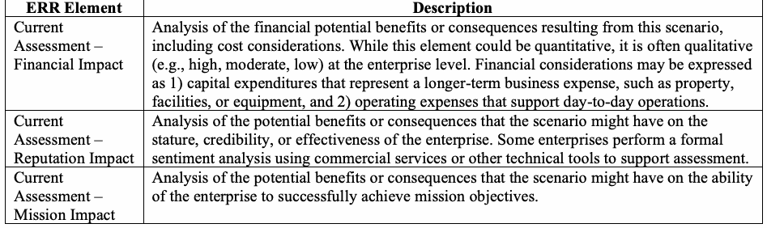
| ERRの要素 | 説明 |
| 現行評価―財務的影響 | このシナリオから生じる潜在的な財務上の利益または結果の分析。費用に関する考慮事項を含みます。この要素は定量化できますが、エンタープライズレベルでは定性的（高、中、低など）に評価されることがよくあります。財務上の考慮事項には、1）不動産、施設、設備など長期的な事業費用を表す資本的支出と、2）日常業務を支える運用費用があります。 |
| 現行評価―評判への影響 | このシナリオがエンタープライズの地位、信頼性、有効性にもたらす潜在的な利益または結果の分析。評価を支援するため、商用サービスや他の技術ツールを用いて正式なセンチメント分析を行うエンタープライズもあります。 |
| 現行評価―使命への影響 | このシナリオがエンタープライズの使命目標を達成する能力にもたらす潜在的な利益または結果の分析。 |
As was described for lower-level risk registers, there is value in both a single point of reference (the ERR) and detailed risk information (the RDR). The ERR provides an easily consumed summary for understanding the risk landscape, while the RDR provides additional information. The RDR also enables the documentation of additional information, such as historical information, detailed risk analysis data, and information about individual and organizational accountability. An enterprise RDR might also include:
下位レベルのリスク登録簿について説明したとおり、単一の参照先（ERR）と詳細なリスク情報（RDR）の両方に価値があります。ERRはリスク状況を把握しやすい要約として提供し、RDRは追加情報を提供します。またRDRを使うと、履歴、詳細なリスク分析データ、個人および組織の説明責任に関する情報なども文書化できます。エンタープライズのRDRには、次の情報を含めることもできます。
未レビュー訳•Detailed risk information (e.g., full risk statement, detailed scenario description, key risk indicators, enterprise status for this particular risk)
•リスクに関する詳細情報（リスクの全文、詳細なシナリオ説明、主要リスク指標、当該リスクに関するエンタープライズの状態など）。
未レビュー訳•Information regarding various risk roles (e.g., risk owner, risk manager, risk approver) and affected stakeholders
•さまざまなリスク上の役割（リスク所有者、リスク管理者、リスク承認者など）および影響を受けるステークホルダーに関する情報。
未レビュー訳•Historical timeline information (e.g., last update date, next expected review)
•履歴・時系列情報（最終更新日、次回の予定レビュー日など）。
未レビュー訳•Risk analysis information, including the aggregate understanding of threats, weaknesses/pre-existing conditions, resources affected, and impact
•脅威、弱点／既存の状態、影響を受ける資源、影響に関する集約的な理解を含むリスク分析情報。
未レビュー訳•Detailed risk response information (e.g., responses implemented, status and results of previous responses, additional responses planned)
•詳細なリスク対応情報（実施した対応、以前の対応の状態と結果、計画中の追加対応など）。
未レビュー訳The ERR provides input for those performing enterprise risk oversight, such as an executive risk committee. By tracking the status of each risk, including the exposure value of each, enterprise stakeholders can identify the most relevant risks (e.g., a top ten list that may be used to further inform enterprise risk decisions). Summary reports about the highest-priority risks may be used to inform stakeholders (e.g., for federal departments and agencies, those in an oversight role such as Congress, OMB, or GAO) about existing risks, risk responses, and planned activities. Since it is difficult to compare dissimilar risk exposures, such as employee retention and disaster recovery, risks are often translated into financial impact and may be further broken down into direct costs (i.e., the impact of a given risk on the capital budget and operating expenses), the financial cost of reputational damage, and direct financial implications on the enterprise mission. The relative financial impact of each type of risk can provide further input into risk management prioritization and monitoring decisions for enterprise risk managers. Reputation exposure can be similarly determined in the ERR (e.g., by the chief risk officer) by combining high-impact attacks, enterprise sector, and consequences with a histogram (trend) analysis of stakeholder sentiment (for each stakeholder type). This last action of prioritization creates the ERP, as discussed in Sec. 4.3. For federal agencies, OMB Circular A-123 requires that the enterprise risk register consider both inherent and residual risk.20 The COSO ERM Framework [COSOERM] further describes these terms and differentiates between actual residual risk and target (desired) risk:
ERRは、執行リスク委員会など、エンタープライズリスクを監督する担当者への入力情報となります。各リスクの状態とエクスポージャー値を追跡することで、エンタープライズのステークホルダーは、最も関連性の高いリスク（エンタープライズの意思決定にさらに役立てるトップ10リストなど）を特定できます。優先度が最も高いリスクの要約報告書は、既存のリスク、対応、計画中の活動について、ステークホルダー（連邦省庁・機関であれば議会、OMB、GAOなどの監督者）に情報を提供するために利用できます。従業員の定着と災害復旧など、性質の異なるリスクエクスポージャーを比較するのは難しいため、リスクを財務的影響に換算し、さらに直接費用（資本予算と運用費用に対する影響）、評判の毀損による財務費用、エンタープライズの使命に対する直接的な財務影響に分けることがあります。各種リスクの財務的影響の相対値は、エンタープライズのリスク管理者が優先順位付けや監視を決定する際の追加情報となります。ERRでは、エンタープライズの業種や影響の大きい攻撃とその結果を、ステークホルダーの感情（ステークホルダーの種類ごと）のヒストグラムによる傾向分析と組み合わせ、評判エクスポージャーも同様に判定できます（例：最高リスク責任者による分析）。この優先順位付けの最終段階で、4.3節で説明するERPが作成されます。連邦機関について、OMB通達A-123はエンタープライズリスク登録簿で固有リスクと残余リスクの両方を考慮するよう求めています。20 COSO ERMフレームワーク［COSOERM］はこれらの用語を詳しく説明し、実際の残余リスクと目標（望ましい）リスクを区別しています。
未レビュー訳•“Inherent risk is the risk to an entity in the absence of any direct or focused actions by management to alter its severity.”
•「固有リスクとは、経営陣がその重大性を変えるための直接的または重点的な措置を一切講じていない場合に、組織が直面するリスクである。」
未レビュー訳•“Target residual risk is the amount of risk that an entity prefers to assume in the pursuit of its strategy and business objectives, knowing that management will implement or has implemented direct or focused actions to alter the severity of the risk.”
•「目標残余リスクとは、リスクの重大性を変えるための直接的または重点的な措置を経営陣が実施する、または実施済みであることを前提として、戦略と事業目標を追求する際に組織が負うことを望むリスクの量である。」
未レビュー訳•“Actual residual risk is what remains after management has taken action to alter its severity. Actual residual risk should be equal to or less than the target residual risk.”
•「実際の残余リスクとは、経営陣がリスクの重大性を変える措置を講じた後に残るリスクである。実際の残余リスクは、目標残余リスク以下である必要がある。」
未レビュー訳OMB A-123 examples reference inherent risk that describes “conditions in the absence of risk management actions.” There are often likely to be at least some elements that help mitigate risks, so this publication typically refers to current risk rather than inherent risk when representing a baseline risk posture.
OMB通達A-123の例では、固有リスクを「リスク管理措置がない状態」と説明しています。リスク軽減に役立つ要素が少なくとも一部存在する場合が多いため、本刊行物では基準となるリスク態勢を表す際に固有リスクではなく、通常「現行リスク」と呼びます。
未レビュー訳Developing the Enterprise Risk Profile (ERP)
エンタープライズリスクプロファイル（ERP）の作成
未レビュー訳As risk information is transmitted up from lower levels of the organization, each level’s risk register should contain the pertinent information for creating a prioritized risk profile for the level immediately above it. For example, a subject-matter expert in a particular ICT risk discipline might provide their own prioritization of risks within their discipline for consideration by the next level of risk experts. Subordinate organizations’ impacts may be different, similar, conflicting, overlapping, or unavailable and must be properly combined by financial and mission analysis at the level immediately above the reporting organization. While the impacts of ICT risk on various assets may be determined at lower levels, the overall cash flow and capital implications of all of the risks can only be normalized and aggregated (and recorded in the ERR) by enterprise fiduciaries (e.g., CFOs). Similarly, enterprise mission impacts must be aggregated and expressed by those senior executives most directly accountable to stakeholders. The ERR informs the ERP once the risks are prioritized at the highest level of the risk management function in the enterprise, as depicted in Fig. 11. The ERP is a subset of carefully selected risks from the larger ERR.
リスク情報が組織の下位レベルから上位へ伝達される際、各レベルのリスク登録簿には、直上のレベルの優先順位付けされたリスクプロファイルを作成するために必要な情報を記載する必要があります。たとえば、特定のICTリスク分野の専門家が、その分野のリスクに優先順位を付け、次のレベルのリスク専門家が検討できるよう提供する場合があります。下位組織の影響は異なる、類似する、相反する、重複する、または入手できない場合があり、報告組織の直上レベルで財務分析と使命分析によって適切に統合する必要があります。ICTリスクが個々の資産に与える影響を下位レベルで判定できる場合でも、すべてのリスクがキャッシュフローと資本に及ぼす全体的な影響を正規化・集約しERRに記録できるのは、CFOなどエンタープライズの受託責任者に限られます。同様に、エンタープライズの使命への影響は、ステークホルダーに対して直接説明責任を負う上級幹部が集約し、表現する必要があります。図11に示すように、エンタープライズのリスク管理機能の最上位でリスクに優先順位を付けると、ERRがERPに情報を提供します。ERPは、より大きなERRから慎重に選定されたリスクの一部です。
未レビュー訳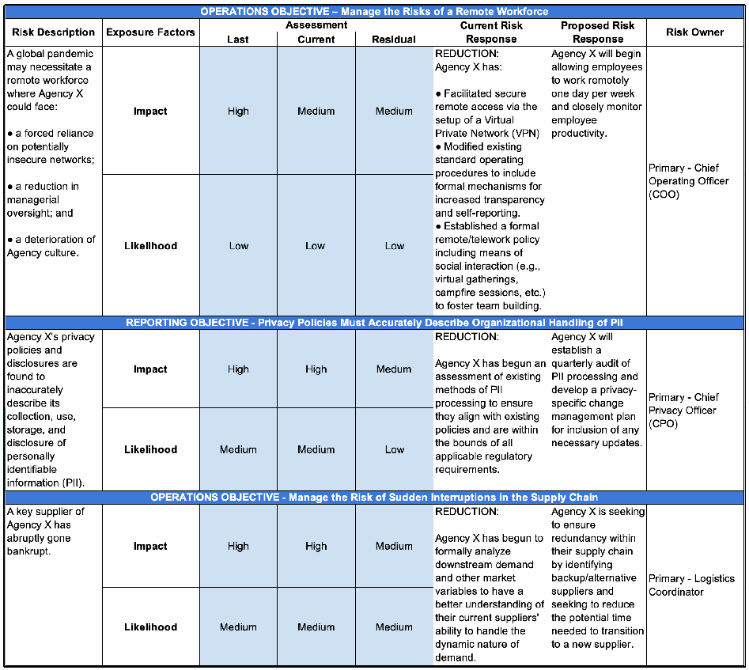
エンタープライズリスクプロファイルの想定例を示す表。列は業務目標、リスクの説明、エクスポージャー要因、前回・現行・残留評価、現在のリスク対応、提案する対応、リスク所有者。3例を含む。1）遠隔勤務を要する世界的パンデミック：安全でないネットワークへの依存、管理監督の低下、組織文化の悪化。影響度は高・高・中、発生可能性は低・低・低。VPNによる安全なアクセス、手順・透明性・自己申告の改善、遠隔勤務方針を実施し、週1日の在宅勤務を認め生産性を監視する案。所有者は最高執行責任者。2）PIIの収集、利用、保存、開示をプライバシー方針が正確に記述していないリスク：影響度は高・高・中、発生可能性は中・中・低。PII処理の四半期監査を開始し、プライバシー変更管理計画を策定する案。所有者は最高プライバシー責任者。3）主要サプライヤーの突然の倒産：影響度は高・高・中、発生可能性は中・中・中。下流需要や市場要因を分析し、代替供給者を特定して移行時間を短縮する案。所有者は物流調整担当。
Fig. 11. Notional example of an enterprise risk profile
図11 エンタープライズリスクプロファイルの概念例
未レビュー訳The ERP reflects assessments of mission, financial, and reputation exposures organized according to the four enterprise objectives. They may be full-value exposures or modified (and so noted) by the likelihood assessments of enterprise leaders. At the top enterprise level, ERM officials have the prerogative to add their own judgment of likelihood and impact as part of the normalization process, along with other members of the enterprise risk executive function. While the ERM process helps drive the discussion and calculation of likely risk scenarios, recent natural disasters have demonstrated that actual consequences can far exceed initial loss expectations. Enterprise executives should continually observe industry trends and actual occurrences to readjust likelihood and impact estimations and reserves based on a changing risk landscape. ERPs should also reflect comparable occurrence incidents and trends for the subject enterprise and peer organizations.
ERPは、エンタープライズの4つの目標に沿って整理した、使命、財務、評判に関するエクスポージャーの評価を反映します。これらは全額のエクスポージャーとすることも、エンタープライズのリーダーによる発生可能性評価に基づいて修正することもできます（その場合は修正を明記します）。エンタープライズの最上位では、ERM担当者が他のエンタープライズのリスク執行機能メンバーとともに、正規化の一環として発生可能性と影響に関する独自の判断を加える権限を持ちます。ERMプロセスは起こり得るリスクシナリオの議論や算定に役立ちますが、近年の自然災害は、実際の結果が初期の損失予測を大幅に上回り得ることを示しています。エンタープライズ幹部は、変化するリスク環境に応じて発生可能性と影響の推定、および予備枠を見直すため、業界動向や実際の発生事象を継続的に確認する必要があります。ERPには、対象エンタープライズおよび同業組織における比較可能な発生事象や傾向も反映する必要があります。
未レビュー訳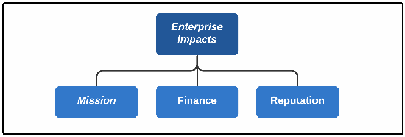
エンタープライズへの影響は、ミッション、財務、評判の3領域に及ぶことを示す図。
Fig. 12. Impacts (consequences) on enterprise assets for a business or agency
図12 企業または機関のエンタープライズ資産に対する影響（結果）
未レビュー訳The ERP supports the governance and management of measuring significant financial, reputational, and mission impacts (consequences). Some enterprises may also use this taxonomy to support a broader risk breakdown structure (RBS) that provides a hierarchical representation of risks with high-level risks near the top and increasingly detailed risks below each category. As shown in Fig. 12, ERP considerations include:
ERPは、4つのエンタープライズ目標に沿って整理し、重大な財務、評判、使命への影響（結果）を測定するガバナンスと管理を支援します。エンタープライズによっては、この分類をより広範なリスク内訳構造（RBS）にも利用します。RBSは、上位に高位リスクを置き、各カテゴリの下により詳細なリスクを並べて階層的に示すものです。図12に示すとおり、ERPでは次の点を考慮します。
未レビュー訳•Financial impact – Various risk scenarios are converted into actual capital and operational expenses, enabling executive leaders to conduct a fiscally responsible cost/benefit analysis that considers the recommended strategies for risk response. (These presentations are equivalent to the financial disclosures in Form 10-Q and Form 10-K filings to the U.S. Securities and Exchange Commission [SEC] by commercial public companies each quarter and for Form 8-K filings as risk incidents occur.)
•財務的影響―さまざまなリスクシナリオを実際の資本支出および運用費用に換算します。これにより、幹部はリスク対応戦略の推奨を考慮して、財務責任を踏まえた費用対効果分析を実施できます。（この提示方法は、商業公開企業が米国証券取引委員会（SEC）に四半期ごとに提出する様式10-Qおよび10-K、ならびにリスク事象発生時に提出する様式8-Kの財務開示に相当します。）
未レビュー訳•Reputation impact – While subordinate risk registers describe risk scenarios, including those that may impact reputation, executive leaders record the evaluation of consequences on the enterprise’s reputation. This also supports consideration of other downstream impacts that are likely to result from damage to reputation, such as financial losses or credit risk.
•評判への影響―下位のリスク登録簿では、評判に影響する可能性を含むリスクシナリオを記載します。一方、幹部はエンタープライズの評判に対する結果の評価を記録します。これにより、評判の毀損から生じる可能性が高い財務損失や信用リスクなど、他の下流への影響も検討できます。
未レビュー訳•Mission impact – Executive leaders record the evaluation of consequences on the overall ability for the enterprise to conduct its mission and achieve strategic objectives. (Mission impact on commercial public enterprises is often expressed in share value/market cap and share volatility tables and is disclosed in SEC filings and shareholder communications.) Many specific ICT risks (e.g., health, safety, and environment (HSE)) have a direct impact on the enterprise’s ability to fulfill its mission.
•使命への影響―幹部は、エンタープライズが使命を遂行し戦略目標を達成する全体的な能力に対する結果の評価を記録します。（商業公開企業の使命への影響は、株価／時価総額や株価変動の表として示され、SECへの提出書類や株主向けの情報に開示されることがよくあります。）健康、安全、環境（HSE）などに関する多くのICTリスクは、エンタープライズが使命を遂行する能力に直接影響します。
未レビュー訳These three high-level impact considerations are then used in conjunction with other enterprise risk responses to determine tolerances, allocations, and disclosures commensurate with risk exposure.
これら3種類の高位の影響に関する考慮事項を、他のエンタープライズリスク対応と組み合わせ、リスクエクスポージャーに応じた許容度、資源配分、開示を決定します。
未レビュー訳Translating the ERP to Inform Leadership Decisions
リーダーの意思決定に役立てるためのERPの変換
未レビュー訳For some organizations, the information from the ERP will need to be provided to senior managers who have a fiduciary duty to remain aware of and help manage risks. In this way, enterprise leaders will have the necessary information and opportunity to consider risk exposures as factors for budgets or corporate balance sheet reporting. Both private-sector and public-sector enterprises will benefit from the use of this risk register integration process. The creation of an ERP is mandated by OMB Circular A-123 for federal agencies:21
組織によっては、リスクを把握し管理する受託者責任を持つ上級管理者にERPの情報を提供する必要があります。これによりエンタープライズのリーダーは、リスクエクスポージャーを予算や企業の貸借対照表報告の要因として検討するために必要な情報と機会を得られます。民間・公共部門のエンタープライズはいずれも、このリスク登録簿統合プロセスの利用から恩恵を受けます。連邦機関ではOMB通達A-123によりERPの作成が義務付けられています。21
未レビュー訳原本の表画像
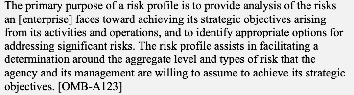
This prioritization is supported by one of COSO’s key principles: “The organization prioritizes risks as a basis for selecting responses to risks” [COSOERM]. Prioritization helps managers evaluate the costs and benefits of allocating resources to mitigate one risk compared to another. Senior leadership must have actionable information for their decision-making (e.g., during industry boardroom deliberations and their federal counterparts). Table 8 provides a notional Enterprise Risk Profile Supplement that reflects a portfolio evaluation of various organizational risk profiles. This information, having been populated and prioritized, directly informs executive decision-making.
この優先順位付けは、COSOの主要原則の一つである「組織はリスクへの対応を選ぶ基礎として、リスクに優先順位を付ける」ことに支えられています［COSOERM］。優先順位付けにより、管理者はあるリスクを軽減するための資源配分と、別のリスクへの配分との費用対効果を評価できます。上級リーダーシップは、意思決定（業界の取締役会での審議や連邦政府における同様の場面など）に実行可能な情報を必要とします。表8は、さまざまな組織リスクプロファイルのポートフォリオ評価を示す、概念上の「エンタープライズリスクプロファイル補足資料」です。情報を記入して優先順位を付けると、幹部の意思決定に直接役立ちます。
未レビュー訳Table 8. Notional enterprise risk portfolio view for a private enterprise
表8 民間企業を想定したエンタープライズリスクポートフォリオの表示例
未レビュー訳| Financial Risk Profile | |
| Current Period | Previous Period |
| Net Revenue / Capital / Free Cash Flow | Net Revenue / Capital / Free Cash Flow |
| Enterprise | |
| Dept A | |
| Dept B | |
| … | |
| Dept N | |
| Reputation Risk Profile | |
| Current Period | Previous Period |
| Public / Regulators / Partners | Public / Regulators / Partners |
| Enterprise | |
| Dept A | |
| Dept B | |
| … | |
| Dept N | |
| Mission Risk Profile | |
| Current Period | Previous Period |
| Product/Service Capability / Philanthropy / Share Value | Product/Service Capability / Philanthropy / Share Value |
| Enterprise | |
| Dept A | |
| Dept B | |
| … | |
| Dept N |
原本の表画像
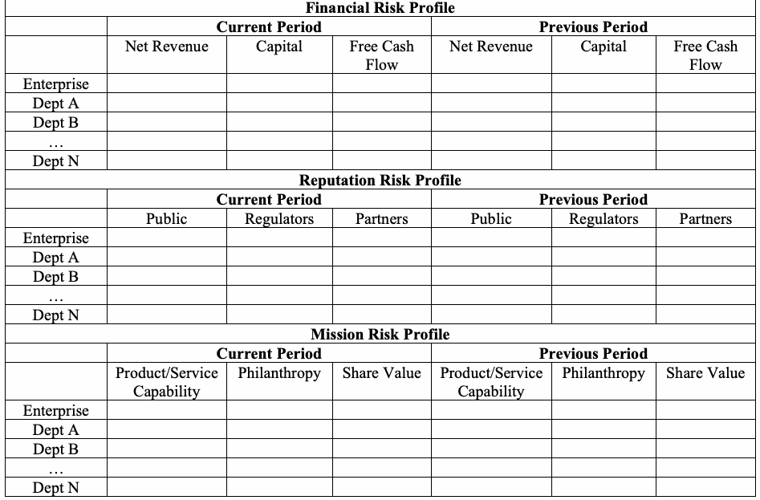
| 財務リスクプロファイル | |
| 現行期間 | 前期 |
| 純収益／資本／フリーキャッシュフロー | 純収益／資本／フリーキャッシュフロー |
| エンタープライズ | |
| 部門A | |
| 部門B | |
| … | |
| 部門N | |
| 評判リスクプロファイル | |
| 現行期間 | 前期 |
| 公衆／規制当局／パートナー | 公衆／規制当局／パートナー |
| エンタープライズ | |
| 部門A | |
| 部門B | |
| … | |
| 部門N | |
| 使命リスクプロファイル | |
| 現行期間 | 前期 |
| 製品／サービスの能力／慈善活動／株主価値 | 製品／サービスの能力／慈善活動／株主価値 |
| エンタープライズ | |
| 部門A | |
| 部門B | |
| … | |
| 部門N |
Enterprise Strategy for ICT Risk Coordination
ICTリスク調整のためのエンタープライズ戦略
未レビュー訳As part of their governance responsibilities, executive leaders should establish clear and actionable risk management guidance based on enterprise mission and business objectives. Expressing clear expectations regarding ICT risk enables participants at each level of the enterprise to manage risk to an acceptable level. As the risk landscape evolves, such as due to technological and environmental changes, enterprise leaders should continually review and adjust the risk strategy. For example, an enterprise subject to external regulation is likely to receive specific guidance regarding updated federal statutes and directives that must be considered when evaluating acceptable risk.
ガバナンス上の責任の一環として、経営幹部は、エンタープライズのミッションおよび事業目標に基づく、明確で実行可能なリスク管理指針を定めるべきである。ICTリスクに関する明確な期待を示すことで、エンタープライズの各階層の関係者は、リスクを許容可能な水準で管理できる。技術や環境の変化などによってリスク環境が進化するにつれて、エンタープライズのリーダーはリスク戦略を継続的に見直し、調整すべきである。例えば、外部規制の対象となるエンタープライズは、許容可能なリスクを評価する際に考慮しなければならない、更新された連邦法令や指令について具体的な指針を受ける可能性が高い。
未レビュー訳Risk Integration and Coordination Activities
リスク統合・調整活動
未レビュー訳Fig. 13 provides a simplified illustration of risk integration and coordination activities. Each enterprise is unique, so enterprise leadership may wish to tailor the approach for their unique circumstances. For example, while risk appetite statements usually originate from the most senior leaders, those leaders may choose to delegate the creation of ICT risk appetite statements to a senior ICT risk official. Readers should note that the processes described are cyclical. Early iterations may include the definition of terms, strategies, and objectives. Subsequent iterations may focus on refining those objectives based on previous results, observations of the risk landscape, and changes within the enterprise.
図13は、リスク統合・調整活動を簡略化して示している。エンタープライズごとに事情が異なるため、経営陣は固有の状況に合わせてアプローチを調整してよい。例えば、リスク選好度の表明は通常、最上位のリーダーが作成するが、そのリーダーはICTリスク選好度の表明の作成を上級ICTリスク担当者に委任してもよい。ここで説明するプロセスは循環的である点に留意する。初期の反復では、用語、戦略、目標を定義することがある。後続の反復では、以前の結果、リスク環境の観察、エンタープライズ内の変化に基づき、これらの目標を精緻化することに重点を置く場合がある。
未レビュー訳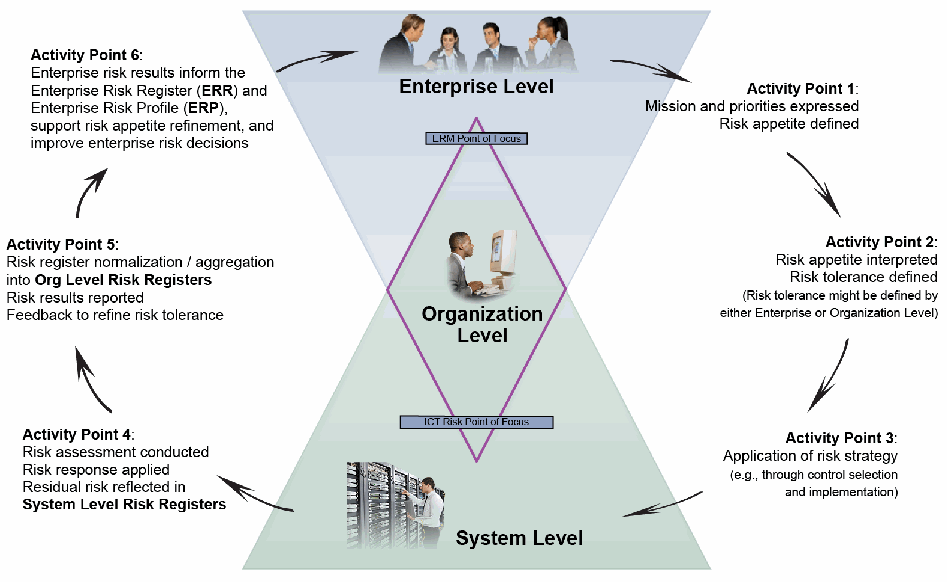
エンタープライズリスク管理の統合・調整に関する活動ポイント図。循環する6段階を示す。1）ミッションと優先事項を表明し、リスク選好度を定義する。2）リスク選好度を解釈し、リスク許容度を定義する（エンタープライズまたは組織レベルで定義する場合がある）。3）管理策の選択・実装などを通じてリスク戦略を適用する。4）リスクを評価し、対応を適用し、残留リスクをシステムレベルのリスク登録簿に記録する。5）リスク登録簿を正規化・集約して組織レベルの登録簿を作成し、結果を報告し、リスク許容度を見直すためのフィードバックを行う。6）エンタープライズリスク登録簿（ERR）およびエンタープライズリスクプロファイル（ERP）の結果を用いてリスク選好度を精緻化し、エンタープライズのリスク判断を改善する。図中にはエンタープライズ、組織、システムの各レベルと、ERMおよびICTリスクの着眼点が示される。
Fig. 13. Illustration of enterprise risk management integration and coordination
図13. エンタープライズリスク管理の統合と調整の図
未レビュー訳Table 9 describes the process by which senior leaders express expectations and receive results about managing ICT risk throughout the enterprise.
表9は、上級リーダーが期待を示し、エンタープライズ全体でのICTリスク管理に関する結果を受け取るプロセスを説明する。
未レビュー訳Table 9. Inputs and outputs for ERM governance and integrated ICTRM
表9. ERMガバナンスおよび統合ICTRMのインプットとアウトプット
未レビュー訳| Activity Point | Inputs | Outputs |
| Set risk expectations and priorities | Internal and external risk context, enterprise roles and responsibilities, and governance framework and governance systems for managing all types of risks | Documentation of enterprise priorities in light of mission objectives and stakeholder values, direction regarding budget (e.g., authorization for capital and operating expenditures), and risk appetite statements pertaining to each risk management discipline, including ICT |
| Interpret risk appetite to define risk tolerance statements | Enterprise priorities in light of mission objectives and stakeholder values, direction regarding budget (e.g., authorization for capital and operating expenditures), and risk appetite statements | Risk tolerance statements (and metrics) to apply risk appetite direction at the organization level and direction regarding methods to apply ICTRM (e.g., centralized services, compliance/auditing methods, shared controls to be inherited and applied at the system level) |
| Apply risk tolerance statements to achieve system- level ICTRM | Risk tolerance statements, direction regarding shared services and controls, and lessons learned from previous ICTRM implementation (and those of peers) | Inputs to preparatory activities, system categorization, and the selection and implementation of risk management controls |
| Assess ICT risks and report system- level risk response through risk registers | Security plans, risk response, and system authorization (or denial of authorization with referral back for plan revision) | Risk assessment results, risk registers describing residual risk and response actions taken, and risk categorization and metrics that support ongoing assessment, authorization, and continuous monitoring |
| Aggregate organization-level risk registers | Risk registers that show system-level risk decisions and metrics, internal reports from compliance/auditing and monitoring processes to confirm alignment with enterprise risk strategy, and observations regarding ICTRM achievement in light of risk strategy | Risk registers aggregated, normalized, and communicated based on enterprise-defined risk categories and measurement criteria and the refinement of risk tolerance statements, if needed, to ensure balance among value, resources, and risk |
| Integrate risk registers into ERR and ERP | Normalized and harmonized risk registers from various organization-level ICTRM reports, compliance and audit reports, results from other non-technology risk management activities (e.g., credit risk, market risk, labor risk), and observations regarding ERM and ICTRM achievement | Integrated ERR aligning ICTRM results with those of other risk categories; the refinement of risk appetite tolerance statements and risk management direction to ensure balance among value, resources, and risk; and ERP for monitoring and reporting overall risk management activities and results |
原本の表画像
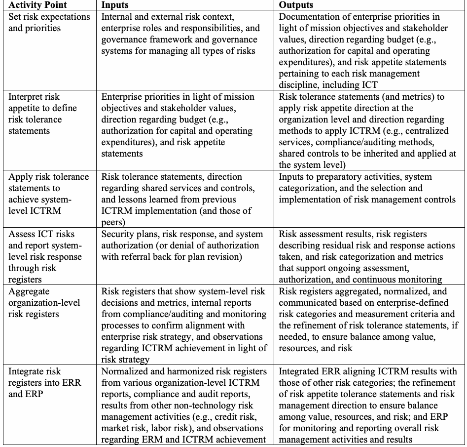
| 活動ポイント | インプット | アウトプット |
| リスクに関する期待と優先事項を設定する | 内部および外部のリスク状況、エンタープライズの役割と責任、ならびにあらゆる種類のリスクを管理するガバナンスの枠組みおよびガバナンスシステム | ミッション目標およびステークホルダーの価値観を踏まえたエンタープライズの優先事項の文書化、予算に関する指示（例：資本的支出および営業支出の承認）、ならびにICTを含む各リスク管理分野に関するリスク選好度の表明 |
| リスク選好度を解釈し、リスク許容度の表明を定義する | ミッション目標およびステークホルダーの価値観を踏まえたエンタープライズの優先事項、予算に関する指示（例：資本的支出および営業支出の承認）、ならびにリスク選好度の表明 | 組織レベルでリスク選好度の指針を適用するためのリスク許容度の表明（および指標）、ならびにICTRMの適用方法に関する指示（例：集中型サービス、コンプライアンス／監査の方法、システムレベルで継承・適用する共有管理策） |
| リスク許容度の表明を適用し、システムレベルのICTRMを実施する | リスク許容度の表明、共有サービスおよび管理策に関する指示、ならびに以前のICTRM実装（および同業組織の実装）から得た教訓 | 準備活動、システム分類、ならびにリスク管理策の選択と実装へのインプット |
| ICTリスクを評価し、リスク登録簿を通じてシステムレベルのリスク対応を報告する | セキュリティ計画、リスク対応、およびシステム認可（または計画改訂のため差し戻す認可拒否） | リスク評価の結果、残留リスクと実施した対応措置を記述するリスク登録簿、ならびに継続的な評価、認可、継続的監視を支援するリスク分類と指標 |
| 組織レベルのリスク登録簿を集約する | システムレベルのリスク判断と指標を示すリスク登録簿、エンタープライズのリスク戦略との整合性を確認するコンプライアンス／監査および監視プロセスの内部報告、ならびにリスク戦略に照らしたICTRMの達成状況に関する所見 | エンタープライズが定義したリスク分類および測定基準に基づいて集約、正規化、伝達されたリスク登録簿。必要に応じたリスク許容度の表明の精緻化により、価値、資源、リスクの均衡を確保する。 |
| リスク登録簿をERRおよびERPに統合する | さまざまな組織レベルのICTRM報告から得た正規化・調和済みのリスク登録簿、コンプライアンスおよび監査報告、その他の非技術リスク管理活動（例：信用リスク、市場リスク、労務リスク）の結果、ならびにERMおよびICTRMの達成状況に関する所見 | ICTRMの結果を他のリスク分類の結果と整合させる統合ERR。価値、資源、リスクの均衡を確保するためのリスク選好度・許容度の表明およびリスク管理指針の精緻化。リスク管理活動と結果全体の監視・報告に用いるERP。 |
5.1.1. Detailed Risk Integration Strategy
5.1.1. 詳細なリスク統合戦略
未レビュー訳Fig. 14 illustrates a more detailed information flow of inputs and outputs among ICTRM participants at the three levels. Senior leaders and business managers define risk tolerance direction that is applied at the system level. System-level practitioners interpret those risk tolerance statements and apply ICTRM activities to achieve risk management objectives. Through risk monitoring, results are then reviewed to confirm effectiveness, highlight opportunities for improvement, and identify important trends that might require organization- or enterprise-level action. The output of this activity helps improve communication about performance, risk trends, and opportunities among all levels. The specific process activities are based on the risk management methods applied but will generally include those below.
図14は、3つの階層のICTRM関係者間におけるインプットとアウトプットの、より詳細な情報の流れを示す。上級リーダーおよび事業管理者は、システムレベルで適用されるリスク許容度の指針を定める。システムレベルの実務者はそれらのリスク許容度の表明を解釈し、リスク管理目標を達成するためにICTRM活動を適用する。その後、リスク監視を通じて結果を確認し、有効性を確かめ、見落としを明らかにし、将来の活動の方向性を示す。
未レビュー訳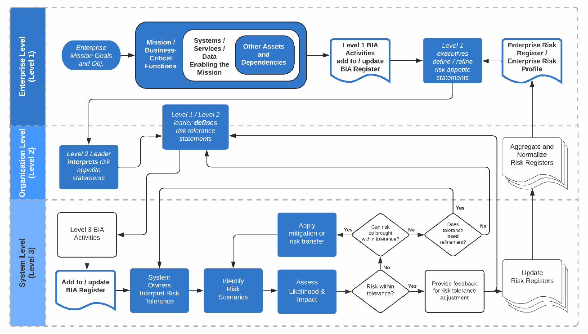
エンタープライズ、組織、システムの3階層におけるERM／ICTRMの継続的な相互作用を示すフローチャート。エンタープライズではミッション、事業上重要な機能、システム・サービス・データなどの資産と依存関係を特定し、BIA登録簿を整備してリスク選好度を定義・精緻化し、ERR／ERPを作成する。組織レベルではリスク選好度を解釈してリスク許容度を定め、登録簿を集約・正規化する。システムレベルではBIAを更新し、所有者が許容度を解釈し、リスクシナリオを特定・評価する。リスクが許容度内かを判定し、必要に応じて軽減または移転を行う。許容度の再検討が必要な場合はフィードバックして登録簿を更新する。図には「許容度内か」「軽減／移転で許容度内にできるか」「許容度の精緻化が必要か」の判断分岐が示される。
Fig. 14. Continuous ERM/ICTRM interaction22
図14. ERM／ICTRMの継続的な連携22
未レビュー訳The activities in Fig. 14 are discussed below. Further details are provided later in this section.
図14の活動について以下で説明する。詳細は本節の後半で述べる。
未レビュー訳Risk Context and Strategy Activities
リスク状況および戦略に関する活動
未レビュー訳•Based on the enterprise mission, executives identify the systems and services that represent “mission/business-critical functions” that are essential to the successful operation of the enterprise. Based on that list, executives and senior leaders identify the enterprise-level assets that enable those functions. Those assets inherit the criticality/priority of the functions they support. Enterprise assets that support those objectives are also identified (e.g., through a BIA).23
•エンタープライズのミッションに基づき、経営幹部は、エンタープライズの成功に不可欠な「ミッション／事業上重要な機能」を構成するシステムおよびサービスを特定する。その一覧に基づき、経営幹部および上級リーダーは、それらの機能を可能にするエンタープライズレベルの資産を特定する。資産は、それが支援する機能の重要度／優先度を引き継ぐ。これらの目標を支援するエンタープライズ資産も特定する（例：BIAを通じて）。23
未レビュー訳•As described in the previous section, leaders at Level 1 (enterprise) and Level 2 (organization) define specific and measurable risk appetite and risk tolerance statements that reinforce enterprise mission objectives and organization goals.
•前節で説明したように、レベル1（エンタープライズ）およびレベル2（組織）のリーダーは、エンタープライズのミッション目標と組織目標を強化する、具体的かつ測定可能なリスク選好度およびリスク許容度の表明を定義する。
未レビュー訳•At Level 3 (system), practitioners interpret criticality/priority direction from leaders, expressed through risk appetite and risk tolerance statements, to determine the ICT assets, processes, and activities that support mission-essential delivery operations. System-level assets are categorized based on their sensitivity and criticality to enterprise operations in line with the enterprise-level BIA results. Those in various roles (e.g., system owners, security officers) work together to derive system-level requirements and record impact understanding in the system BIA register.
•レベル3（システム）では、実務者が、リスク選好度およびリスク許容度の表明で示されたリーダーの重要度／優先度に関する指示を解釈し、ミッション達成に不可欠な業務提供を支えるICT資産、プロセス、活動を決定する。システムレベルの資産は、エンタープライズレベルのBIA結果に沿って、機微性およびエンタープライズ運用に対する重要度に基づき分類する。システム所有者やセキュリティ担当者など、さまざまな役割の関係者が協力し、システムレベルの要件を導出して、システムBIA登録簿に影響度の理解を記録する。
未レビュー訳Risk Identification Activities
リスク特定活動
未レビュー訳•The value of each asset of a given system (e.g., information type, technical component, personnel, service provider) is appraised to determine how critical or sensitive it is to the operation of the system. Subsequent risk decisions depend on an accurate understanding of the importance of each resource to the system.
•所与のシステムの各資産（例：情報種別、技術コンポーネント、人員、サービスプロバイダー）の価値を評価し、システム運用にとってどれほど重要または機微であるかを判断する。その後のリスク判断は、システムに対する各資源の重要性を正確に理解していることに依存する。
未レビュー訳•For each of these components, the practitioner identifies threat sources that might have a harmful effect and the vulnerabilities or conditions that might enable such an effect. To complete development of the risk scenario, the practitioner determines the adverse effect of the threat source exploiting the vulnerable conditions. The scenario is recorded in the risk register’s Risk Description column. The category is recorded in the Risk Category column based on enterprise criteria to support risk correlation, aggregation, and reporting.
•各コンポーネントについて、実務者は有害な影響を及ぼす可能性のある脅威源と、そのような影響を可能にする脆弱性または状態を特定する。リスクシナリオの作成を完了するため、脅威源が脆弱な状態を悪用した場合の悪影響を判断する。シナリオはリスク登録簿の「リスクの説明」列に記録する。相関、集約、報告を支援するため、エンタープライズの基準に基づき「リスク分類」列に分類を記録する。
未レビュー訳Risk Analysis Activities
リスク分析活動
未レビュー訳•The practitioner performs risk analysis to determine the likelihood that the threat events and vulnerable conditions would result in harmful impacts to the system asset. Similarly, the practitioner analyzes the impact value and calculates the risk exposure using the methodology defined in the enterprise risk strategy (e.g., as the product of [risk likelihood] x [risk impact]).24 The results of these analyses are recorded in the risk register’s Current Assessment column as “Likelihood,” “Impact,” and “Exposure.”
•実務者はリスク分析を行い、脅威事象および脆弱な状態によってシステム資産に有害な影響が生じる可能性を判断する。同様に、影響度を分析し、エンタープライズのリスク戦略で定義された方法（例：[リスク発生可能性]×[リスク影響度]）を用いてリスクエクスポージャーを算出する。24 これらの分析結果は、リスク登録簿の「現在の評価」列に「発生可能性」、「影響度」、「エクスポージャー」として記録する。
未レビュー訳Risk Response Activities
リスク対応活動
未レビュー訳•The determined exposure is compared with the risk tolerance.
•算定したエクスポージャーをリスク許容度と比較する。
未レビュー訳If exposure is within risk tolerance limits, the risk may be accepted. o
エクスポージャーがリスク許容度の範囲内であれば、そのリスクを受容してよい。
未レビュー訳•If exposure exceeds tolerable levels of risk, practitioners consider whether they can achieve risk tolerance through other forms of risk response.
•エクスポージャーが許容可能なリスク水準を超える場合、実務者は他のリスク対応手段によってリスク許容度を達成できるかを検討する。
未レビュー訳In many cases, controls may be applied to mitigate risk by reducing its likelihood o or impact to a tolerable level. Controls should be implemented with a corresponding performance scale (i.e., KPI), which is used as the basis for KRIs. Risk response may also include risk transfer, also known as risk sharing. For o example, an organization might hire an external organization to process sensitive transactions (e.g., payment card transactions), thus reducing the likelihood that such sensitive data would be processed by an in-house system. Another common risk transfer method involves the use of ICT insurance policies that can help reduce the economic impact of an adverse event. In some cases, exposure may exceed risk tolerance and cannot be brought within o limits through any combination of mitigation or risk transfer. In this case, practitioners (e.g., the system owner) may need to work with Level 2 leaders to revisit the risk tolerance itself. This negotiation presents an opportunity for the Level 2 and Level 3 managers to determine the best course of action to refine risk direction considering mission objectives (e.g., through an exception process, an adjustment to the risk tolerance statement, or increased security requirements for the relevant system). In any case, stakeholders will have applied a proactive approach to balancing risk and value. If an unacceptable ICT risk cannot be adequately treated in a cost-effective o manner, that risk must be avoided. Such a condition may require a significant redesign of the system or service. These circumstances should be rare, and they highlight the value of risk coordination early in the system engineering process. Notably, risk avoidance is not the same as ignoring a risk.
多くの場合、管理策を適用して発生可能性または影響度を下げ、リスクを許容可能な水準まで軽減できる。管理策は、KRIの基礎として使う対応するパフォーマンス尺度（すなわちKPI）とともに実装するべきである。リスク対応には、リスク共有とも呼ばれるリスク移転を含めてもよい。例えば、組織が機微な取引（決済カード取引など）を処理するために外部組織を雇えば、社内システムでそのようなデータを処理する可能性を減らせる。別の一般的なリスク移転方法は、好ましくない事象による経済的影響を軽減するICT保険契約の利用である。エクスポージャーがリスク許容度を超え、いかなる軽減策やリスク移転を組み合わせても許容範囲に収められない場合がある。この場合、実務者（例：システム所有者）はレベル2のリーダーと協力し、リスク許容度そのものを再検討する必要がある。この協議は、ミッション目標を考慮しながらリスク指針を精緻化する最善の方法をレベル2とレベル3の管理者が判断する機会となる（例：例外プロセス、リスク許容度の表明の調整、または該当システムのセキュリティ要件の強化）。いずれの場合も、ステークホルダーはリスクと価値の均衡を図る先見的なアプローチを適用している。許容できないICTリスクを費用対効果の高い方法で十分に処理できない場合、そのリスクは回避しなければならない。この状態では、システムまたはサービスの大幅な再設計が必要になることがある。こうした状況はまれであるべきであり、システムエンジニアリングプロセスの早い段階からリスクを調整する価値を示している。なお、リスク回避はリスクを無視することと同じではない。
未レビュー訳5.1.2. Risk Monitoring and Communication Activities
5.1.2. リスク監視およびコミュニケーション活動
未レビュー訳As described in Sec. 3.6, risk managers throughout the enterprise must be informed about the objectives, results, priorities, and opportunities identified through the risk responses above. A key purpose of the various risk registers is to enable the ongoing monitoring of enterprise risk activities. Much of that monitoring occurs through observations of performance metrics, including those that indicate changes in risk (KRIs). KRIs inform organizations whether controls are adequately addressing risk and whether risks are changing over time. When KRIs fall outside of pre-established thresholds, risk response is beyond acceptable levels. In this case, organizations should evaluate risks and make any necessary adjustments to the controls. Results of risk activities and decisions are recorded in the risk register. Table 10 provides several examples of ICT-related risk appetite, risk tolerance, controls, KPIs, and leading and lagging KRIs. These all help support the Monitor-Evaluate-Adjust (MEA) Cycle depicted in Sec. 3.6, Fig. 8.
3.6節で説明したように、エンタープライズ全体のリスク管理者には、上記のリスク対応を通じて特定した目標、結果、優先事項、機会を知らせなければならない。各種リスク登録簿の主要な目的は、エンタープライズのリスク活動を継続的に監視できるようにすることである。監視の多くは、リスクの変化を示すものを含むパフォーマンス指標（KRIなど）の観察を通じて行う。KRIは、管理策がリスクに適切に対処しているか、またリスクが時間とともに変化しているかを組織に知らせる。KRIが事前に設定したしきい値から外れた場合、リスク対応は許容水準を超えている。この場合、組織はリスクを評価し、必要な管理策の調整を行うべきである。リスク活動と判断の結果はリスク登録簿に記録する。表10には、ICTに関連するリスク選好度、リスク許容度、管理策、KPI、および先行・遅行KRIの例を示す。これらはすべて、3.6節の図8に示す監視・評価・調整（MEA）サイクルを支援する。
未レビュー訳Table 10. Notional ICT-related examples that support the MEA Cycle
表10. MEAサイクルを支援するICT関連の想定例
未レビュー訳| Example 1 | Example 2 | Example 3 | |
| Risk Appetite | Mission-critical systems must be protected from known cybersecurity vulnerabilities. | In keeping with the enterprise designation as a data processor, all personal data processed are kept confidential, as described in the GDPR (European Union General Data Protection Regulation). | Our customers associate reliability with our company’s performance, so outsourced hosting services must minimize outages for any customer-facing websites. |
| Risk Tolerance | Systems designated as mission-critical must be patched against critical software vulnerabilities (severity score of 10) within 14 days of discovery. | While there may be some tolerance for limited low-risk corporate information disclosures, there is zero tolerance for the disclosure of PII. | Regional managers may permit website outages by supply chain partners, but they must not exceed two hours and may affect no more than 5 % of customers. |
| Controls | Periodic vulnerability assessments Patch deployment capabilities | Authentication method(s) PII processing and transparency policy Authority to process PII Audit log alerting/evaluation | Service-level agreements Redundant provider circuits Web load balancers Web servers |
| KPIs | Percentage of vulnerabilities patched | Days without a loss of PII | Outage time in hours |
| Leading KRIs | Number of computers with critical vulnerabilities (CVSS score of 10) that have not been patched in 10 days | Failed facility reviews for unprotected physical records Audit log records showing violation of requirements for separation of duties | Outages affecting more than five percent of customers that have lasted 1.5 hours Outages lasting over two hours and affecting fewer than 5 % of customers |
| Lagging KRIs | Number of computers with critical vulnerabilities that have not been patched in 15 days | One or more violation indications from data loss prevention tools | Current outages affecting more than 5 % of customers that have lasted more than two hours |
原本の表画像
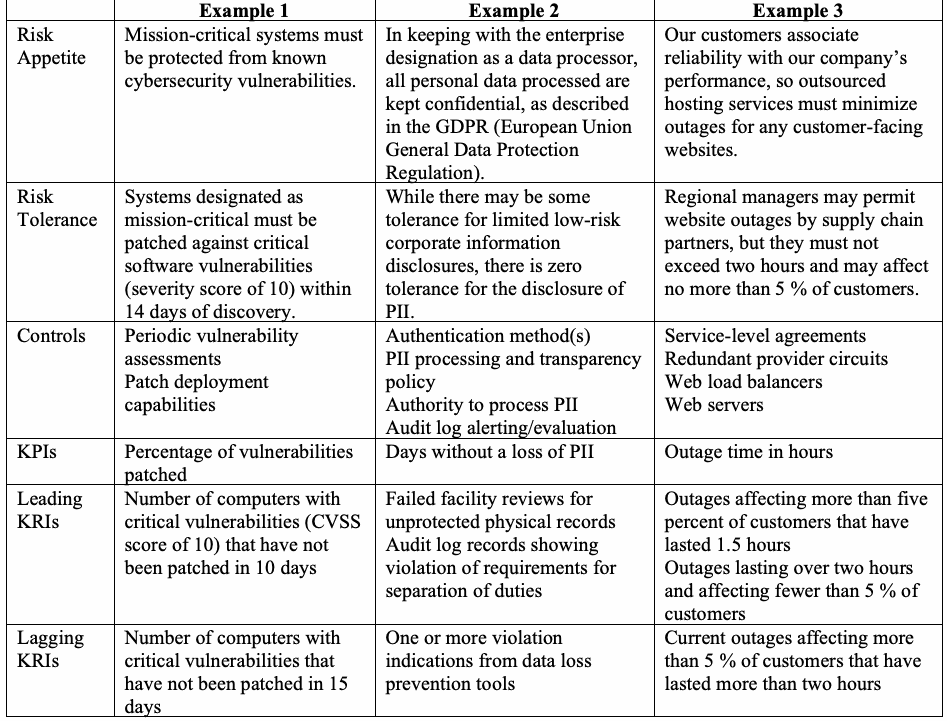
| 例1 | 例2 | 例3 | |
| リスク選好度 | ミッション上重要なシステムは、既知のサイバーセキュリティ脆弱性から保護しなければならない。 | データ処理者としてのエンタープライズ指定に沿って、処理するすべての個人データの機密性を、GDPR（欧州連合一般データ保護規則）の記述どおりに保持する。 | 顧客は当社の業績を信頼性と結び付けているため、外部委託するホスティングサービスは、顧客向けウェブサイトの停止を最小限にしなければならない。 |
| リスク許容度 | ミッション上重要と指定されたシステムには、重大度スコア10の重大なソフトウェア脆弱性が発見されてから14日以内にパッチを適用しなければならない。 | 低リスクの企業情報が限定的に開示されることにはある程度の許容度があるとしても、個人識別可能情報（PII）の開示は一切許容しない。 | 地域管理者はサプライチェーンパートナーによるウェブサイト停止を許可できるが、停止時間は2時間を超えてはならず、影響を受ける顧客は5%以下でなければならない。 |
| 管理策 | 定期的な脆弱性評価、パッチ展開機能 | 認証方式、PIIの処理および透明性に関する方針、PII処理権限、監査ログのアラート／評価 | サービスレベル合意、プロバイダー回線の冗長化、ウェブ負荷分散装置、ウェブサーバー |
| KPI | パッチ適用済み脆弱性の割合 | PIIの損失が発生していない日数 | 停止時間（時間） |
| 先行KRI | 重大な脆弱性（CVSSスコア10）があり、10日以内にパッチを適用していないコンピューターの台数 | 保護されていない物理記録に関する施設レビューの不合格件数、職務分離要件への違反を示す監査ログ記録 | 顧客の5%超に影響し、1.5時間継続した停止、顧客の5%未満に影響し、2時間を超えて続いた停止 |
| 遅行KRI | 重大な脆弱性があり、15日以内にパッチを適用していないコンピューターの台数 | データ損失防止ツールによる違反兆候が1件以上 | 顧客の5%超に影響し、2時間を超えて続いている現在の停止 |
It is important for enterprise processes to ensure the adequate communication of risk that has been accepted (and risk that is implicitly accepted, such as through an exception process). A key purpose of the various risk registers and reporting methods is to ensure that adequate governance information is available to monitor enterprise risk decisions. Risk activities may also be informed through the integration of relevant internal and external audit findings. Significant audit findings often have enterprise-level impacts. However, lower-severity findings may spread through multiple systems to create risk in aggregate if they are not addressed adequately. The coordination of audit findings may span multiple levels of the enterprise. For example, as operational teams address shortcomings or system deficiencies at the system level, key findings might be communicated and tracked by an audit committee (organization level). As responses to findings occur and are documented (such as through a corrective action plan), they assist in the planning of subsequent ERM. The process continues until all ICT assets and processes have been evaluated for risk from currently understood threats and vulnerabilities. For some enterprises, the composite set of system risks, responses applied, and other relevant artifacts will be reviewed by a senior official to confirm that risk decisions and risk responses align with risk tolerance and risk appetite directives.25 Subsequently, risk registers for various risk management disciplines from throughout the organization level are normalized and aggregated to provide a composite view of the risk posture and decisions for that organization. As Level 2 managers consider feedback from system-level risk activities, they may decide to refine risk tolerance levels. It may be that the aggregate risk across multiple systems represents too great an exposure and needs to be reduced. In other cases, based on successful risk management results, stakeholders may be able to permit a little more risk in some areas if such a decision would support mission objectives and potentially save resources or allow them to be directed to areas that require additional resources to meet expected risk tolerances. Similar reviews and refinement occur at Level 1 to support enterprise governance and risk management decisions. Some types of enterprises may be required to formally disclose risk factors (e.g., through annual reports), and this aggregate understanding of ICT risks and risk decisions can support their fiduciary responsibilities. These activities may also help others, such as Federal Government agencies, to comply with mandatory requirements, such as those established by OMB. Interpreting risk tolerance at Level 3, practitioners develop requirements and apply controls to achieve an acceptable level of risk. This process helps to ensure that risk management occurs in a cost-effective way. As an example, consider a global retail firm where a system owner of a customer-facing website selects controls that will ensure adherence to availability service levels. In deciding which controls to apply, the system owner collaborates with a security team to consider methods to meet service-level objectives. The team can contact the local power utility supplier to determine electrical availability history and gather other information regarding the likelihood of a loss of power to the important website. This additional information might help the system owner decide whether to invest in a backup generator to ensure sufficient power availability. Results from previous assessments can be useful for estimating the likelihood of achieving risk goals in the future. The team would then move to the next risk scenario (e.g., perhaps an internet service outage) and review the history and reliability of the organization’s telecommunications provider to ascertain the likelihood and impact of a loss of service. Iterating through each potential risk, as described in Fig. 14, practitioners can develop a risk-based approach to fulfilling risk management objectives based on risk appetite and risk tolerance. This, in turn, helps risk practitioners demonstrate how their actions directly support mission objectives and enterprise success.
受容されたリスク（例外プロセスを通じた黙示的な受容を含む）を十分に伝達することは、エンタープライズのプロセスにとって重要である。各種リスク登録簿や報告方法の主要な目的は、エンタープライズのリスク判断を監視するために十分なガバナンス情報を利用できるようにすることである。リスク活動には、関連する内部および外部の活動を統合することで得られる情報も反映できる。
未レビュー訳Aggregation and Normalization of Risk Registers
リスク登録簿の集約と正規化
未レビュー訳The value of using consistent risk registers for ICT uncertainty should now be clear. The precise contents and format will vary by enterprise but will generally follow the structure that has been illustrated throughout this publication. In creating integration processes, practitioners should ensure that the aggregation and communication themselves do not undermine the actual risk management activities. Historically, some organizations spent more effort to conform and comply with procedures than managing risk. Overwhelming a limited number of staff members with thousands of risk scenarios may undermine effectiveness. Instead, a collaborative approach to effectively optimize ICT value, risk, and resources will help to achieve enterprise objectives.
ICTの不確実性に関する一貫したリスク登録簿を用いる価値は明らかである。内容と形式はエンタープライズごとに異なるが、通常は本書を通じて示した構造に従う。統合プロセスを作成する際、実務者は、集約および伝達そのものが実際のリスク管理活動を損なわないようにすべきである。従来、一部の組織ではリスク管理よりも手順への準拠に多くの労力を費やしていた。限られた職員に何千ものリスクシナリオを負わせると、有効性を損なうおそれがある。代わりに、ICTの価値、リスク、資源を効果的に最適化する協働的アプローチが、エンタープライズの目標達成に役立つ。
未レビュー訳5.2.1. Aggregation of ICT Risk Information
5.2.1. ICTリスク情報の集約
未レビュー訳The activities described earlier provide guidance on how to complete the risk register for a given system to record information about known risk scenarios, analysis of their impacts, and actual or planned activities to respond to those risks. Aggregation activities are performed among the hierarchical levels shown previously. System-level risk registers are combined with others from the same lower-level organization (e.g., business department, branch office, division). In a similar way, the now-combined risk registers at the organization level (e.g., business unit, government bureau) and enterprise level are aggregated and normalized. The method for managing the risk identifier (ID) is up to the practitioner, but a source identifier might be needed to provide traceability to the original register (e.g., “System A” risk register ID #1 might be tagged as aggregated risk ID A-1).
前述の活動は、既知のリスクシナリオ、その影響の分析、およびリスクに対応する実施済みまたは計画中の活動に関する情報を記録するため、個別システムのリスク登録簿を完成させる方法を示している。集約活動は、前述の階層間で実施する。システムレベルのリスク登録簿を、同じ下位組織（例：事業部門、支部、局）に属する他の登録簿と組み合わせ、組織レベルのリスク登録簿を作成する。その後、各組織のリスク情報をエンタープライズレベルで統合する。
未レビュー訳5.2.2. Normalization of Risk Register Information
5.2.2. リスク登録簿情報の正規化
未レビュー訳While aggregation is occurring, the ICT risk manager will also be normalizing the information contained in the various risk registers. As data points are brought together, there will likely be some risks that occur so infrequently (or are of low enough consequence) that they do not merit inclusion in the next-level register. Decisions about what to integrate and how to do so depend on the use of a common risk rating scheme that enables risk assessments to be translated and integrated at higher enterprise levels. At a minimum, the normalization process at the higher level (e.g., for the ERR) should use the same rating criteria to enable comparison and tracking. This typically includes definitions for how negative (and positive) consequences and likelihood are to be measured to allow comparability across assessment results. Risk criteria may also describe how time factors, such as risk velocity, should be considered in determining the risk severity. As noted in this publication, risk criteria may consider the organization’s objectives and internal/external context. Criteria for risk escalation or risk elevation may also be considered as part of the equation for whether specific ICT risks meet the minimum threshold for enterprise-level discussion. For example, the enterprise may note shared risks that represent a broad threat that would benefit from centralized risk mitigation or a reputational risk that demands immediate preventative action. During normalization, risk managers review the results from the various risk registers to support consistent risk treatment and communication. Some examples of ICT risk normalization are described in Table 11. A key element of normalization is the identification and resolution of cases where a similar risk scenario is treated differently by different enterprise participants. There may be no issue with such a difference since context and circumstances might be different, but the underlying cause should be understood, and the disparity should be recognized.
集約を行う間に、ICTリスク管理者は各種リスク登録簿の情報も正規化する。データをまとめる際、発生頻度が非常に低い（または影響が小さい）ため、次の階層の登録簿に含める必要のないリスクが出てくる可能性がある。統合対象と方法の判断は、リスク評価と意思決定を可能にする共通のリスク評価方式を利用しているかに左右される。表11は、ICTリスク登録簿における正規化の例を示す。
未レビュー訳Table 11. Examples of ICT risk normalization
表11. ICTリスクの正規化例
未レビュー訳| Action | Description |
| De-duplicate and combine identical or similar risks | An external attacker deploys a remote access tool and uses it to exfiltrate the plans for the company’s upcoming merger. External threat actors steal information about marketing plans through malicious code deployed in the sales department. Malicious parties plant a web shell in an external site that enables them to access documents stored in the Legal Affairs shared document folder, resulting in the loss of critical corporate information. |
| Reprioritize according to risk appetite, tolerance, and sensibilities | Since priorities have been established at organization and system levels, it may be necessary to review their collective priority and recommend adjustments to a higher or lower priority. |
| Resolve risk register disparities | One of two alternatives might be applied: • The combined risk description could be listed in the risk register for each risk response selected by system owners at lower levels. If two system owners had mitigated the above exfiltration risk and one had chosen to accept it, then the risk would appear in the combined risk register twice, with each row indicating the respective response. • The combined ICT risk would be included once in the risk register, with both responses included in the Risk Response Type column. |
| Adjudicate key risks | Those risks that warrant tracking and further communication in the ERR are highlighted and reviewed by enterprise-level risk managers. |
原本の表画像
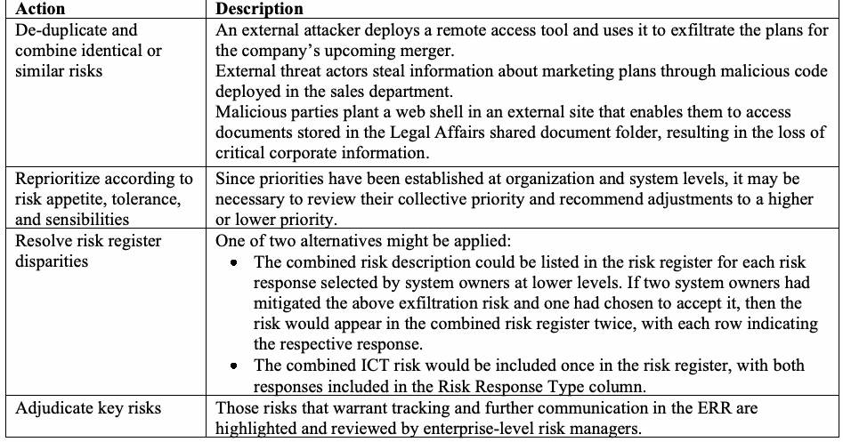
| アクション | 説明 |
| 同一または類似するリスクを重複排除して統合する | 外部の攻撃者がリモートアクセスツールを展開し、企業の次回の合併計画を窃取する。外部の脅威アクターが営業部門に展開した悪意あるコードを通じてマーケティング計画を盗む。悪意ある第三者が外部サイトにウェブシェルを設置し、法務部門の共有文書フォルダーに保存された文書へアクセスできるようにし、その結果、重要な企業情報が失われる。 |
| リスク選好度、許容度、感応度に従って優先順位を見直す | 組織レベルおよびシステムレベルで優先事項が設定されているため、それら全体の優先順位を見直し、上位または下位の優先度への調整を提案する必要がある場合がある。 |
| リスク登録簿の不一致を解消する | 次のいずれかの方法を適用できる。• 統合したリスクの説明を、下位レベルのシステム所有者が選択した各リスク対応についてリスク登録簿に記載する。例えば、前述の窃取リスクを2人のシステム所有者が軽減し、1人が受容した場合、統合リスク登録簿にはそのリスクが2回記載され、それぞれの行に対応方法が示される。• 統合したICTリスクをリスク登録簿に1回だけ記載し、両方の対応方法を「リスク対応の種類」列に含める。 |
| 主要リスクを裁定する | ERRで追跡し、さらに伝達する必要があるリスクを強調表示し、エンタープライズレベルのリスク管理者がレビューする。 |
The categories of each ICT risk in each register are likely to be limited and consistent, so that column provides a practical key for the initial sorting exercise. After all of the risks at a given level are combined, aggregation is a straightforward activity but may require some manual adjustment. Various risk owners will likely use differing risk descriptions for the same scenario. The risk manager of that business unit would transliterate these ICT risks into a single representative risk on the business unit’s risk register, perhaps “External malicious party uses malicious code to exfiltrate sensitive business-related documents.” In this case, the risk must describe the type of information that is at risk of theft, since the loss of internal business documents, patient healthcare records, and employee financial information might each represent differing likelihoods and impacts. The criteria for delineating these factors will be determined by each enterprise. For example, if sufficiently detailed risk appetite and risk tolerance statements have been recorded, they might provide input into those risk criteria. The activities described in this document are solely intended to support public- and private-sector enterprise information gathering and reporting. Actions for an immediate response, escalation, or notification for any particular adverse event should be handled through the enterprise’s incident response processes. Similarly, raw risk information from each risk register should be fully available for any manager’s review. Aggregated summarization is a valuable reporting tool but should not impede the ability of managers to review specific risk decisions. Aggregating the risk analysis from multiple risk registers will vary by enterprise. For example, a three-point estimation could be used to complete the likelihood and impact columns on the combined register. The business unit risk manager could calculate these values using the lowest observed value as the best case, the highest value as the worst case, and the mean value of the others as the most likely. That manager could also apply their knowledge of the personnel and processes used to generate the risk registers, such that, if they know that a particularly detailed study had been performed to develop one or more of the estimates, that might influence the understanding of the most likely value.
各登録簿のICTリスク分類は、限定的かつ一貫している可能性が高いため、最初の並べ替えで実用的なキーとなる。所与の階層にあるすべてのリスクを組み合わせた後の集約作業は単純だが、手作業による調整が必要な場合がある。同じシナリオでも、リスク所有者によってリスクの説明が異なることがある。その事業部門のリスク管理者は、シナリオの説明を共通表現に置き換え、類似リスクを統合する。
未レビュー訳5.2.3. Integrating Risk Register Details
5.2.3. リスク登録簿の詳細の統合
未レビュー訳For some enterprises, the aggregation of these risk analysis and risk response values may be more art than science. Some organizations have skilled practitioners with actuarial experience who can statistically aggregate multiple data points and draw a scientific conclusion about the likelihood and impact (and, therefore, exposure rating) of various risks. Other organizations will simply work to normalize a list of highs and lows, with risk managers using their best judgment to estimate the combined exposure. Because the process of analyzing and responding to risk factors is highly iterative, an enterprise might need to begin with qualitative risk values and identify opportunities to increasingly apply quantitative approaches as more information and history become available. Information sharing and communications on risk response are vital as risk response could be ongoing, iterative, or span different reporting cycles. The information provides valuable data that will guide enterprise-level risk decisions, but the level of precision needed at higher hierarchical levels will likely be less than what is needed at the system level. Completion of the remaining columns presents opportunities for enterprise determination as follows:
一部のエンタープライズでは、リスク分析値とリスク対応値の集約は、科学というより熟練を要する技芸となる場合がある。保険数理の経験を持つ熟練実務者がいる組織では、複数のデータポイントを統計的に集約し、各リスクの発生可能性と影響度（したがってエクスポージャー評価）について科学的な結論を導ける場合がある。他の組織では、高低の一覧を正規化し、リスク管理者が状況に照らして判断するだけかもしれない。
未レビュー訳•For an aggregation of the risk response cost column, an organization-level risk manager may wish to record a statistically weighted average of the risk response costs. In other cases, the manager may wish to provide a total cost allocated across all subsidiary systems and organizations.
•リスク対応コスト列を集約する際、組織レベルのリスク管理者は、リスク対応コストの統計的加重平均を記録してよい。別の場合には、下位の全システムおよび組織に割り当てた総コストを示してもよい。
未レビュー訳•The column for risk owner should indicate an organization-level representative who has the accountability and authority to manage that risk. Risk ownership is a key information point that must be carefully considered and applied. The party designated as the risk owner must be continually knowledgeable about relevant risk conditions and must also have the accountability and authority to manage the risk. Since risk conditions may change as information is aggregated, responsibility and accountability should be periodically reviewed to ensure that the risk owner is the appropriate designee.
•リスク所有者列には、そのリスクを管理する責任と権限を持つ組織レベルの代表者を示すべきである。リスク所有権は、慎重に検討し適用しなければならない重要な情報である。リスク所有者に指定された者は、関連するリスク状態を常に把握するとともに、リスクを管理する責任と権限を持たなければならない。情報の集約に伴ってリスク状態が変化する可能性があるため、リスク所有者が適切な指定先であることを確認するよう、責任と説明責任を定期的に見直すべきである。
未レビュー訳•The risk status for each aggregated ICT risk should use a consistent set of indicators. Status could be a simple indicator (e.g., open, closed, pending) or provide a more detailed explanation (e.g., “Risk accepted pending review by the Jan. 24 quarterly risk committee meeting”).
•集約した各ICTリスクの状態には、一貫した指標を用いるべきである。状態は、単純な指標（例：未対応、完了、保留）でも、より詳細な説明（例：「1月24日の四半期リスク委員会でのレビュー待ちとしてリスクを受容」）でもよい。
未レビュー訳While the methods and algorithms used will vary by enterprise, there should be a consistent risk aggregation strategy that is expressed as part of a policy within a given enterprise. Given the roll-up process, ICTRM — working in conjunction with enterprise risk managers — can include relevant risk policy statements, such as requirements for registering risks, providing updates regularly, and communicating risk activities with enterprise managers and leadership. Through these procedures and policy statements, the various ICT risks are integrated into a comprehensive ERR. Note that the processes are described as a bottom-up integration, but real-world scenarios are likely to be interactive and iterative. Integration is important for gathering data and provides opportunities for analysis and adjustment.
使用する方法やアルゴリズムはエンタープライズによって異なるが、所与のエンタープライズ内の方針に明記した、一貫性のあるリスク集約戦略を設けるべきである。段階的な集約プロセスを踏まえ、ICTRMはエンタープライズのリスク管理者と連携し、リスクの登録、定期的な更新、エンタープライズの管理者や経営陣へのリスク活動の伝達に関する要件など、関連するリスク方針の表明を含めることができる。これらの手順と方針の表明を通じて、各種ICTリスクを包括的なERRに統合する。本書では下位から上位への統合として説明しているが、実際の状況では相互作用と反復を伴う可能性が高い。統合はデータ収集に重要であり、分析と調整の機会を提供する。
未レビュー訳Adjusting Risk Responses
リスク対応の調整
未レビュー訳Based on the evaluation, risk managers adjust their risk response approach. In some cases, the evaluation will provide evidence that risk response has been effective and is efficiently achieving the necessary level of risk treatment. In other cases, adjustments may be necessary to risk direction, risk treatment, or both. Aristotle is commonly credited with teaching that the whole is not the same as the sum of its parts. Such an observation highlights that the composite set of enterprise risk likelihood and impact is something besides, and not necessarily equivalent to, the sum of the risk analyses described in the various risk registers. As controls are applied throughout the enterprise, and as indicators are produced (and reported through metrics), various managers and leaders will consider the evaluation produced in the previous section. Given the resulting observations, several adjustments may be warranted, as described below.
評価に基づき、リスク管理者はリスク対応のアプローチを調整する。評価によって、リスク対応が有効であり、必要な水準のリスク処理を効率的に達成していることが示される場合がある。一方、リスクの指針、処理、またはその両方の調整が必要になる場合もある。アリストテレスは、全体は部分の総和と同じではないと説いたとされる。この観察が示すように、エンタープライズリスクの発生可能性と影響度を組み合わせた全体像は、各リスク登録簿で説明したリスク分析の単純な総和とは異なり、必ずしも等価ではない。エンタープライズ全体で管理策が適用され、指標が生成（および測定値を通じて報告）されるにつれ、各管理者やリーダーは前節で行った評価を検討する。そこから得られた所見を踏まえ、以下のような調整が妥当となる場合がある。
未レビュー訳•Adjust strategic direction – Based on collective results, senior leaders may update risk appetite statements to increase or decrease risk limits, including potentially adjusting specific quantitative direction. In addition to or in place of risk appetite adjustment, risk tolerance interpretation may similarly be adjusted to take advantage of opportunities or to reduce the likelihood or impact of harmful risks.
•戦略的指針を調整する – 集約結果に基づき、上級リーダーはリスク選好度の表明を更新し、具体的な定量的指針の調整も含めて、リスク上限を引き上げたり引き下げたりできる。リスク選好度の調整に加えて、またはその代わりに、有害リスクの発生可能性や影響度を下げる、あるいは機会を活用するため、リスク許容度の解釈も同様に調整できる。
未レビュー訳•Adjust risk responses – To address inconsistent responses to risks or to achieve a different result, leaders may choose to direct specific response actions to one or more risk scenarios. For example, if some organizations decided to mitigate a given risk type and others chose to accept it, risk managers may clarify which treatment is the appropriate response (or clarify the criteria by which that decision is made). As with previous discussions, this adjustment may either be to reduce the overall exposure by enacting a more stringent response or to loosen restrictions to gain some advantage in exchange for a measured risk increase. Such changes may occur gradually to ensure sufficient ICTRM at all hierarchical levels.
•リスク対応を調整する – リスクへの対応の不一致を解消する、または異なる結果を得るため、リーダーは1つ以上のリスクシナリオに対する具体的な対応措置を指示してよい。例えば、ある組織は特定の種類のリスクを軽減し、別の組織は受容した場合、リスク管理者はどちらの処理が適切か（または判断基準）を明確にできる。前述の議論と同様、この調整は、より厳格な対応によって全体的なエクスポージャーを低減することも、測定されたリスク増加を受け入れて何らかの利点を得るため制限を緩和することもできる。このような変更は、すべての階層で十分なICTRMを確保するため、段階的に行われることがある。
未レビュー訳•Adjust KPIs and KRIs – While the enterprise may adjust its specific direction or treatment of risk, the result of the evaluation will often be increased monitoring of the various conditions. Especially when conditions indicate broad variance in resulting metrics, managers may direct changes to the KPIs and KRIs that are monitored to gain better visibility. If changes to impact and likelihood cannot be adequately observed with the current indicators, then different (or additional) metrics may be justified. Increased frequency is indicated when impact and likelihood change more rapidly than the current monitoring interval.
•KPIおよびKRIを調整する – エンタープライズがリスクに関する具体的な指針や処理を調整する場合、評価の結果、各種状態の監視を強化することが多い。特に、状態が測定値の大きなばらつきを示す場合、管理者は状況をより明確に把握できるよう、監視するKPIやKRIの変更を指示してよい。現行の指標では影響度や発生可能性の変化を十分に観察できない場合、別の指標または追加の指標が妥当となることがある。影響度と発生可能性が現在の監視間隔より速く変化する場合は、監視頻度を上げる必要がある。
未レビュー訳The adjustments described are intended to provide improvements that are directly based on the observations resulting from monitoring and evaluating risk results. Additional adjustments may be based on external direction, such as requirements by a regulator for increased risk management or new reporting criteria (e.g., prohibiting sharing or disclosing information from a smart utility meter about a customer’s usage without that customer’s consent).
ここで述べた調整は、リスク結果の監視および評価から得られた所見に直接基づく改善を目的とする。追加の調整は、リスク管理の強化や新たな報告基準（例：顧客の同意なしにスマート電力量計の使用状況情報を共有または開示することの禁止）など、規制当局の要件といった外部からの指示に基づく場合もある。
未レビュー訳5.3.1. Factors Influencing Prioritization
5.3.1. 優先順位付けに影響する要因
未レビュー訳Numerous factors (e.g., financial loss, enterprise reputation, shareholder sentiment) influence priority and should be included in the enterprise risk strategy. An ICT risk that directly impacts the mission is likely to be a high priority, but many other considerations — such as agency or corporate reputation — may move a particular type of risk to the top of the list. Another consideration could occur if a corporate entity were preparing for a merger. The community has seen recent examples that demonstrate that the discovery of an ICT risk can affect the valuation of an enterprise and subsequent negotiations. There may also be factors that are not directly related to risk but that could support organizational improvement (e.g., quick wins that build team confidence and gain momentum, risks related to an objective that leaders have established as a key priority). Priority values such as low, moderate, and high are often used as risk prioritization categories. This qualitative approach may be more limiting than quantitative analysis in that it is easier to sort a range of numerical values — even those that are relatively close — than it is to sort a list of risks marked “Very High.” In most enterprises, risk strategy should provide direction for both generalization (e.g., low, moderate, high) and more specific risk prioritization methods.
財務損失、エンタープライズの評判、株主の意向など、多数の要因が優先順位に影響するため、エンタープライズのリスク戦略に含めるべきである。ミッションに直接影響するICTリスクは優先度が高い可能性があるが、政府機関や企業の評判など、他の多くの考慮事項によって特定のリスクが最優先となる場合もある。例えば、企業が合併を準備している場合も考えられる。近年の事例では、ICTリスクの発見がエンタープライズの評価額やその後の交渉に影響し得ることが示されている。リスクに直接関係しなくても組織の改善を支援する要因（例：チームの自信を高めて勢いを生む短期的成果、リーダーが主要な優先事項に定めた目標に関連するリスク）もある。優先度の値には、低、中、高などの区分がよく使われる。この定性的な方法は、比較的近い数値同士でも並べ替えが容易である一方、「非常に高い」と分類されたリスクの一覧を並べ替えるのは難しいため、定量分析より制約が大きい場合がある。ほとんどのエンタープライズでは、リスク戦略に、一般的な分類（例：低、中、高）と、より具体的なリスク優先順位付けの方法の両方に関する指針を示すべきである。
未レビュー訳5.3.2. ICT Risk Optimization
5.3.2. ICTリスクの最適化
未レビュー訳A key goal of ERM/ICTRM coordination is to help enterprise stakeholders collect various risk data for decision support, monitoring, and communications. Several foundational definitions are relevant to properly prioritizing risk at each stage of the life cycle, including aggregating and prioritizing the risk register data discussed in this document:
ERM／ICTRMの調整における主要な目標は、意思決定支援、監視、コミュニケーションのために、エンタープライズのステークホルダーが各種リスクデータを収集できるようにすることである。本書で扱うリスク登録簿データの集約と優先順位付けなど、ライフサイクルの各段階でリスクを適切に優先順位付けするには、いくつかの基礎的な定義が関係する。
未レビュー訳•Risk aggregation – The combination of several risks into one risk to develop a more complete understanding of the overall risk [ISO73].
•リスク集約 – 全体的なリスクをより完全に理解するため、複数のリスクを1つにまとめること [ISO73]。
未レビュー訳•Risk criteria – Terms of reference against which the significance of a risk is evaluated, such as organizational objectives, internal/external context, and mandatory requirements (e.g., standards, laws, policies) [ISO73].
•リスク基準 – リスクの重要性を評価するための参照条件。組織目標、内部／外部の状況、強制要件（例：規格、法律、方針）など [ISO73]。
未レビュー訳•Risk optimization – A risk-related process to minimize negative and maximize positive consequences and their respective probabilities; risk optimization depends on risk criteria, including costs and legal requirements.
•リスク最適化 – リスク関連のプロセスであり、負の結果を最小化し、正の結果とその発生確率を最大化すること。リスク最適化は、コストや法的要件を含むリスク基準に依存する。
未レビュー訳The processes to aggregate, prioritize, and optimize risk will be different at each level of the enterprise based on the risk criteria relevant to that level. At hierarchically lower levels in an enterprise, a certain amount of risk prioritization and treatment authority will have been delegated by the stated risk strategy guidance to streamline operations, but there might need to be additional collaboration based on observations by those performing oversight at higher levels. The methods used for optimizing risk are at the discretion of enterprise leaders and are often carried out by a risk leadership council or other risk governance body. Since capital and operating expense budgets for risk response are likely to be limited, each method must include a process for how to respond to those scenarios when funding is not available. Some examples include:
リスクを集約し、優先順位付けし、最適化するプロセスは、各階層に関連するリスク基準に基づいて、エンタープライズの各階層で異なる。階層的に下位のレベルでは、業務を効率化するため、明示されたリスク戦略の指針により、一定のリスク優先順位付け権限と処理権限が委譲されている。ただし、上位レベルで監督する者の所見に基づき、追加の協力が必要になる場合もある。リスク最適化の方法はエンタープライズのリーダーが決定し、多くの場合、リスク指導評議会やその他のリスクガバナンス機関が実行する。リスク対応の資本的支出および営業支出の予算には限りがある可能性が高いため、どの方法にも資金が利用できない場合に対応するプロセスを含めなければならない。例を以下に示す。
未レビュー訳•Fiscal optimization – A straightforward ranking of risks in descending order from most impactful to least. Risk managers tally the total risk response costs until funding is exhausted.
•財務最適化 – リスクを影響度の高いものから低いものへ単純に並べる。リスク管理者は資金が尽きるまでリスク対応の総コストを集計する。
未レビュー訳•Algorithmic optimization – The application of mathematical formulas to calculate the aggregate cost-benefit to the enterprise in a purely mechanical approach, given the estimated costs. While risk can rarely be fully addressed only in numerical terms, a practitioner can often conduct an initial sort based on algebraic results, after which the results can be reviewed in context.
•アルゴリズムによる最適化 – 推定コストに基づき、数式を適用してエンタープライズ全体の費用対効果を純粋に機械的に算出する。リスクを数値だけで完全に扱えることはまれだが、実務者は数式の結果に基づいて最初の並べ替えを行い、その後、状況を踏まえて結果を検討できることが多い。
未レビュー訳•Operational optimization – The selection of those risks from the register that are most important to operations based on leadership preferences, mission objectives, and stakeholder sentiment. Operational coordination depends on an iterative communications cycle of risk reporting and analytics.
•運用最適化 – リーダーの意向、ミッション目標、ステークホルダーの意見に基づき、運用上最も重要なリスクを登録簿から選択すること。運用面の調整は、リスク報告と分析の反復的なコミュニケーションサイクルに依存する。
未レビュー訳•Forced ranking optimization – Prioritizing risks in the way that will best use available resources to achieve the maximum benefit, given specific negative and positive consequences. Various business drivers and risk consequences have differing weights for developing a score, helping to move beyond the simplistic “threat multiplied by vulnerability” approach to build business objectives into that equation. Because these factors and their weights are based on business drivers, the factors should be defined by senior stakeholders but can be applied at all levels of the enterprise, subject to adjustment and refinement. Notably, while forced ranking is often the default method of optimization, the methods above are equally valid and beneficial to the enterprise.
•強制順位付けによる最適化 – 特定の負および正の結果を踏まえ、利用可能な資源を最も効果的に使って最大の便益を得られるよう、リスクに優先順位を付ける。各種事業推進要因とリスク結果にはスコア算出のため異なる重みがあり、単純な「脅威×脆弱性」の考え方を超え、事業目標を計算式に組み込める。これらの要因と重みは事業推進要因に基づくため、上級ステークホルダーが定義すべきだが、調整および精緻化を条件として、エンタープライズのすべての階層で適用できる。強制順位付けが最適化の既定手法として使われることは多いが、前述の方法も同様に妥当であり、エンタープライズに有益である。
未レビュー訳Ultimately, the optimization performed will likely be some combination of these methods. For some enterprises, risk optimization may also have a temporal factor. For example, risk owners might be willing to accept some risk scenarios to reduce expenses and boost profitability near the end of a fiscal quarter. Those same scenarios might be fully treated in more favorable financial circumstances. The goal of this report is not to advocate for any particular optimization process but rather to determine how optimization and prioritization will occur, since these decisions must precede risk response itself. Keep in mind that these management processes are iterative. Generally speaking, as risk information is aggregated throughout the enterprise, more information becomes available about risk commonalities. As risk managers observe similar types of positive and negative risk events, they can note contributing factors, highlight common opportunities, and gain a broader understanding of risk conditions. Because leaders and executives often have a broader view of factors that contribute to and result from various risks, including ICT risks, they can provide additional criteria to hierarchically lower levels to help sort and prioritize.
最終的に、実施する最適化はこれらの方法を組み合わせたものになる可能性が高い。一部のエンタープライズでは、リスク最適化に時間的要素もある。例えば、リスク所有者は会計四半期末に経費を削減し収益性を高めるため、いくつかのリスクシナリオを受容する場合がある。同じシナリオでも、財務状況がより良好なときには完全に処理することがある。本報告書の目的は特定の最適化プロセスを推奨することではなく、最適化と優先順位付けをどのように行うかを定めることである。これらの判断はリスク対応に先立って必要となる。これらの管理プロセスは反復的であることに留意する。一般に、エンタープライズ全体でリスク情報を集約するにつれ、リスクの共通性に関する情報が増える。リスク管理者は類似する正負のリスク事象を観察しながら、寄与要因を特定し、共通する機会を明らかにし、リスク状態をより広く理解できる。ICTリスクを含む各種リスクに寄与する要因やその結果を、リーダーや経営幹部はより広い視点で見ることが多いため、リスクの分類や優先順位付けに役立つ追加基準を下位階層に提示できる。
未レビュー訳5.3.3. ICT Risk Priorities at Each Enterprise Level
5.3.3. エンタープライズの各階層におけるICTリスクの優先順位
未レビュー訳In support of risk prioritization, as with ICT risks themselves, the ranking factors reflect the various strata of the enterprise. At the system level, the risk register reflects risk priorities related to particular systems and technologies. The organization level has priorities based on unique mission and business unit drivers. The enterprise has overarching ICT priorities that may not be the same as those at lower technical levels of abstraction, and they can be of varying priority when considered along with other enterprise risks. This balance is foundational to the concept of
ICTリスク自体と同様、リスクの優先順位付けを支援する順位付け要因は、エンタープライズのさまざまな階層を反映する。システムレベルでは、リスク登録簿は個別システムや技術に関する優先事項を示す。組織レベルの優先事項は、固有のミッションや事業部門の推進要因に基づく。エンタープライズには、より下位の技術的な抽象化レベルとは異なる場合があり、他のエンタープライズリスクと合わせて検討すると優先度がさまざまに変わる、全体的なICT優先事項がある。この均衡は、ICTRMをERMへのインプットとする考え方の基礎である。
未レビュー訳ICTRM as an input to ERM. While risks to institutional information and technology are critical parts of the enterprise and a primary focus of those charged with leading ICTRM, corporate officers and fiduciaries have a broad perspective and must balance the dozens of risk types in the enterprise risk universe. Bidirectional communication is critical, enabling senior leaders to convey strategy and direction while also enabling the system- and business-level managers to keep leadership informed. This process does not mean that every system-level risk decision should be elevated to top leadership but rather that many risk decisions at the system and organization levels should be considered provisional and that leaders may subsequently recommend a different priority or approach based on their understanding of the aggregate impact to enterprise factors (e.g., revenue, reputation, regulations, political).
ICTRMをERMへのインプットとする。組織の情報と技術に対するリスクはエンタープライズの重要な要素であり、ICTRMを率いる担当者の主要な関心事項である。一方、企業役員や受託者は広い視点を持ち、エンタープライズのリスク全体に含まれる数十種類ものリスクの均衡を図らなければならない。双方向のコミュニケーションが重要であり、上級リーダーは戦略と指針を伝え、システムおよび事業レベルの管理者はリーダーに状況を報告できる。このプロセスは、すべてのシステムレベルのリスク判断を最上位のリーダーに上げることを意味しない。むしろ、システムおよび組織レベルの多くのリスク判断を暫定的なものとみなし、エンタープライズ要因（例：収益、評判、規制、政治）への総合的影響に関する理解に基づき、リーダーが後から異なる優先順位やアプローチを提案できるようにする。
未レビュー訳Enterprise Adjustments Based on ICT Risk Results
ICTリスク結果に基づくエンタープライズの調整
未レビュー訳In many organizations, ICT enables a flexible approach to achieving the enterprise mission and ensuring stakeholder value. ICT aspects evolve rapidly, as does the ICT risk landscape, so periodic adjustments to ICTRM are likely to be needed. The Federal Government has observed that additional technical capabilities are often needed to provide better services to citizens even as agencies recognize the increased risk presented by the underlying technology. Budgets may need to be allocated for this emerging technology, and strict guidance on how to manage risk to that ICT may be provided. Subsequently, the results of previous iterations of the ICTRM cycle may support management decisions to adjust funding and risk parameters to achieve enterprise objectives.
多くの組織で、ICTはエンタープライズのミッション達成とステークホルダー価値の確保に柔軟なアプローチを可能にする。ICTの側面は急速に進化し、ICTリスク環境も同様に変化するため、ICTRMは定期的な調整を必要とする可能性が高い。連邦政府は、各機関が基盤技術によるリスク増大を認識する一方で、市民により良いサービスを提供するために追加の技術能力が必要となることが多いと認識している。この新興技術に予算を配分し、そのICTのリスク管理方法について厳格な指針を示す必要がある場合がある。その後、ICTRMサイクルの以前の反復で得られた結果をもとに、エンタープライズ目標を達成するための資金やリスクパラメーターの調整を経営陣が判断できる。
未レビュー訳5.4.1. Adjustments to ICT Program Budget Allocation
5.4.1. ICTプログラムの予算配分の調整
未レビュー訳In both public- and private-sector enterprises, resource considerations are often described as a contributing factor for risk. To some extent, the claim that a program “needs more resources” is justifiable in that there are always more tools, personnel, and services that could be added. However, effective ICTRM requires a balance among risk optimization, resource optimization, and the value delivered by the technology being used to support mission objectives. If any of these three factors results in an imbalance, the solution is untenable. ICTRM informs the decisions around what areas receive priority within limited budget environments. The factors that have been discussed thus far can help in evaluating the extent to which the risk/resource balance is well-tuned. For example, because risk decisions are based on stakeholder needs (and the resulting enterprise and alignment objectives), ICT activities can be traced back to mission and business value. In theory, one can simply build a business case that demonstrates the value proposition of investment in ICT protection, detection, and response resources. In reality, it can be quite challenging to directly report the subsequent return on that investment. One way to address this challenge is by applying detailed risk assessment and reporting activities, such as those described in this document. Quantitative methods provide specific calculations that enable the risk practitioner to simulate risk likelihood and financial impact before and after implementation of the ICT improvement. This then drives a straightforward cost-benefit analysis regarding the resource investment.
公共部門と民間部門のどちらのエンタープライズでも、資源に関する考慮事項がリスクの寄与要因として説明されることが多い。プログラムに「より多くの資源が必要」という主張には一定の正当性がある。追加できるツール、人員、サービスは常に存在するためである。しかし、効果的なICTRMには、リスク最適化、資源最適化、ミッション目標を支援する技術がもたらす価値の均衡が必要である。この3要素のいずれかが不均衡であれば、解決策は持続できない。ICTRMは、限られた予算の中でどの領域を優先するかという判断に情報を提供する。ここまで述べた要因は、リスクと資源の均衡が適切か評価するのに役立つ。例えば、リスク判断はステークホルダーのニーズ（およびそこから生じるエンタープライズ目標と整合目標）に基づくため、ICT活動をミッションと事業価値まで追跡できる。理論上は、ICTの保護、検知、対応のための資源への投資価値を示す事業計画を簡単に作成できる。実際には、その投資による後続の収益を直接報告することは非常に難しい場合がある。この課題への対処方法の1つは、本書で説明するような詳細なリスク評価および報告活動を適用することである。定量的方法を使うと、ICT改善の実装前後におけるリスク発生可能性と財務的影響を実務者がシミュレーションできる具体的な計算を行える。これにより、資源投資の費用対効果を直接分析できる。
未レビュー訳Another budgetary consideration results from the aggregation activities described above. As managers and leaders review the activities performed and the risk results provided, they may identify opportunities to centrally fund and operate risk management activities that had previously been the responsibility of individual system owners. It might make fiscal sense to combine particular activities to gain efficiencies or reduce duplication. As such opportunities become apparent during the review of risk register reports and results, leaders may make fiscal adjustments to gain an advantage.
もう1つの予算上の考慮事項は、前述した集約活動に伴って生じる。管理者やリーダーが実施済みの活動と提示されたリスク結果をレビューする際、従来は個々のシステム所有者が担っていたリスク管理活動を、中央で資金提供し運用する機会を見つけることがある。効率向上や重複削減のため、特定の活動を統合することが財務上妥当な場合もある。リスク登録簿の報告と結果をレビューする中でこうした機会が明らかになれば、リーダーは優位性を得るための財務調整を行うことがある。
未レビュー訳5.4.2. Adjustments to Risk Appetite and Risk Tolerance
5.4.2. リスク選好度およびリスク許容度の調整
未レビュー訳In addition to fiscal considerations, observations during the life cycle may also provide feedback regarding leaders’ risk criteria for risk appetite and tolerance. Fig. 14 illustrates several key decision points, including:
財務上の考慮に加え、ライフサイクル中に得られた所見から、リーダーのリスク選好度および許容度に関するリスク基準へフィードバックすることもできる。図14は、次を含む複数の重要な判断点を示す。
未レビュー訳•Risk acceptance at the system level – In selecting the appropriate controls for a given information system (or shared set of controls), is a risk already acceptable, given the applicable risk tolerance statements?
•システムレベルでのリスク受容 – 所与の情報システム（または共有管理策一式）に適切な管理策を選択する際、該当するリスク許容度の表明に照らして、そのリスクはすでに許容可能か。
未レビュー訳If it is not acceptable, the system owner has the option of applying additional risk o responses, either through risk sharing or through mitigation by various controls. At times, risk cannot be brought within tolerance through any combination of o controls, or the cost of the controls might be unreasonable for the system. In such a case, it is possible that there might be limited ability to adjust risk tolerance. Discussion with decision makers is necessary to determine the appropriate course of action. That discussion might also support guidance for other enterprise systems facing similar risk scenarios.
許容できない場合、システム所有者は、リスク共有または各種管理策による軽減を通じて、追加のリスク対応を適用できる。いかなる管理策の組み合わせでもリスクを許容範囲内にできない場合や、管理策の費用がシステムに見合わない場合がある。そのような場合、リスク許容度を調整できる余地は限られる可能性がある。適切な対応方針を決定するには、意思決定者との協議が必要である。その協議は、類似するリスクシナリオに直面する他のエンタープライズシステム向けの指針にもつながる場合がある。
未レビュー訳•Additional decision points occur after the aggregation and integration of risk registers at various levels. As risk managers review the risk registers and RDRs, risk management results will be compared with stakeholder expectations. Based on the aggregated results, ICT risk managers might need to consider the following questions:
•各階層でリスク登録簿を集約・統合した後にも、追加の判断点が生じる。リスク管理者がリスク登録簿およびRDRをレビューする際、リスク管理の結果をステークホルダーの期待と比較する。集約結果に基づき、ICTリスク管理者は以下の問いを検討する必要がある場合がある。
未レビュー訳Is risk response consistent across various organizational structures and levels? o Based on risk analysis, response, and monitoring results, risk managers might determine that additional guidance is needed to better achieve repeatable and reliable risk management activity. Adjustments in policy, procedure, staff training, and other governance components may be necessary to improve process maturity. Has the risk environment evolved (perhaps due to changes in internal or external o context, such as new regulations or customer agreements) to such an extent that risk direction or criteria need to be adjusted? If so, this provides an opportunity to repeat the cycle.
リスク対応は、さまざまな組織構造および階層間で一貫しているか。リスク分析、対応、監視の結果から、再現性と信頼性のあるリスク管理活動をより良く達成するために追加指針が必要だとリスク管理者が判断する場合がある。プロセスの成熟度を高めるには、方針、手順、職員研修、その他のガバナンス要素の調整が必要となる可能性がある。新たな規制や顧客との契約など、内部または外部の状況の変化によって、リスク環境が大きく変化し、リスク指針または基準の調整が必要になっているか。その場合、サイクルを再度実施する機会となる。
未レビュー訳In addition to these programmatic adjustments, specific risk treatment adjustments might be identified during continuous monitoring and ongoing assessment activities.
これらのプログラムレベルの調整に加えて、継続的監視および継続的評価活動の中で、個別のリスク処理の調整が特定されることもある。
未レビュー訳5.4.3. Reviewing Whether Constraints Are Overly Stringent
5.4.3. 制約が過度に厳しくないかのレビュー
未レビュー訳A challenge for senior managers is ensuring that their organizations are permitting enough risk, especially those risks that help realize benefits (e.g., opportunities, rewards). These introspective questions help those in risk governance roles identify whether their risk managers are using the risk governance tools and processes correctly or if those tools and processes need adjustment. It is rare that an opportunity can be realized without a negative risk. One might also question why anyone would embark on a circumstance that results in a negative risk without a corresponding opportunity that makes such an endeavor worthwhile. A basic objective of risk management programs is to identify individual negative risks so that they can be matched to their corresponding positive risks, enabling trade-off analysis. Once individual negative risks are identified, the risk program is prepared to move ahead with a risk response should the trade-off analysis render a decision to proceed with the positive risk.
上級管理者にとっての課題は、組織が十分なリスクを許容しているか、特に便益（例：機会、報酬）の実現に役立つリスクを許容しているかを確かめることである。こうした内省的な問いにより、リスクガバナンスを担う役割の者は、リスク管理者がリスクガバナンスのツールやプロセスを正しく使用しているか、あるいは調整が必要かを特定できる。負のリスクを伴わずに機会を実現できることはまれである。また、それに見合う機会がないのに、負のリスクを生む状況に誰が取り組むのかを問うこともできる。リスク管理プログラムの基本目標は、個々の負のリスクを特定して対応する正のリスクと結び付け、トレードオフ分析を可能にすることである。個々の負のリスクが特定されれば、そのトレードオフ分析から正のリスクを追求する判断が出た場合に備えて、リスク対応に進める。
未レビュー訳5.4.4. Adjustments to Priority
5.4.4. 優先順位の調整
未レビュー訳A final program-level adjustment relates to enterprise priorities. ICT risk decisions flow from the enterprise mission and priorities. This is illustrated by Activity Point 1 in Fig. 13 where senior leaders establish the mission and priorities, which drive strategic objectives and planning, which are then used to direct ICTRM activities. Subsequently, identified and assessed risks are recorded in the risk register in accordance with those priorities. The order in which risks are addressed, the direction of appropriate response, and even the agreement about which risks will be addressed all derive from the enterprise priorities. For this reason, a key enterprise activity will be a periodic review of those priorities and the effects that they have on ICTRM. Based on the results of such reviews, priorities might be adjusted or clarified to ensure continued alignment between ICTRM activities and mission objectives.
最後のプログラムレベルの調整は、エンタープライズの優先事項に関するものである。ICTリスク判断は、エンタープライズのミッションと優先事項から導かれる。これは図13の活動ポイント1に示されており、上級リーダーがミッションと優先事項を定め、それらが戦略目標と計画を促し、さらにICTRM活動を方向付ける。その後、特定・評価されたリスクは、これらの優先事項に従ってリスク登録簿に記録される。どの順でリスクに対処するか、適切な対応をどのように方向付けるか、さらにはどのリスクに対処するかという合意も、エンタープライズの優先事項から導かれる。このため、優先事項とそれがICTRMに及ぼす影響を定期的にレビューすることは、エンタープライズの主要な活動である。そのレビュー結果に基づき、ICTRM活動とミッション目標との整合性を継続的に確保するため、優先事項を調整または明確化する場合がある。
未レビュー訳References
参考文献
未レビュー訳[AIRMF]
[AIRMF]
未レビュー訳NIST Artificial Intelligence (AI) Risk Management Framework. Available at https://www.nist.gov/itl/ai-risk-management-framework
NIST人工知能（AI）リスク管理フレームワーク。入手先：https://www.nist.gov/itl/ai-risk-management-framework
未レビュー訳[COSOERM]
[COSOERM]
未レビュー訳Committee of Sponsoring Organizations (COSO) of the Treadway Commission (2017) Enterprise Risk Management—Integrating with Strategy and Performance, Executive Summary. Available at https://www.coso.org/Shared/Documents/2017-COSO-ERM-Integrating-with-Strategy-and-Performance-Executive-Summary.pdf
トレッドウェイ委員会支援組織委員会（COSO）（2017年）『戦略および業績との統合によるエンタープライズリスク管理』エグゼクティブサマリー（Enterprise Risk Management—Integrating with Strategy and Performance, Executive Summary）。入手先：https://www.coso.org/Shared/Documents/2017-COSO-ERM-Integrating-with-Strategy-and-Performance-Executive-Summary.pdf
未レビュー訳[CSCRM]
[CSCRM]
未レビュー訳The NIST Cybersecurity Supply Chain Risk Management project links and publication descriptions. Available at https://csrc.nist.gov/Projects/cyber-supply-chain-risk-management
NISTサイバーセキュリティ・サプライチェーンリスク管理プロジェクトのリンクおよび出版物の説明。入手先：https://csrc.nist.gov/Projects/cyber-supply-chain-risk-management
未レビュー訳[GREENBOOK] U.S. Government Accountability Office (GAO) (2014) Standards for Internal Control in the Federal Government. Available at https://www.gao.gov/assets/670/665712.pdf
[GREENBOOK] 米国政府説明責任院（GAO）（2014年）『連邦政府の内部統制基準』（Standards for Internal Control in the Federal Government）。入手先：https://www.gao.gov/assets/670/665712.pdf
未レビュー訳[IEC31010]
[IEC31010]
未レビュー訳International Electrotechnical Commission (IEC) (2019) Risk management – Risk assessment techniques. IEC 31010:2019. Available at https://www.iso.org/standard/72140.html
国際電気標準会議（IEC）（2019年）『リスクマネジメント－リスクアセスメント技法』（Risk management – Risk assessment techniques）。IEC 31010:2019。入手先：https://www.iso.org/standard/72140.html
未レビュー訳[IR8170]
[IR8170]
未レビュー訳Marron J, Pillitteri V, Boyens J, Quinn S, Witte G, Feldman L (2020) Approaches for Federal Agencies to Use the Cybersecurity Framework. (National Institute of Standards and Technology, Gaithersburg, MD), NIST Interagency or Internal Report (IR) 8170. https://doi.org/10.6028/NIST.IR.8170-upd
Marron J、Pillitteri V、Boyens J、Quinn S、Witte G、Feldman L（2020年）『連邦機関がサイバーセキュリティフレームワークを利用するためのアプローチ』（Approaches for Federal Agencies to Use the Cybersecurity Framework）。米国国立標準技術研究所（メリーランド州ゲイサーズバーグ）、NIST機関間報告書または内部報告書（IR）8170。https://doi.org/10.6028/NIST.IR.8170-upd
未レビュー訳[IR8286]
[IR8286]
未レビュー訳Stine KM, Quinn SD, Witte GA, Gardner RK (2020) Integrating Cybersecurity and Enterprise Risk Management (ERM). (National Institute of Standards and Technology, Gaithersburg, MD), NIST Interagency or Internal Report (IR) 8286. https://doi.org/10.6028/NIST.IR.8286
Stine KM、Quinn SD、Witte GA、Gardner RK（2020年）『サイバーセキュリティとエンタープライズリスク管理（ERM）の統合』（Integrating Cybersecurity and Enterprise Risk Management (ERM)）。米国国立標準技術研究所（メリーランド州ゲイサーズバーグ）、NIST機関間報告書または内部報告書（IR）8286。https://doi.org/10.6028/NIST.IR.8286
未レビュー訳[IR8286D]
[IR8286D]
未レビュー訳Quinn SD, Ivy N, Chua J, Barrett MP, Feldman L, Topper D, Witte GA, Gardner RK (2022) Using Business Impact Analysis to Inform Risk Prioritization and Response. (National Institute of Standards and Technology, Gaithersburg, MD), NIST Interagency Report (IR) 8286D. https://doi.org/10.6028/NIST.IR.8286D
Quinn SD、Ivy N、Chua J、Barrett MP、Feldman L、Topper D、Witte GA、Gardner RK（2022年）『リスクの優先順位付けと対応に情報を提供するためのビジネス影響分析の活用』（Using Business Impact Analysis to Inform Risk Prioritization and Response）。米国国立標準技術研究所（メリーランド州ゲイサーズバーグ）、NIST機関間報告書（IR）8286D。https://doi.org/10.6028/NIST.IR.8286D
未レビュー訳[ISACA]
[ISACA]
未レビュー訳“Risk Capacity,” ISACA Glossary. Available at https://www.isaca.org/en/resources/glossary#glossr
「リスク容量」、ISACA用語集。入手先：https://www.isaca.org/en/resources/glossary#glossr
未レビュー訳[ISO31000]
[ISO31000]
未レビュー訳International Organization for Standardization (ISO) (2018) Risk management— Guidelines. ISO 31000:2018. Available at https://www.iso.org/standard/65694.html
国際標準化機構（ISO）（2018年）『リスクマネジメント－指針』（Risk management— Guidelines）。ISO 31000:2018。入手先：https://www.iso.org/standard/65694.html
未レビュー訳[ISO73]
[ISO73]
未レビュー訳International Organization for Standardization (ISO) (2009) Risk management – Vocabulary. ISO Guide 73:2009. Available at https://www.iso.org/standard/44651.html
国際標準化機構（ISO）（2009年）『リスクマネジメント－用語』（Risk management – Vocabulary）。ISO Guide 73:2009。入手先：https://www.iso.org/standard/44651.html
未レビュー訳[NISTCSF]
[NISTCSF]
未レビュー訳The NIST Cybersecurity Framework for understanding and improving management of cybersecurity risk. Available at https://www.nist.gov/cyberframework
サイバーセキュリティリスクの管理を理解・改善するためのNISTサイバーセキュリティフレームワーク。入手先：https://www.nist.gov/cyberframework
未レビュー訳[NISTIOT]
[NISTIOT]
未レビュー訳The NIST program for the Cybersecurity of the Internet of Things (IoT). Available at https://www.nist.gov/internet-things-iot
NISTのモノのインターネット（IoT）サイバーセキュリティプログラム。入手先：https://www.nist.gov/internet-things-iot
未レビュー訳[NISTPF]
[NISTPF]
未レビュー訳The NIST Privacy Framework, a tool to help organizations improve individuals’ privacy through enterprise risk management. Available at https://www.nist.gov/privacy-framework
エンタープライズリスク管理を通じて、組織による個人のプライバシー向上を支援するツールであるNISTプライバシーフレームワーク。入手先：https://www.nist.gov/privacy-framework
未レビュー訳[NISTRMF]
[NISTRMF]
未レビュー訳The NIST Risk Management Framework (RMF) is available at https://csrc.nist.gov/projects/risk-management
NISTリスク管理フレームワーク（RMF）。入手先：https://csrc.nist.gov/projects/risk-management
未レビュー訳[OMB-A11]
[OMB-A11]
未レビュー訳Office of Management and Budget (2019) Preparation, Submission, and Execution of the Budget. (The White House, Washington, DC), OMB Circular No. A-11, December 18, 2019. Available at https://www.whitehouse.gov/wp-content/uploads/2018/06/a11.pdf
行政管理予算局（OMB）（2019年）『予算の準備、提出、執行』（Preparation, Submission, and Execution of the Budget）。ホワイトハウス（ワシントンD.C.）、OMB通達第A-11号、2019年12月18日。入手先：https://www.whitehouse.gov/wp-content/uploads/2018/06/a11.pdf
未レビュー訳[OMB-A123]
[OMB-A123]
未レビュー訳Office of Management and Budget (2016) OMB Circular No. A-123, Management’s Responsibility for Enterprise Risk Management and Internal Control. (The White House, Washington, DC), OMB Memorandum M-16-17, July 15, 2016. Available at https://www.whitehouse.gov/wp-content/uploads/legacy_drupal_files/omb/memoranda/2016/m-16-17.pdf
行政管理予算局（OMB）（2016年）『エンタープライズリスク管理および内部統制に関する経営陣の責任』（Management’s Responsibility for Enterprise Risk Management and Internal Control）。ホワイトハウス（ワシントンD.C.）、OMB覚書M-16-17、2016年7月15日。入手先：https://www.whitehouse.gov/wp-content/uploads/legacy_drupal_files/omb/memoranda/2016/m-16-17.pdf
未レビュー訳[OPENFAIR]
[OPENFAIR]
未レビュー訳The Open Factor Analysis of Information Risk (FAIR) Body of Knowledge is comprised of the Open Group Risk Analysis standard (https://publications.opengroup.org/c13g) and the Open Group Risk Taxonomy (https://publications.opengroup.org/c13k).
Open Factor Analysis of Information Risk（FAIR）知識体系は、Open Groupのリスク分析標準（https://publications.opengroup.org/c13g）およびOpen Groupのリスク分類体系（https://publications.opengroup.org/c13k）から構成される。
未レビュー訳[PLAYBOOK] Chief Financial Officers Council (CFOC) and Performance Improvement
[PLAYBOOK] 最高財務責任者評議会（CFOC）および業績改善
未レビュー訳Council (PIC) (2022) Playbook: Enterprise Risk Management for the U.S. Federal Government. Available at https://www.doi.gov/sites/doi.gov/files/erm-playbook-2022-update-final-508-compliant.pdf
評議会（PIC）（2022年）『米国連邦政府のためのエンタープライズリスク管理プレイブック』（Playbook: Enterprise Risk Management for the U.S. Federal Government）。入手先：https://www.doi.gov/sites/doi.gov/files/erm-playbook-2022-update-final-508-compliant.pdf
未レビュー訳[SP80053]
[SP80053]
未レビュー訳Joint Task Force (2020) Security and Privacy Controls for Information Systems and Organizations. (National Institute of Standards and Technology, Gaithersburg, MD), NIST Special Publication (SP) 800-53, Rev. 5. Includes updates as of December 10, 2020. https://doi.org/10.6028/NIST.SP.800-53r5
合同タスクフォース（2020年）『情報システムおよび組織のためのセキュリティとプライバシー管理策』（Security and Privacy Controls for Information Systems and Organizations）。米国国立標準技術研究所（メリーランド州ゲイサーズバーグ）、NIST特別刊行物（SP）800-53改訂5。2020年12月10日までの更新を含む。https://doi.org/10.6028/NIST.SP.800-53r5
未レビュー訳[SP800161]
[SP800161]
未レビュー訳Boyens J, Smith A, Bartol N, Winkler K, Holbrook A, Fallon M (2022) Cybersecurity Supply Chain Risk Management Practices for Systems and Organizations. (National Institute of Standards and Technology, Gaithersburg, MD), NIST Special Publication (SP) 800-161 Revision 1. https://doi.org/10.6028/NIST.SP.800-161r1
Boyens J、Smith A、Bartol N、Winkler K、Holbrook A、Fallon M（2022年）『システムおよび組織のためのサイバーセキュリティ・サプライチェーンリスク管理の実践』（Cybersecurity Supply Chain Risk Management Practices for Systems and Organizations）。米国国立標準技術研究所（メリーランド州ゲイサーズバーグ）、NIST特別刊行物（SP）800-161改訂1。https://doi.org/10.6028/NIST.SP.800-161r1
未レビュー訳[SP800221A]
[SP800221A]
未レビュー訳Quinn S, Ivy N, Chua J, Scarfone K, Barrett M, Feldman L, Topper D, Witte G, Gardner RK (2023) Information and Communications Technology (ICT) Risk Outcomes: Integrating ICT Risk Management Programs with the Enterprise Risk Portfolio. (National Institute of Standards and Technology, Gaithersburg, MD), NIST Special Publication (SP) 800-221A. https://doi.org/10.6028/NIST.SP.800-221A
Quinn S、Ivy N、Chua J、Scarfone K、Barrett M、Feldman L、Topper D、Witte G、Gardner RK（2023年）『情報通信技術（ICT）リスク成果：ICTリスク管理プログラムとエンタープライズリスクポートフォリオの統合』（Information and Communications Technology (ICT) Risk Outcomes: Integrating ICT Risk Management Programs with the Enterprise Risk Portfolio）。米国国立標準技術研究所（メリーランド州ゲイサーズバーグ）、NIST特別刊行物（SP）800-221A。https://doi.org/10.6028/NIST.SP.800-221A
未レビュー訳Appendix A. Acronyms and Abbreviations
付録A. 頭字語および略語
未レビュー訳Selected acronyms and abbreviations used in this paper are defined below.
本書で使用する頭字語および略語のうち、選定したものを以下に定義する。
未レビュー訳BIA Business Impact Analysis
BIA ビジネス影響分析
未レビュー訳CFO Chief Financial Officer
CFO 最高財務責任者
未レビュー訳CFOC Chief Financial Officers Council
CFOC 最高財務責任者評議会
未レビュー訳CISO Chief Information Security Officer
CISO 最高情報セキュリティ責任者
未レビュー訳COSO Committee of Sponsoring Organizations
COSO トレッドウェイ委員会支援組織委員会
未レビュー訳CPRT (NIST) Cybersecurity and Privacy Reference Tool
CPRT（NIST） サイバーセキュリティ・プライバシー参照ツール
未レビュー訳C-SCRM Cybersecurity Supply Chain Risk Management
C-SCRM サイバーセキュリティ・サプライチェーンリスク管理
未レビュー訳CVSS Common Vulnerability Scoring System
CVSS 共通脆弱性評価システム
未レビュー訳ERM Enterprise Risk Management
ERM エンタープライズリスク管理
未レビュー訳ERP Enterprise Risk Profile
ERP エンタープライズリスクプロファイル
未レビュー訳ERR Enterprise Risk Register
ERR エンタープライズリスク登録簿
未レビュー訳FAIR Factor Analysis of Information Risk
FAIR 情報リスクの要因分析
未レビュー訳FISMA Federal Information Security Modernization Act
FISMA 連邦情報セキュリティ近代化法
未レビュー訳GAO U.S. Government Accountability Office
GAO 米国政府説明責任院
未レビュー訳GRC Governance, Risk, and Compliance
GRC ガバナンス、リスク、コンプライアンス
未レビュー訳HVA High Value Asset
HVA 高価値資産
未レビュー訳ICT Information and Communications Technology
ICT 情報通信技術
未レビュー訳ICTRM Information and Communications Technology Risk Management
ICTRM 情報通信技術リスク管理
未レビュー訳IEC International Electrotechnical Commission
IEC 国際電気標準会議
未レビュー訳IoT Internet of Things
IoT モノのインターネット
未レビュー訳IR (NIST) Interagency or Internal Report
IR（NIST） 機関間報告書または内部報告書
未レビュー訳ISO International Organization for Standardization
ISO 国際標準化機構
未レビュー訳ITL Information Technology Laboratory
ITL 情報技術研究所
未レビュー訳KPI Key Performance Indicator
KPI 主要業績評価指標
未レビュー訳KRI Key Risk Indicator
KRI 主要リスク指標
未レビュー訳MEA Monitor-Evaluate-Adjust
MEA 監視・評価・調整
未レビュー訳NIST National Institute of Standards and Technology
NIST 米国国立標準技術研究所
未レビュー訳NOAA National Oceanic and Atmospheric Administration
NOAA 米国海洋大気庁
未レビュー訳OLIR Online Informative References (Program)
OLIR オンライン参考情報（プログラム）
未レビュー訳OMB Office of Management and Budget
OMB 行政管理予算局
未レビュー訳OT Operational Technology
OT 運用技術
未レビュー訳PIC Performance Improvement Council
PIC 業績改善評議会
未レビュー訳PII Personally Identifiable Information
PII 個人識別可能情報
未レビュー訳RDR Risk Detail Record
RDR リスク詳細記録
未レビュー訳SEC U.S. Securities and Exchange Commission
SEC 米国証券取引委員会
未レビュー訳SP (NIST) Special Publication
SP（NIST） 特別刊行物
未レビュー訳SWOT Strengths, Weaknesses, Opportunities, Threats
SWOT 強み、弱み、機会、脅威
未レビュー訳Appendix B. Notional Example of a Risk Detail Record (RDR)
付録B. リスク詳細記録（RDR）の想定例
未レビュー訳In support of an ICT risk register, a risk detail record, or RDR, enables the communication of additional information. As shown in the following notional example, an RDR may help provide information regarding each risk, relevant stakeholders, date and schedule considerations, and planned activities.
ICTリスク登録簿を補完するリスク詳細記録（RDR）は、追加情報の伝達を可能にする。以下の想定例に示すように、RDRは各リスク、関連するステークホルダー、日付やスケジュール上の考慮事項、計画中の活動に関する情報を提供するのに役立つ。
未レビュー訳| Notional Risk Detail Record | ||
| Risk ID numbers | ||
| System affected | ||
| Organization or business unit | ||
| Risk scenario description | ||
| Assets affected | ||
| Threat sources/actors (with intent? with motivation?) | ||
| Threat vectors | ||
| Threat events | ||
| Vulnerability/predisposing conditions | ||
| Primary adverse impact (be sure to reconcile impact vs. consequences) | ||
| Secondary adverse impacts | ||
| Other scenario details | ||
| Risk category | ||
| Current risk analysis | ||
| Likelihood before controls (%): | Impact before controls ($): | Exposure rating before controls ($): |
| Planned residual risk response | Select all that apply: □ Accept □ Avoid □ Transfer □ Mitigate | |
| Planned risk response description | ||
| Resource requirements for planned risk response | ||
| Planned response cost ($) | ||
| Likelihood after controls will be (%): | Impact ($): | Expected exposure rating ($): |
| Residual risk response as implemented | Actual response cost ($): | |
| After controls are in place, measured likelihood is (%): | Impact ($): | Final exposure rating ($): |
| Risk owner/point of contact | ||
| Date of risk identification | ||
| Source of risk information | ||
| Current status date | ||
| Dependencies | ||
| Follow-up date | ||
| Comments |
原本の表画像
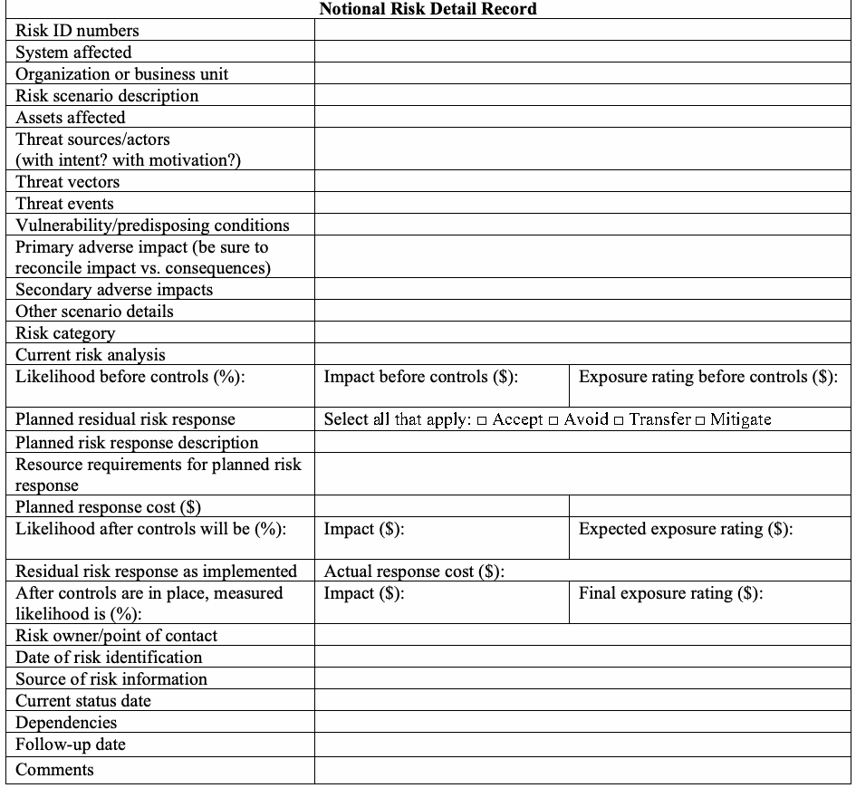
| 想定リスク詳細記録 | ||
| リスクID番号 | ||
| 対象システム | ||
| 組織または事業部門 | ||
| リスクシナリオの説明 | ||
| 影響を受ける資産 | ||
| 脅威源／脅威アクター（意図はあるか。動機はあるか。） | ||
| 脅威ベクトル | ||
| 脅威事象 | ||
| 脆弱性／素因となる状態 | ||
| 主な悪影響（影響度と結果を必ず整合させる） | ||
| 二次的な悪影響 | ||
| シナリオのその他の詳細 | ||
| リスク分類 | ||
| 現在のリスク分析 | ||
| 管理策実施前の発生可能性（%）： | 管理策実施前の影響度（$）： | 管理策実施前のエクスポージャー評価（$）： |
| 計画する残留リスク対応 | 該当するものすべてを選択：□受容 □回避 □移転 □軽減 | |
| 計画するリスク対応の説明 | ||
| 計画するリスク対応に必要な資源 | ||
| 計画した対応のコスト（$） | ||
| 管理策実施後の発生可能性（%）： | 影響度（$）： | 予想エクスポージャー評価（$）： |
| 実施した残留リスク対応 | 実際の対応コスト（$）： | |
| 管理策の実装後に測定した発生可能性（%）： | 影響度（$）： | 最終エクスポージャー評価（$）： |
| リスク所有者／連絡先 | ||
| リスク特定日 | ||
| リスク情報源 | ||
| 現在の状態の日付 | ||
| 依存関係 | ||
| フォローアップ日 | ||
| コメント |
Fig. 15. Notional risk detail record
図15. リスク詳細記録の想定例
未レビュー訳JSON-based digital expressions of the risk register and the RDR notional template with examples are available as supplemental material to the NIST IR 8286 series.
リスク登録簿およびRDRの想定テンプレートと記入例をJSON形式で表したデジタル資料は、NIST IR 8286シリーズの補足資料として入手できる。
未レビュー訳